| 狼と香辛料 | |
| 支倉凍砂 | |
| KADOKAWA / アスキー・メディアワークス (2013) | |
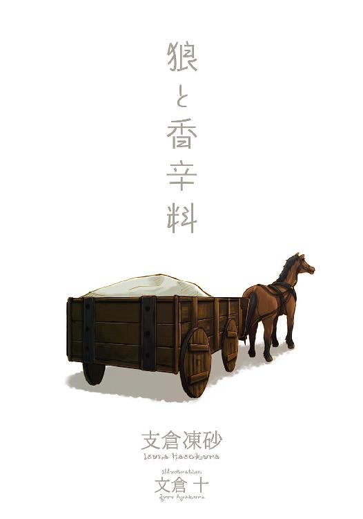
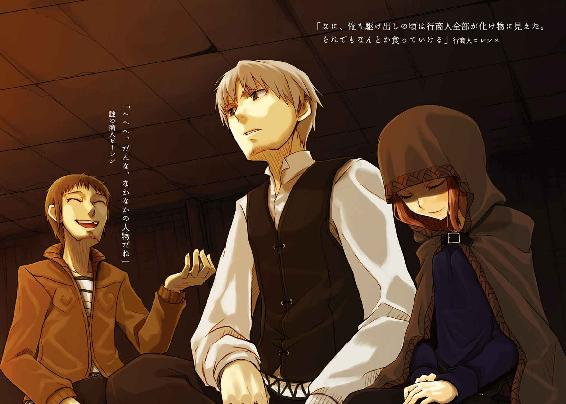
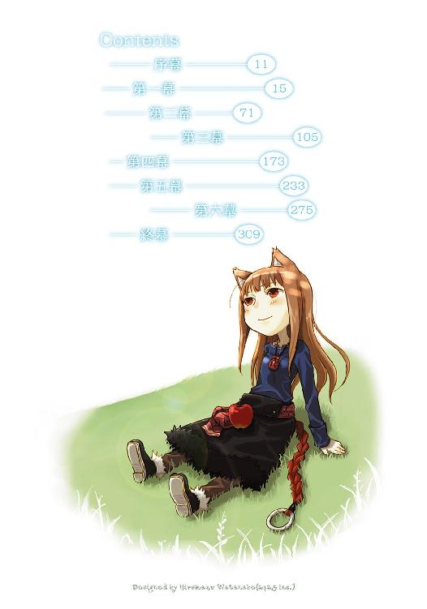
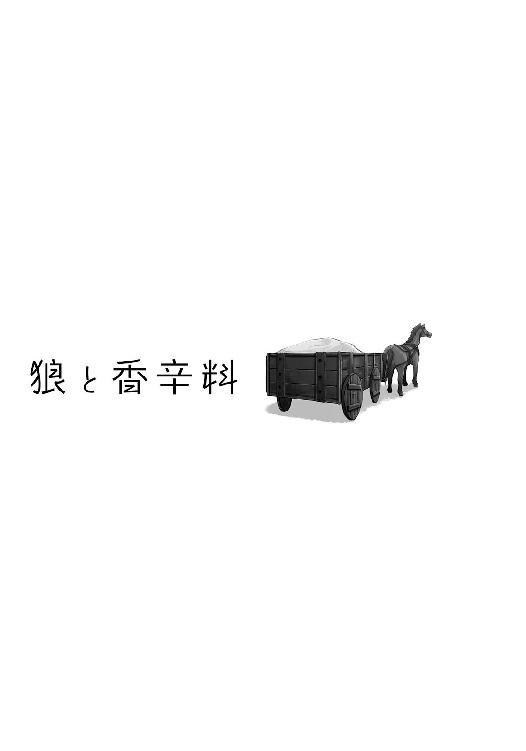
本書（電子版）に掲載されているコンテンツ（ソフトウェア／プログラム／データ／情報を含む）の著作権およびその他の権利は、すべて株式会社アスキー・メディアワークスおよび正当な権利を有する第三者に帰属しています。
法律の定めがある場合または権利者の明示的な承諾がある場合を除き、これらのコンテンツを複製・転載、改変・編集、翻案・翻訳、放送・出版、公衆送信（送信可能化を含む）・再配信、販売・頒布、貸与等に使用することはできません。
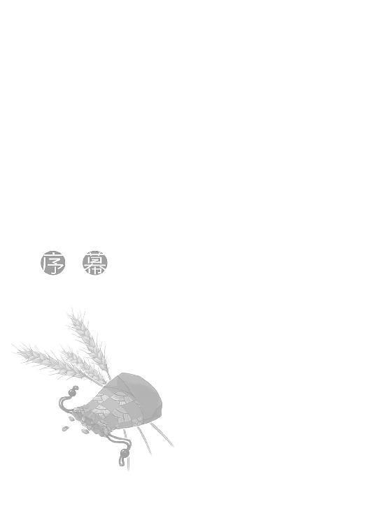
この村では、見事に実った麦穂が風に揺られることを狼が走るという。
風に揺られる様子が、麦畑の中を狼が走っているように見えるからだ。
また、風が強すぎて麦穂が倒れることを狼に踏まれたといい、不作の時は狼に食われたという。
上手い表現だが、迷惑なものもあるのが玉に瑕だな、と思った。
しかし、今となってはちょっとした洒落た言い方になっているだけで、昔のように親しみと恐れをこめてその言葉を使う者はほとんどいない。
ゆらゆらと揺れる麦穂の間から見える秋の空は何百年も変わらないのに、その下の様子は実に様変わりをしていた。
来る年も来る年も麦を育ててきたこの村の者達も、せいぜい長生きして七十年なのだ。
むしろ何百年も変わらないほうが悪いのかもしれない。
ただ、だからもう昔の約束を律儀に守る必要はないのかもしれないとも思った。
何よりも、自分はもうここでは必要とされていないと思った。
東にそびえる山のせいで、村の空を流れる雲はたいてい北へと向かっていく。
その雲の流れる先、北の故郷のことを思い出してため息をつく。
視線を空から麦畑に戻せば、鼻先で揺れる自慢の尻尾が目に入った。
することもないので尻尾の毛づくろいに取り掛かる。
秋の空は高く、とても澄んでいた。
今年もまた収穫の時期がくる。
麦畑を、たくさんの狼が走っていた。
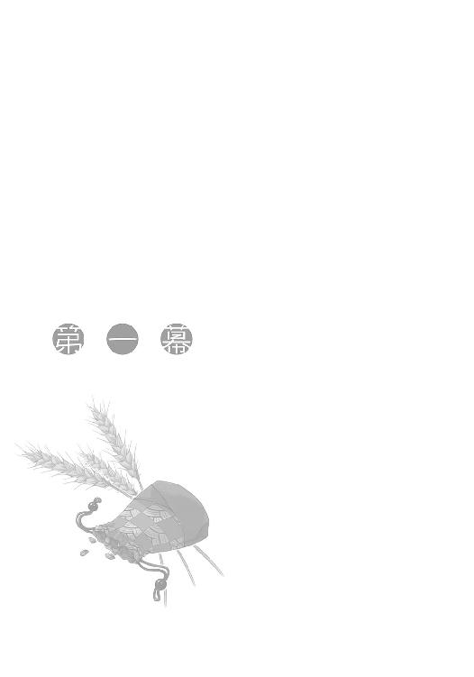
「これで最後、かな？」
「ん、きっちり七十枚......ありますね。毎度どうも」
「なーにこちらこそ。ロレンスさんくらいしかこんな山奥まで来てくれないからな。助かるよ」
「代わりに上等の毛皮もらってますからね。また来ます」
そんないつものやり取りをかわし、山奥の村を出発したのはかれこれ五時間も前だ。日が昇ってすぐに出発して、山から下りて野に出た頃にはもう昼を回っていた。
天気は良く、風もない。荷馬車に乗ってのんびりと野を行くには絶好の日和だ。ここのところ寒かったので、もう冬も近いと思っていたのが噓のようだ。
行商人として独り立ちして七年目、歳にして二十五になるロレンスは、御者台の上で平和な大あくびをしたのだった。
背の高い草も木もほとんど生えていないために視界はとても良い。そのためにかなり遠くまで見通すことができて、視界ぎりぎりの彼方には何年か前に建てられた修道院が見えている。
どこの貴族の子弟を取り込んだのかわからないが、こんな辺鄙な土地にありながらも建物は立派な石造りで、門扉は信じられないことに鉄製だ。確か二十人からの修道士が生活していて、それと同数くらいの下男が彼らの生活を支えているはずだ。
修道院が建てられ始めた頃、ロレンスはその新しい顧客の匂いに期待していたのだが、どうやら修道院は在野の商人を介さず独自に物資を調達しているようで、ロレンスの期待は儚くも散ったのだった。
とはいっても彼らは贅沢もせず畑も耕すので、商売ができたとしても実際の実入りはかなり少なかったりする。その上、無理やり寄付をさせられたりツケを踏み倒されたりもするので考え物だ。
単純な売買の相手としては盗人よりも性質の悪い相手ではあったが、それでも彼らと商売をすれば商人にとって都合の良いことがある。
そんなわけでロレンスは未練がましく修道院のほうを見ていたのだが、不意に目を細めた。
修道院のほうで、誰かがこちらに向かって手を振っているのだ。
「なんだ？」
下男には見えない。彼らはこげ茶色の汚い作業服を身にまとっているからだ。手を振っている者はねずみ色っぽい衣服に身を包んでいる。わざわざそちらに行くのは面倒くさかったが、無視をすると後々問題になりかねない。ロレンスは仕方なく馬の進む方向をそちらに向けた。
すると、手を振っていた者はロレンスが自分のほうに向かって歩き始めたことに気がついたのか、手を振ることをやめたようだが自分から歩こうとはしない。じっと、ロレンスが到着するのを待つつもりのようだ。教会関係者が傲慢なのは今日に始まったことではない。こんなことでいちいち怒る気にもなれなかった。
ただ、のんびりと修道院に近づくにつれてはっきりと見えてきたその姿に、ロレンスは思わず声を上げていた。
「......騎士？」
最初はそんな馬鹿な、と思ったものの、近づけばそれは紛れもない騎士だった。ねずみ色に見えた服は、銀色の甲冑だったのだ。
「貴様、何者であるか」
会話をするにはまだちょっと遠い距離、というあたりで騎士がそう叫んだ。自分は名乗らなくてもどこの誰かわかるだろう、と言いたげだ。
「行商人のロレンスという者ですが、何かご入用ですかね？」
もう修道院は目と鼻の先だ。南に向かって広がっている畑で働く下男達の数も数えられるくらいだ。
そして、どうやら騎士がそれ一人だけではないということもわかった。修道院の向こうにももう一人立っているのが見える。もしかしたら、見張りなのかもしれなかった。
「行商人？ 貴様が来た方向には町などないはずだが」
銀の胸当てに刻まれた真っ赤な十字架を誇らしげに見せるように胸を張って、騎士が横柄にそう言った。
しかし、肩に直接取り付けられている外套もねずみ色で、これは下級騎士を示すものだ。金色の髪の毛を短く刈り込んでまだ間もなさそうだし、体も野戦を潜り抜けているようには見えないから、騎士に成り立てで気負っているのだろう。こういう輩は余裕を持って対処するに限る。あっという間に図に乗るからだ。
だから、ロレンスはすぐに返事をせずに懐から皮袋を取り出して、ゆっくりと口を縛る紐を解いた。中には蜂蜜を固めた菓子が入っている。一粒つまむと口に放り込んで、袋ごと騎士のほうに向けたのだった。
「一つどうです？」
「む」
と、騎士は一瞬迷う素振りを見せたものの、甘い菓子の誘惑には勝てなかったようだ。
ただ、騎士としての意地か、うなずいてから手を伸ばすまでにはだいぶ時間がかかったのだが。
「ここから半日ほどかけて東に行くと、山の中に小さな村があるんですよ。そこに塩を売りに行った帰りです」
「そうか。しかし、積荷があるようだが、それも塩か？」
「いえ、これは毛皮です。ほら」
ロレンスは言いながら荷台を振り向いて、覆いを剝いだ。立派なテンの毛皮だ。目の前の騎士の給料にしたら一年分はくだらないだろう。
「ふん。これは？」
「ああ、これは、その村からもらってきた麦です」
毛皮の山の隅に置いてある麦の束は、ロレンスが塩を売りに行った村で育てられているものだ。寒さに強く虫にも食われにくい。去年北西のほうで冷害が猛威を振るったので売り込みに行くつもりだった。
「ふん。まあ、いいだろう。行っていいぞ」
呼びつけておいてずいぶんな言い草だが、ここでおとなしく「はい」と言ったら商人失格だ。ロレンスはわざと先ほどの皮袋をちらつかせながら、騎士のほうに向き直った。
「何があったんですかね？ 普段はここ、騎士様なんかいないでしょう」
若い騎士は質問されたのが不快だったのか、少し眉根にしわを寄せたがロレンスの手の中にある皮袋を見るとさらにしわを寄せた。
うまく釣れたようだ。ロレンスは紐を解いて一粒つまむと、騎士にくれてやった。
「うむ......うまいな。これは礼をしなければなるまい」
騎士は理屈好きだ。ロレンスは商売用の笑顔で特にありがたそうに頭を下げた。
「この辺りで異教徒の祭りが近々開かれると聞き及んでいる。そのためここの警備を任されているのだが、貴様、何か知らんか」
なんだ、という落胆の色を浮かべてしまうようでは三流もいいところだ。ロレンスはしばし悩む振りをしてから、「存じませんねえ」と答える。実際は大噓だが、騎士の言うことも間違っているのだから仕方ない。
「やはり秘密裏に行われるものなのか。異教徒は総じて卑怯な連中だからな」
騎士の的外れな物言いが面白かったが、ロレンスはもちろん指摘せずにそれに同意すると、おいとまを告げた。
騎士はうなずくともう一度蜂蜜菓子の礼を言ってきた。
よほどおいしかったのだろう。下級騎士は装備や旅費に金がかかるばかりで実際の暮らしは弟子入りしたての靴職人のほうが良い。甘いものを食べたのも久しぶりに違いなかった。
もっとも、かといってこれ以上あげるつもりもロレンスにはない。蜂蜜菓子も安いものではないのだ。
「しかし、異教徒の祭り、ねえ」
修道院を後にしてだいぶ経ってから、ロレンスは騎士の言葉を呟いて、苦笑した。
騎士の言うそれには心当たりがある。というよりも、この近辺にいる者ならば皆が知っていることだろう。
ただ、それは別に異教徒のものでもなんでもない。第一、異教徒などというものはもっともっと北か、もっともっと東のほうにしかいないものだ。
この近辺で行われる祭りというのは、騎士がわざわざ配置されるような類のものではない。どこでも行われる、麦の収穫を祝い豊作を祈願するお祭りだ。
ただ、ちょっとこの辺の祭りは他のところよりも特殊だったり盛大だったりするので、修道院の連中が目をつけて都市部の教会に報告したのだろう。長いこと本格的に教会の手の入らなかったところだから、教会も余計に神経を尖らせているのかもしれない。
それに、最近教会は異端審問や異教徒の改宗に躍起になっているし、最近は都市部での神学者と自然学者の言い争いも珍しくない。昔のようにすべての民衆が無条件に教会にひれ伏すということがなくなってきている。
教会の絶対的であった威厳がほころび始めているのだ。それは町に住む者達ならば口に出せずともうすうす思っていることだろう。実際、教皇は教会税が思ったより入らずに、大神殿の修復費をいくつかの国の王に申し入れたという。十年前ならば信じられない話だった。
そんな情勢なので教会も威厳を復活させようと躍起なのだ。
「どこの商売も大変だな」
ロレンスは苦笑して、蜂蜜菓子を口に放り込んだのだった。
ロレンスが広大な麦畑に着くと、もう西の空は麦よりも綺麗な黄金色だった。遠くで鳥が小さな影となって家路を急ぎ、蛙も寝に入ることを告げているかのようにそこかしこで鳴いていた。
麦畑はほとんど収穫が終わっているようで、祭りは近日中だろう。早ければ明後日には行われるかもしれない。
ロレンスの目の前に広がるのはこの地方では結構な収穫高を誇るパスロエの村の麦畑だ。収穫高が高ければ村人もそこそこ裕福になれる。その上ここ一体を管理するエーレンドット伯爵が近隣に名が轟くほどの変わり者で、貴族のくせに土いじりが好きなせいで自然と祭りにも協力的だから、毎年飲めや歌えの大騒ぎのようだ。
ただ、ロレンスはそれに参加したことがない。残念なことに部外者は参加できないのだ。
「いよう、おつかれさん」
そんな村の麦畑の一角で荷車に麦を積んでいる農夫に声をかけた。よく実った麦だ。先物買いをした連中はほっと胸をなでおろしていることだろう。
「おー？」
「ヤレイさんはどの辺にいるかな」
「おお、ヤレイさんならあっちの、ほれ、あっちで人がたかってるだろ。あの畑だな。今年はヤレイさんのところは若い者ばっかでな。手際が悪いせいで今年はあそこの畑の誰かが『ホロ』だな」
農夫は日焼けした顔にいっぱいの笑みを浮かべながら楽しそうに言う。商人には絶対にいない、裏表のない人間だけが浮かべることのできる笑顔だ。
ロレンスは農夫に商売用の笑顔で礼を言って、馬をヤレイ達のほうに向けた。
その区画は農夫の言った通りに人がたかっていて、畑の中に向かって口々に何かを叫んでいた。
それは最後まで作業をしている連中を囃し立てているのだが、別に作業の遅れを罵っているわけではない。罵ることがすでに祭りの一部なのだ。
ロレンスがのんびりと近づいていくと、やがて騒いでいる内容も聞こえてきた。
「狼がいるぞ狼がいるぞ！」
「それ、そこに狼が横たわっているぞ！」
「最後に狼を摑むのは誰だ誰だ誰だ！」
皆口々に囃し立て、酒が入っているかのように陽気に笑っている。ロレンスが人垣の後ろに荷馬車を止めても誰も気がつかないほどだった。
しかし、彼らが口にしている狼とは実際の狼ではない。実際に狼がいたらさすがに笑っていられないだろう。
狼とは豊作の神の化身で、村の連中から聞いた話では最後に刈り取られる麦の中にいて、それを刈り取った者の中に入り込むという言い伝えらしい。
「最後の一束だ！」
「刈り過ぎないように注意しろ！」
「欲張りの手からはホロが逃げるぞ！」
「狼を摑んだのは誰だ誰だ誰だ」
「ヤレイだヤレイだヤレイだ！」
ロレンスが荷馬車から降りて人垣の向こうをひょいと覗くと、ちょうどヤレイが最後の一束を摑んだところだった。土と汗に汚れた真っ黒な顔に苦笑いをいっぱいに浮かべ、そして一息に麦を刈り取ると束を掲げて空に向かって叫んだのだった。
「アオオオオオオオオオオオン」
「ホロだホロだホロだ！」
「アオオオオオオオオオオオン」
「狼ホロが現れたぞ！ 狼ホロが現れたぞ！」
「それ捕まえろ、やれ捕まえろ！」
「逃がすな、追え！」
それまで口々に囃し立てていた男達が、唐突に走り出したヤレイを追いかけていった。
豊作の神は追い詰められ、人間に乗り移ってどこかに逃げようとする。それを捕らえてまた一年、この畑にいてもらうのだ。
実際に神がいるのかどうかはわからない。ただ、ここの土地の者達はもう長い間それを続けている。
ロレンスは各地を飛び回る行商人だから教会の教えを頭から信じてはいないが、迷信深さや信心深さはこの農夫達以上だ。苦労して山を越えて町にたどり着いたら商品が暴落していた、なんてことは日常茶飯事だ。迷信深くも信心深くもなるというものだ。
だから、熱心な信徒や教会関係者が見たら目をむくようなそんな儀式もロレンスには気にならない。
ただ、ヤレイがホロになってしまったのには少し困った。こうなるとヤレイは祭りが終わるまで穀物庫にご馳走と共に一週間近く閉じ込められ、話ができなくなるからだ。
「仕方ない......」
ロレンスはため息をついて荷馬車に戻ると、馬を村長宅のほうに向けた。
昼間の修道院での話を報告しがてら、ヤレイと久しぶりに酒でも酌み交わしたかったのだが、荷台に積んである毛皮をさっさと換金しないと別の地方で買った商品の代金支払日が迫っている。それに、山奥の村から持ってきた麦も早く売り込みに行きたかったから祭りが終わるまで待つことはできなかった。
ロレンスは祭りの準備を指揮していた村長に手短に昼間のことを伝えると、泊まっていけという誘いを固辞して村をあとにした。
ロレンスは昔、まだこの領地に今の伯爵が来る前、重税が課されているせいで値段が高くなりあまり市場で人気のなかったここの麦を買い、地道に薄利で売っていたことがあった。それは別にこの土地の者達に恩を売るつもりではなくて、単純に別の安くて人気のある麦を、他の商人達と競争してまで買い付けができるほど資金力がなかっただけなのだが、当時のことを今でも感謝されている。ヤレイは、その時の村側の値段交渉人だった。
ヤレイと酒が飲めないことは残念だったが、どの道ホロが出ればいくらもしないうちに部外者を追い出して祭りは佳境に入る。泊めてもらってもすぐに追い出されてしまうだけだ。その疎外感は、独りで荷馬車の上にいることに少し寂しさを覚え始めた身にはちょっと応える。
土産に持たされた野菜をかじりながら進路を西に取り、作業を終えて村のほうに帰っていく陽気な農夫達とすれ違う。
再びいつもの独り旅に戻るロレンスは、仲間のいる彼らが少し羨ましかったのだった。
ロレンスは今年で二十五になる行商人だ。十二の時に親戚の行商人の下について十八で独り立ちをした。行商人としてはまだまだ知らない地域のほうが多く、これからが勝負という感じだ。
夢は金を溜めてどこかの町に店を持ちたいという行商人の例に漏れないものだったが、その夢もまだまだ遠そうだ。何かチャンスがあればそうでもないのだろうが、生憎とそんなものは大商人が金で持っていってしまう。
それにあっちこっちに支払期限をこさえては荷台いっぱいの商品を持って移動しているのだ。チャンスなど見えはしてもとても摑む余裕などはない。行商人にとってそんなものは空に浮かぶ月と同じだった。
ロレンスは空を見上げて、綺麗な満月にため息をついた。最近ため息が多いと自覚をしてはいたが、食っていくためにがむしゃらに頑張ってきた反動なのか、ある程度余裕が出てきた最近はつい将来のことなどを考えてしまう。
それに加え、頭の中が売掛債権や支払期限のことでいっぱいで、一刻でも早く次の町に行かなければと必死になっていた頃には思いもしなかったことが、よく頭の中を駆け巡っている。
具体的に言えば、今まで知り合ってきた人達のことだ。
度々行商で訪れる町で親しくなった商人達や、買い付けに行った先で仲良くなった村人達。それに雪による足止めを食らった時に長逗留した宿で好きになった女中のことなどなど。
要するに人恋しいと思うことが多くなったのだ。
一年のほとんどを独り荷馬車の上で過ごす行商人にとって人恋しくなるのは職業病ともいえたが、それをロレンスが実感し始めたのは最近のことだ。それまでは俺に限ってそんなことあるものかとうそぶいていた。
しかし、一人で何日も馬と一緒に過ごしていると、馬が話しかけてきてくれればな、などと思ってしまうこともある。
だから、行商人同士の会話の中で時折耳にする荷馬が人間になったという話なども、聞いた当初こそ笑い飛ばしていたものの、最近ではつい本当なのかと思ってしまう。
馬屋の主人の中には若い行商人が荷馬を買う時、馬が人間になってもいいように雌の馬を買っておけ、なんて真顔で勧める者もいるくらいだ。
ロレンスもそんなことを言われた口だったが、もちろん無視して力強い雄の馬を購入した。
その馬は今でも元気に働いてくれているロレンスの目の前にいる馬なのだが、時折やってくる人恋しさの波に洗われるとついつい雌の馬を購入するべきだったかと思ってしまう。
もっとも、来る日も来る日も重い荷物を運ばせているのだ。例え人間になったとしてもよく聞く話のように馬の持ち主である行商人と恋に落ちたり、不思議な力で行商人に幸運を授けてくれたりするとはとても思えない。
せいぜいが休憩と給料を請求されるくらいだろうと思う。
そう考えると途端に馬は馬のままでよいと願いたくなるのだから勝手なものだ。ロレンスは独り苦笑いをして、自分自身を呆れるようにため息をついたのだった。
そんなことをしているとやがて川に突き当たり、今日はこの辺で野宿をすることにした。いくら満月で道が明るくても川に落ちないとは限らないからだ。そんなことになれば一大事どころではない。ロレンスは首をくくらなければならなくなる。それだけはごめんだった。
ロレンスが手綱を引き、止まる合図を出すと馬もようやく訪れた休憩の気配に気がついたようだ。二、三度足踏みをしてから、ため息のようにいなないた。
ロレンスは食べ残した野菜を馬に食わせながら、荷台から桶を取って川で水を汲むと馬の前に置いた。ばっしゃばっしゃとうまそうに飲むのでロレンスも村でもらった水を飲む。
本当は酒がよかったのだが、話し相手がいないところで酒を飲んでも余計に寂しさが募るだけだ。つい深酒をしないとも限らないので、ロレンスはさっさと寝ようと決断した。
ここに来るまでの間、野菜をかじっていたら中途半端に腹が膨れてしまったので干し肉を一切れだけ口にくわえて荷台に乗り込んだ。いつもは荷台の覆いを兼ねている麻布に包まって寝るのだが、今日はテンの毛皮がせっかくあるのだからそれの中で寝ない手はない。さすがのロレンスでも多少気になる獣臭だが、寒いよりかはましだ。
ただ、毛皮の布団に潜り込む前に麦の苗をつぶしてしまっては困るので、それらを移動させようと思って覆いを剝いだ。
その時叫び出さなかったのは、あまりにもその光景が信じられなかったからかもしれない。
「......」
なんと、先客がいたのだ。
「おい」
と、声が出たかどうかはわからない。単純に驚いていたのもあるし、ついに寂しさのあまり幻覚を見たのかと思ったのだ。
しかし、頭を振って目をこすっても、その先客の姿は一向に消えはしない。
美しい顔立ちの娘は、ちょっと起こすのが忍びないほどによく眠っていた。
「おい、ちょっとお前」
それでもロレンスは気を取り直してそう言った。何のつもりで人の荷馬車で寝ているのか、と問いたださなければならない。下手をすれば村からの家出娘かもしれないからだ。面倒に巻き込まれるのはごめんだった。
「......んう？」
が、ロレンスの声に目を閉じたまま反応した娘の声はそんな間の抜けた無防備なもので、女と接するのはせいぜい町の娼館くらいしかない行商人にはくらっとくるような甘い声だ。
しかも、月明かりの下で毛皮に包まって寝ている娘はまだまだ年若そうなものの、恐ろしいほどの色気がある。
思わず生唾を飲み込んでしまったが、逆にそれでロレンスはすぐに冷静になった。
これだけ美しければ、商売女なら下手に触ればいくら取られるかわかったものではなかったからだ。金勘定は教会のお祈りよりも自らを冷静にさせる特効薬だ。ロレンスはすぐにいつもの調子を取り戻して声を上げていた。
「おい、起きろ。お前、人の荷馬車で何やってんだ」
しかし娘は一向に起きようとしない。
業を煮やしたロレンスは一向に起きようとしない娘の頭を支えている毛皮を摑み、一思いに引き抜いた。支えを失った娘の頭はこてんと穴の中に落ち、それでようやく不機嫌そうな声が聞こえてきた。
ロレンスは再度声を上げようとして、そのまま固まった。
娘の頭に、犬のような耳がついていたのだ。
「ん......ふあ......」
それでもようやく娘が目を覚ましたようなので、ロレンスは気を取り直して腹に力をこめて口を開いた。
「おい、お前、何のつもりだ。人の荷馬車に勝手に乗り込みやがって」
ロレンスも独り野を行く行商人で、ごろつきや盗賊の類に取り囲まれたことは一度や二度ではない。度胸も迫力も人並み以上にあると自負していた。頭に人ならざる獣の耳を付けているからといって、一人の娘を前に怖気づくようなロレンスではない。
しかし、ロレンスの言葉に娘は返事を返さなかったというのに、再度のロレンスの尋問の声は上がらなかった。
なぜなら、ゆっくりと体を起こした裸の娘が、声を失うほどに美しかったからだ。
荷台の上で月明かりに照らされた毛は絹のように滑らかで、上質のマントのように背中まで垂れている。首から鎖骨、それに肩にかけては稀代の芸術家が彫り上げた聖母の像のように美しいラインを描き、しなやかな腕は氷の彫像のようだった。
そして、それら無機質に感じるほどに美しい体の中ほどにある二つの控えめな乳房が妙にイキモノ臭さを匂わせていて、ぞっとする魅力の中に温かさを宿していた。
ただ、そんな生唾ものの光景もすぐに眉をひそめる異様なそれへと変わる。
娘が、ゆっくりと口を開いて空を向くと目を閉じて吠えたのだ。
「アオオオオオオオオオオオォ......ン」
その時のロレンスの恐怖といったらない。ざざざざざ、と突風が体中を駆け抜けていくような恐怖。
遠吠えは狼や犬が仲間を集め、人間を追い詰める序曲だ。
ヤレイがしたような遠吠えではない、本物の遠吠え。ロレンスは口から干し肉を落とし馬も驚いて飛び上がった。
そしてハッと気がついた。
月明かりに照らされた娘の姿。娘の頭についている耳。獣の、それ。
「......ふう。良い月じゃ。酒などないかや」
が、遠吠えの余韻をゆっくりと閉じた口の中にしまいこむと顎を引いて薄く笑いながらそう言った娘の声で、ロレンスは我に返った。
目の前にいるのは狼でも犬でもない。そんなような耳をつけているただの美しい娘だ。
「そんなものはない。第一お前は何者だ。なんで俺の荷馬車で寝てやがる。町に売られるのが嫌で逃げてきたのか」
ロレンスは精一杯どすを利かせたつもりだったが、娘は一向に動じない。
「なんじゃ、酒はないのかや。なら、食べ物は......と、おや、もったいない」
娘は緊張感のない声でそう言って、ひくひくと小鼻を動かすとさっきまでロレンスのくわえていた干し肉を見つけたらしく、荷台に落ちていたそれをひょいと拾って口にくわえた。
娘が干し肉をかじる時、ロレンスは娘の唇の内側に二本の鋭い牙があるのを見逃さなかった。
「お前、悪魔憑きの類か」
ロレンスは腰にくくりつけてある短剣に手をかけながらそう言った。
貨幣は価値の変動が大きいので行商人は儲けを物に変えて持ち歩く。銀の短剣はそんなもののうちの一つで、銀はあらゆる化け物に打ち勝つ神の金属だ。
しかし、ロレンスが短剣に手をかけてそう言うと、娘はきょとんとした後、突然笑い出したのだった。
「あはははは、わっちが悪魔か」
干し肉を落とすくらいに大口を開けて笑う娘の様子はちょっとたじろぐくらいに可愛らしい。二本の鋭い牙もそんな様子だと逆に魅力的に見える。
ただ、そんなだからこそなんとなく笑われて腹が立つ。
「な、何がおかしい」
「そりゃあおかしいさね。わっちゃあそんなこと言われるの初めてじゃ」
依然クスクスと笑いながら、娘は落とした干し肉を拾うと再びかじった。やはり牙が生えている。耳のことも含めて、少なくともまともな人間ではないようだ。
「お前、何者だ」
「わっち？」
「お前以外に誰がいる」
「そこの馬」
「......」
ロレンスが短剣を引き抜くと、さすがに娘の顔から笑みが消えた。赤味がかった琥珀色の瞳が、すっと細められる。
「お前は何者だ？」
「わっちに剣を向けるとは礼儀知らずじゃな」
「なんだと？」
「ん、あ、そうか。脱出成功しとるんじゃった。ごめんよ。忘れとったわ」
そう言って娘がにこりと笑った。まったく邪気のない、可愛らしい笑顔だ。
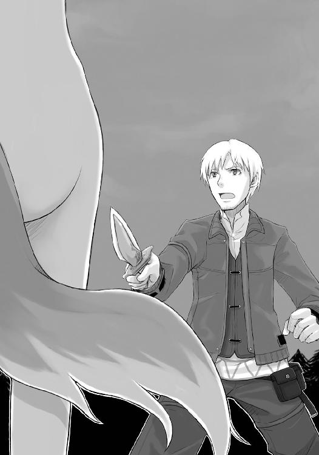
それで籠絡されたわけでもないが、なんとなく短剣を向けるのは男として駄目なような気がして、ロレンスはそれをしまったのだった。
「わっちの名前はホロ。しばらくぶりにこの形を取ったがな、うん、なかなか上手くいっとるの」
自分の体を見回しながら言った娘の言葉の後半は何のことかよくわからなかったが、前半には引っかかるものがあった。
「ホロ？」
「ん、ホロ。良い名前じゃろ」
ロレンスは色々な地域を旅して回っているが、そんな名前は一箇所でしか聞いたことがない。
つまり、先ほどのパスロエの村の豊作の神の名だ。
「奇遇だな。俺もホロという名で呼ばれる者を一人知っている」
神の名を騙るとは大胆な娘だ、とは思ったが、これでこの娘が村の者だとわかった。もしかしたら、この牙と耳のせいで家の中に隠して育てられていた類の者かもしれない。脱出成功、などと言っていたのもそれで納得できるような気がした。
ロレンスも時折こういった人外のような子供が生まれる話を耳にする。悪魔憑きと呼ばれ、生まれる時に悪魔や妖精が入り込んでしまった子供のことで、教会に見つかれば場合によっては悪魔崇拝の罪で家族もろとも容赦なく火刑に処されるため、そのほとんどが山に捨てられるか、一生家の中で隠して育てられる。
ただ、実際に悪魔憑きの者を見るのはロレンスも初めてだ。てっきり醜悪な化け物を想像していたのだが、少なくとも見た目に関しては女神といってもおかしくはなかった。
「ほう、わっちゃあわっち以外にホロと呼ばれる者を知らなんだ。そいつはどこの者かよ？」
もぐもぐと干し肉をかじる娘、ホロはどうにも人をたばかっているようには見えない。しかし、長い間家に閉じ込められて育てられていれば自分を神と思い込むのもありそうなことだとは思った。
「この近辺の豊作の神の名だ。お前は神なのか？」
ロレンスがそう言うと、月明かりの下でホロは一瞬困ったような顔をしてから、そこに笑顔を追加した。
「わっちは神と呼ばれて長いことこの土地に縛られていたがよ、神なんてほど偉いもんじゃありんせん。わっちゃあホロ以外の何者でもない」
生まれてからずっと家の中、という意味だろうとロレンスは察しをつける。そう思うとその娘が少し不憫ではあった。
「長いこと、てのは生まれてからずっとか」
「いんや」
だから、その答えは意外だった。
「わっちの生まれはもっとずっと北の大地よ」
「北？」
「うん。夏は短く、冬が長い、銀色の世界よ」
目を細めてふいと遠くを見たホロは、とても噓をついているようには見えない。そんな仕草も、遠くの北の大地を思い出している演技にしては、あまりにも自然だった。
「ぬしは行ったことあるかいな」
そして、ロレンスは逆にそんなことを聞かれた。少し虚を突かれたものの、これでホロが噓をついていたり耳にした話をもとに喋っているのだとすればすぐにわかる。
ロレンスの行商経験は実に極北と呼ばれる地域にまで及んでいるからだ。
「アロヒトストック、てところが最北だな。年中吹雪の恐ろしいところだ」
ロレンスがそう言うと、ホロは少し首をひねってから返事をした。
「ふうん。聞いたことありんせん」
知ったかぶると思ったので、これは意外な対応だった。
「どこならあるんだ？」
「ヨイツ、てところ。どした？」
ロレンスは「いや」と言って顔に出てしまった動揺を無理やりに消した。ヨイツという名前は聞いたことがある。ただし、北の大地の宿で聞いた昔話の中で、だ。
「おまえは、そこの生まれなのか？」
「そうじゃ。今ヨイツはどうなっとるかや。皆は、元気なのかや」
そう言ってホロは少し肩と視線を落としたが、そんな様子があまりにも儚げで、とても演技のようには見えない。
しかし、ロレンスはその話を信じることなどできない。
なぜなら、昔話の中でその名の町は六百年も前に熊の化け物によって滅ぼされたからだ。
「他には覚えている地名はないのか？」
「ん......なんせ何百年も前の話じゃ......、えーとな、あ、ニョッヒラ、とかいう町があったわいな。温かい湯の出る不思議な町じゃ。よく湯に浸かりに行った」
ニョッヒラ、というのは今でもある北の大地の温泉街で、外国の王侯貴族も時折やってくる。
ただ、この近辺でニョッヒラのことを知っている者が何人いるだろうか。
そんなロレンスの思考をよそに、ホロは今まさに湯に浸かっているようなほんわかとした口調でそう言って、突然小さくくしゅんとくしゃみをした。
それでようやくロレンスも思い出す。ホロは裸だった。
「うう、人の姿は嫌いではないが、いかんせん寒い。毛が少なすぎる」
笑いながら言ってから、ホロはテンの毛皮の山の中にもぐりこんだ。
ロレンスはホロの様子に不覚ながら少し笑ってしまったが、少し気になることがあったので毛皮の中にもぐっていくホロに言葉を向けた。
「お前、さっきも形がどうとか言ってたな。どういう意味だ？」
そして、ロレンスの質問にホロはぴょこんと毛皮の山の中から顔だけを出した。
「まんまの意味じゃよ。人の形は久しぶりに取る。可愛いじゃろ」
にこりと笑いながらそう言うので、つい胸中で同意してしまったのだが、ロレンスはなんとかそれを顔に出さず口を開く。どうにもこの娘はロレンスの調子を狂わせる。
「余計なものがついてるだけでお前は人だろう。それとも何か。馬が人になる話みたいに、犬が人にでもなったのか」
少し挑発するようにそう言うと、ホロはその挑発に乗ったとばかりにおもむろに立ち上がった。それからくるりと背中を見せて肩越しに振り向いて、実に堂々と言い放ったのだった。
「わっちはこの耳と尻尾を見てわかるとおり、それはそれは気高き狼よ。仲間も、森の動物も、村の人間もわっちには一目置いていた。この、先っぽだけ白い尻尾はわっちの自慢じゃった。これを見れば皆が褒め称えたものよ。この、尖った耳も自慢じゃった。この耳はあらゆる災厄とあらゆる噓を聞き漏らさず、たくさんの仲間達をたくさんの危機から救ってきた。ヨイツの賢狼と言えば、それは他ならぬわっちのことよ」
ふん、とホロは得意げにそう言ったものの、すぐに寒さを思い出したのか体を縮めて毛皮の下にもぐってしまった。
ただ、ロレンスは少し呆然としていた。ホロの裸が綺麗だったのもあるし、腰の辺りについていた尻尾は、確かに動いていたのだ。
耳だけならず、尻尾までも。
そして、ロレンスは先ほどの遠吠えを思い出す。あれは紛れもない本物の狼の遠吠えだ。だとしたら、まさか、本当にホロは豊作の神、狼のホロ？
「いや、そんなまさか」
ロレンスは自問自答するように呟いて、再度ホロのほうを見る。対するホロはロレンスのことなど気にせずに、毛皮の中で温かそうに目を細めている。そんな様子は猫のようにも見えなくはないが、問題はそんなことではない。ホロは人なのかそうでないのか。それこそが問題だった。
悪魔憑きと呼ばれる者は何も見た目がまともな人間でないから教会に見つかるとまずいのではない。悪魔憑きと呼ばれる者達はその体の中に悪魔や精霊を宿しているために、往々にして災いの源となる。そのために教会は彼らを火刑に処するようにと触れて回っている。
しかし、もしホロが何か動物が姿を変えたものだとしたら、たくさんの昔話や言い伝えではそれらは大抵人に幸運を授けたり奇蹟を起こしたりしてくれる。
実際、もしもホロが本物のホロであるのなら、小麦取引にこれ以上心強い味方もいないだろう。
ロレンスは、意識を頭の中からホロへと向ける。
「ホロ、といったか」
「うん？」
「お前、自分のことを狼だと言ったが」
「うむ」
「お前についているのは狼の耳と尻尾だけじゃないか。本物の狼の化身なら、狼の姿も取れるはずだろう」
ロレンスがそう言うと、ホロは少しの間ぽかんとしてから、ふと何かに気がついたような顔をした。
「ああ、ぬしはわっちに狼の姿を見せろと？」
ホロの言葉にロレンスはうなずいたが、実のところ少し驚いていた。
というのも、てっきりホロは困った顔をするか、あからさまな噓をつくと思ったのだ。
しかし、ホロはそのどちらもでもなく、嫌そうな顔をした。本当なら軽く狼に戻れるのだが、とか下手な言い訳をするよりもよほど説得力のある嫌そうな顔だ。そして、それからはっきりと言った。
「それは、嫌じゃ」
「な、なんでだ」
「そっちこそなんでじゃ」
不機嫌な顔でまたも逆に問われロレンスはたじろいでしまうが、ロレンスにとってホロが人であるかないかは実に重要な問題なのだ。たじろいだ体に活を入れ、なるべく会話の主導権を取れるようにと力をこめて口を開いた。
「お前が人なら俺は教会にお前を突き出そうと思っている。悪魔憑きは災いの源だからな。しかし、もしもお前が本当に豊作の神ホロで、自分のことを狼の化身だと言うのなら、それを思いとどまってもいい」
もしも本物なら、動物の化身は大抵幸運をもたらす使者として話に残っている。教会に突き出すのを思いとどまるどころか、ぶどう酒とパンを振る舞ってもよいくらいだ。が、そうでないのなら事態は逆転する。
そして、ロレンスの言葉にホロはますます嫌そうに顔をゆがめると、鼻の頭にしわを寄せたのだった。
「俺の聞く話じゃ、動物の化身は自在に姿を変えられるそうじゃないか。お前が本物なら、元の姿に戻れるだろう？」
ホロは嫌そうな顔をしたままロレンスの話を黙って聞いていたが、やがて小さくため息をつくとゆっくりと毛皮の中から体を起こした。
「教会には何度かひどい目にあわされたからの。突き出されるのはごめんじゃ。しかしの」
それからもう一度ため息をついて、ホロは自分の尻尾を撫でながら続けたのだった。
「どの化身であっても代償なしに姿を変えるのは無理じゃ。ぬしらも人相を変えるには化粧をするし、体型を変えるには食べ物が必要じゃろう」
「何か必要なのか」
「わっちの場合はわずかの麦か」
なんとなく豊作の神っぽいその代償にロレンスは妙に納得してしまったが、次の瞬間にぎょっとした。
「それか、生き血じゃな」
「生き......血？」
「それほど量はいらぬがな」
なんでもないことのように言うあたりが、とても思いつきの噓に思えずロレンスは固唾を飲んでしまったが、ハッとしてホロの口元に目をやった。ついさっき、ロレンスの落とした干し肉を拾ってかじった時に見えた、ホロの唇の下にある二本の牙。
「なんじゃ、臆したかや」
と、そんな様子のロレンスに向かってホロが苦笑いをする。ロレンスは反射的に「そんなわけあるか」と答えていたものの、ホロは明らかにその反応を楽しんでいた。
しかし、ホロはそんな笑みをやがて消して、視線をロレンスからふいとそらすと言ったのだった。
「ぬしがそんなだと、なおさら見せるのは嫌じゃ」
「な、なんでだ」
ロレンスは馬鹿にされた気がしてつい口調を強めてそう尋ね返したが、ホロは相変わらずロレンスのほうから視線を逸らしたままひどく哀しげな口調で答えたのだった。
「ぬしは必ず恐れおののくからじゃ。わっちの姿の前に、人も動物も畏怖の眼差しを持って道をあけ、わっちを特別な存在に祭り上げる。もう、わっちは人であっても動物であっても、そんなふうにされるのが嫌なんじゃ」
「お、俺がお前の姿に怖がるとでも」
「強がりを言うのなら、せめて震える手を隠しんす」
呆れるようなホロの言葉にロレンスはつい自分の手を見てしまってから、しまったと思った時には遅かった。
「くふ。ぬしは正直者じゃの」
ホロは少し楽しそうにそう言ったが、ロレンスが言い訳をする前にすっと表情を改めると矢継ぎ早に言葉を紡ぐ。
「けど、わっちとしてはぬしが正直者であるのなら、狼の姿を見せぬこともない。さっきのぬしが言った言葉、本当かや？」
「さっきの？」
「わっちが狼であるのなら、教会には突き出さん」
「む......」
悪魔憑きの中には幻覚を使う者もいると聞く。だからそれだけでは即断できそうになかったのでロレンスは口ごもったのだが、ホロはそれを見越していたように口を開いた。
「まあ、わっちも人と動物を見る目には自信がある。ぬしはきっと約束を守ってくれる御仁じゃろうよ」
いたずらっぽいホロのその物言いに対し、ロレンスはますます口ごもるしかない。そんなことを言われてはここで言葉を翻すことなどできないからだ。いいように手玉に取られているのがありありとわかったが、どうしようもなかった。
「ではわずかばかり見せるが、全身は難儀じゃ。腕だけで勘弁してくりゃれ」
ホロはそう言うとおもむろに腕を荷台の隅っこに伸ばした。
何かそういう特殊な格好が必要なのかと思ったのは一瞬のことで、すぐにホロの行動の意味がわかった。荷台の隅に置いておいた麦束から、麦を数粒つまんだのだ。
「それをどうするんだ？」
思わずそう聞いてしまったロレンスだったが、ホロはロレンスが言い終える前に手に持っていた麦を口に放り込み、まるで丸薬を飲み下すように目を閉じて飲み込んだ。
籾殻のついたままの麦などとても食えたものではない。口に広がる嫌な苦味を想像してロレンスは眉根にしわを寄せたが、そんなものは次の瞬間に吹き飛んだ。
「う、うう......！」
突然ホロがうなり声をあげ、左腕を抱きかかえるように押さえると毛皮の上に突っ伏したのだ。
とても演技には見えないそれにロレンスが慌てて声をかけようとすると、その耳に異様な音が飛び込んできた。
ざわざわざわざわという、たくさんの鼠が森の中を走っていくような音だ。それが数瞬続いたかと思うと、次いで柔らかい土の中に足を突っ込んだ時のようなズボッという鈍い音がした。
ロレンスはただ驚くだけで何もできなかった。
そして、その直後にはホロのあの細い腕が、体に不釣合いなほどに巨大な獣の前足になっていたのだった。
「む......ふう。やはり不恰好じゃの」
あまりにそれが大きいため、おそらく自分の力では支えられないのだろう。ホロは毛皮の上に肩から生えた獣の前足を置いて体を横たえた。
「どうじゃ、信じてくれたかや」
それから、ロレンスのほうを見上げてそう言ったのだった。
「う......む......」
しかし、ロレンスは返事もできず、何度か目をこすったり頭を振ったりしながら何度もそれを見直した。
こげ茶色の毛足の長い毛に覆われた、実に見事な前足だ。その大きさから察するに、その足を持つ体はおそらく馬に匹敵するくらいの巨大さだろう。その先端についている爪などは、女が麦を刈る時に使う鎌ほどもあった。
そんなものが娘の細い肩から生えているのだ。幻覚と思わないほうがおかしい。
目の前の光景がどうしても信じられず、ロレンスはしまいには水の詰まった皮袋を手に取って、中の水で顔を洗ったのだった。
「疑り深いのお。幻覚だと思うのなら触ってみればよかろう」
ホロは笑いながら、少し挑発するように大きな掌をくいくいと動かした。
ロレンスはさすがに少しムカッときたもののやはりその異様な光景に尻込みをしてしまう。なにより、その大きさもさることながら、その足からは何か近寄りがたい雰囲気がにじみ出ていたのだ。
それでも再度ホロの前足がくいくいと動いたので、ロレンスは意を決して御者台から体を乗り出した。
狼の足がなんだ。俺は『竜の脚』という名の商品を扱ったことがある。そんな言葉を自分に言い聞かせながら、ロレンスがホロの足に手を触れようとした瞬間だった。
「あ」
という何かに気がついたようなホロの声にロレンスは慌てて手を引っ込めた。
「う、うわ。な、なんだ」
「ん、いや、なに......というか、ぬしも驚き過ぎじゃろ」
殊更呆れるように言われ、ロレンスは恥ずかしさもあいまって実に腹が立ったのだが、ここで怒ってはますます男としてだめな気がする。ロレンスはなんとか自制するともうその手には乗らないとばかりに手を伸ばしながら、再度ホロに尋ね返したのだった。
「で、なんだ。どうした」
「うん」
すると、ホロは突然しおらしい声を出して上目遣いにロレンスのほうを見た。
「優しくしてくりゃれ？」
少し甘えるようなそんな言葉に、ロレンスは体ごと手が止まるのを防げなかった。
そして、ロレンスがホロのほうを見ると、ホロはにやにやと笑っていたのだった。
「ぬし、可愛すぎじゃな」
もうロレンスはホロの言葉に一切耳を貸さず、ホロの前足に乱暴に手を伸ばしていた。
「どうじゃ、信じてくれるかや」
ロレンスはホロの言葉に返事をせず、その手の中の感触を確かめていた。
半分近くはからかわれたことに対して怒っていたのだが、返事を返さなかったのには別の理由もある。
まさしく、その手触りによってだ。
ホロの肩から生えている獣の足は、大木のような重量感を与える太い骨が戦士の腕のような筋肉で覆われ、その上に実に見事なこげ茶色の長い毛が生え揃っている。肩の付け根から手首のほうにいくと、これもまた大きな掌だ。肉球などその一つ一つが切り分けられていないパンの塊のように大きい。綺麗な桃色をしている柔らかいそれを越え、さらにその先にいくとそこには一転して硬質なものがある。鎌のような爪だ。
足もそうだったが、その爪の感触はとても幻覚とは思えない。冷たくも温かくもない獣の爪特有の手触りに加え、触れてはならないようなものに触れている感覚がロレンスの背筋をあわ立たせる。
ロレンスは固唾を飲んで、思わず呟いていた。
「お前は、本当に神なのか」
「神なんかじゃありんせん。足の大きさからわかるじゃろうけど、少し体が大きくて、そうじゃな、周りより賢い狼じゃ。わっちはホロ。賢狼ホロじゃ」
自分のことをぬけぬけと賢いと言うその娘は、得意げな顔をしてロレンスのほうを見る。
そんな様子はいたずら好きの少女以外の何物でもないが、その肩から生える獣の足からにじみ出る雰囲気は、とてもまともな獣のものとは思えない。
ただ大きいだけ、というような印象では明らかにないのだ。
「で、どうかや」
再度の質問に、ロレンスは考えがまとまらずあいまいにうなずいていた。
「しかし......本物のホロは、今頃ヤレイの中にいるはずだろう。最後の麦を刈り取った者の中にいると......」
「ふふふ。わっちは賢狼ホロじゃ。わっちがいかなる制限をこの身に加えられておるかは十分に把握しておる。わっちは正確に言えば麦の中におるんじゃ。麦がないと生きていけぬ。そして、確かにわっちはこの収穫の時期、最後に刈り取られる麦の中にいるし、いつもはそこから出られぬ。人の目があるといかん。しかし、例外がある」
ホロのよく回る口に感心しながらロレンスは話を聞く。
「もし、最後に刈り取られる麦よりも多くの麦が近くにあれば、わっちは人の目に触れず麦の中を移動できる。だから村の連中は言うじゃろ。麦を欲張って刈ると、豊作の神を追い詰められずに逃げられてしまうと」
ロレンスはハッとして視線を荷台の一点に向けた。
そこにあるのは麦の束。ロレンスが山奥の村から譲り受けてもらった麦だ。
「まあ、だからなんじゃ。ぬしはわっちの恩人といえば恩人じゃな。ぬしがおらんとわっちは外に出られんかった」
ロレンスはその言葉をにわかには信じられなかったが、再び麦を数粒飲んで腕を元に戻す様がホロの言葉に異様な説得力を持たす。
ただ、ホロが恩人という言葉を少し嫌そうに言うのでロレンスはとっさに少し仕返しを思いついた。
「ならその麦を持って村に帰るかな。豊作の神がいなくなるとなれば困るだろうからな。ヤレイ達や、パスロエの村の者達とは長い付き合いだ。あいつらが困る姿は見たくない」
そんな言葉は思いつきのものだったが、よくよく考えるとそのとおりだ。もしもホロが本物のホロならば、あの村からいなくなると村が凶作に見舞われるのではないのか。
しかし、そんな物思いも数瞬で消えた。
というのも、そのホロが裏切られたような顔をしてロレンスのほうを見ていたからだ。
「そんな......ぬし、噓じゃろ？」
今までとは違う弱々しいその表情に、免疫のないロレンスはたちまち動揺してしまう。
「さあて、ね」
動揺した内心を落ち着けるために時間が欲しく、ロレンスは時間を稼ぐためにとっさにそうはぐらかした。
が、頭は同時に別のことも考えており、内心は落ち着くどころかますますざわついていく。
ロレンスは迷っていたのだ。もしもホロが本物のホロであり、それが豊作の神であるのなら、ロレンスが取るべき行動は麦を持ってパスロエの村に帰ることだ。パスロエの村の者達とは長い付き合いなのだ。彼らが困る姿は見たくない。
しかし、ロレンスが視線をホロに戻せば、ホロはさっきまでのふてぶてしい様子ではなく、騎士道物語に出てくる囚われの姫はかくやといった感じで不安げにうつむいているのだ。
ロレンスは苦虫を嚙み潰したような顔をして、自問した。
こんな様子の娘を、嫌がっているのに村に返してよいものか。
しかし、もし本物のホロなら。
その二つがせめぎあい、ロレンスは脂汗を流しながら考える。
そして、ふと自分のほうを見る視線に気がついた。他に誰がいるわけでもない。視線のほうを見れば、ホロがすがるような目でロレンスのことを見上げていた。
「助けて......くりゃれ？」
小首をかしげるようにホロに言われ、ロレンスは耐え切れずに顔を背ける。日々見つめているのが馬の尻なのだ。それが突然ホロのような娘にそんな顔をされたらとても堪えられるものではない。
ロレンスは苦々しく一つの決断を下した。
だからロレンスはホロのほうをゆっくりと向くと、一つの質問を口にしたのだった。
「一つ、聞きたいんだが」
「......うん」
「お前がいなくなるとパスロエの村は麦が育たなくなるんじゃないのか」
そう尋ねたところでホロが自分に不利になるようなことを言うとも思えなかったが、ロレンスも一人前の行商人だ。噓をつくのが当たり前の商談を数多く経験しているのだ。ホロが明らかな噓をつけばすぐにわかる自信があった。
だから、ロレンスは一片の噓も見逃すまいと構えて返事を待っていたのだが、それはなかなかこなかった。
視線を向ければ、ホロはこれまでロレンスに見せてきたものすべてと違う、怒ったような、それでいて今にも泣き出しそうな顔で、荷台の隅を見つめていたのだ。
「ど、どうした」
と、ロレンスがつい聞いてしまったくらいだった。
「あの村は、わっちなんかおらんでもこの先豊作が続くじゃろうよ」
不機嫌そうにそう切り出し、その声は驚くほど怒っていた。
「......そうなのか？」
その芯から怒っていることがひしひしと伝わる迫力に気圧されながらロレンスが尋ねると、ホロはその細い肩をいからせながらうなずいた。見れば、その両手は手元の毛皮を力一杯に握り締めて白くなっていた。
「わっちは長いことあの村にいた。尻尾の毛の数ほどいた。途中からはいやいやじゃったが、それでもあの村の麦のために手を抜いたことなどありんせん。わっちはな、大昔にあの村の青年と約束したんじゃ。あの村の麦をよく実らせてくりゃれと。じゃからわっちはその約束を守ってきた」
ロレンスのほうすら見ずに語気荒く語るのは、よほど腹に据えかねていることだからだろう。
さっきまで実によく回る口で喋っていたホロは、何度か後を続けようとして言葉に詰まっていた。
「わっちは......わっちは麦に宿る狼じゃ。麦のこと、大地から生える植物のことなら誰にも負けぬ。じゃからわっちは約束どおりにあの村の麦畑を実に立派なものにした。ただの、そのためには時折麦の実りを悪くせんとならぬ時があった。土地に無理をさせるには代償が必要じゃ。しかしの、あの村の連中は時折麦の実りを悪くするとそれをわっちの気まぐれだなどと言いよる。それがひどくなったのはここ数年じゃ。ここ数年で、わっちは村を出ようと思った。もう、我慢ならぬ。あの時の約束も、わっちは十分果たしんす」
ロレンスはホロが最も怒っていることの見当がついた。数年前、パスロエの村一体を治める領主が今のエーレンドット伯爵に変わり、それ以来南の先進国の新しい農法を次々に導入しては生産高を高めていると聞く。
ホロはそれで自分の存在が必要とされなくなったと思っているのかもしれない。
それに、最近は教会の言う神すらいないのではないかという流言が横行しているのだ。片田舎の豊作の神がその巻き添えにならないとはとても言えなかった。
「それに、あの村はこの先も豊作を続けるじゃろうよ。ただし、何年かに一度ひどい飢饉に見舞われるはずじゃ。やつらのしとることはそういうことじゃ。そして、やつらはやつら自身の力で乗り越えていくのじゃろうよ。そんなところにわっちなど必要ありんせんし、やつらも必要としとらんじゃろうよ！」
そこまでホロは一息に言い切ると、大きなため息をついてから不貞寝をするように毛皮の上に突っ伏して、体を丸めて乱暴に毛皮を引き寄せて顔をうずめてしまった。
顔が見えないので定かではないが、泣いていてもおかしくはないそんな雰囲気にロレンスは言葉もかけあぐねて頭を搔いた。
どうしたものかと胸中で呟いて、ロレンスはホロの細い肩と狼の耳を見る。
本物の神というのはこういうものなのかもしれない、と思わせるほどにふてぶてしかったり、頭が回ったりするかと思うと、子供のようにかんしゃくを起こしたり儚げな様子を見せたりする。
ロレンスは扱いに窮した。しかし、かといってこのまま沈黙していることもできず、少し違った方向の話を切り出してみた。
「まあ、その辺の真偽はさておいて......」
「わっちを噓つきだと？」
と、ロレンスの前置きにいきなり顔を上げて嚙み付いたホロの様子にロレンスはたじろいだものの、さすがにホロ自身感情的になりすぎていると自覚したようだ。少しハッとするようにしてから、バツが悪そうに「すまぬ」と言って再び毛皮の中に顔をうずめたのだった。
「お前が相当腹に据えかねているということだけはわかった。が、村を出てどこか行く当てはあるのか？」
ロレンスのその質問にホロはしばらく返事をしなかったけれども、ロレンスはホロの耳がピクリと反応したことに気がついていたので気長に待っていた。腹の中で渦巻いていたことをぶちまけた直後なので、単にロレンスのほうをなかなか見れないだけかもしれない。
そう考えてみるとなかなかに可愛げがあった。
そして、ようやく振り向いたホロはバツが悪そうな顔で荷台の隅を見つめていて、ロレンスの予想が当たっていたことを示していた。
「北に帰りたい」
それから、ぽつりとそう言った。
「北？」
ホロはうなずいて、ふいと視線を荷台から上げて遠くに向ける。ロレンスはその視線の先を追いかけなくてもどこを見ているのかわかる。ホロの視線は、正確に真北を向いていた。
「生まれ故郷。ヨイツの森。もう、何年経つのかわからんほど時が経った......。帰りたい」
生まれ故郷、という言葉にロレンスは少しどきりとしてホロの横顔を見つめた。ロレンス自身、ほとんど故郷を捨てるようにして行商の旅に出たまま一度も帰っていない。
貧しくて狭くてあまり良い思い出のない生まれ故郷の村だったが、それでも御者台の上で孤独に駆られた時は懐かしく思うことがある。
ホロが本物だとして、何百年も前に故郷から離れた上、長く居着いた先で周りからないがしろにされ始めたとしたら。
その望郷の思いは推して知るべしだ。
「ただ、少し旅をしたい。せっかく遠く離れた異国の地におるんじゃ。それに長い年月で色々と変わっとるじゃろうから、見聞を広めるのも良いじゃろう」
ホロはそう言ってから、もう完全に落ち着いた顔でロレンスのほうを振り向いた。
「もしもぬしが麦を持ってパスロエの村に帰るでも、またわっちを教会に突き出すでもなければ、わっちはしばしぬしの世話になりたい。ぬしは旅から旅の行商人じゃろう？」
ロレンスがそんなことをしないと信じているとも、見抜いているともいえるような、うっすらと微笑みながらのホロのその言葉は、まるで長年来の友人の頼みごとのようだ。
ロレンスは正直ホロが本物なのかどうなのか依然として判断しかねていたが、そんな様子を見る限り少なくとも悪そうなやつには思えない。それに、この不思議な娘と会話をすることがロレンスには楽しくなってきていた。
しかし、そこですぐにホロの言葉にうなずけるほどロレンスも商人根性を忘れたわけではない。商人に必要なのは神をも恐れない大胆さと、そして身内すら疑う慎重さだ。
ロレンスはしばし考え、それから静かに口を開いていた。
「即断はできないな」
不平をもらすかとも思ったが、それはホロを見くびりすぎというものだった。ホロはもっともだとうなずいた。
「用心深いのは良いことじゃ。しかし、わっちの人を見る目は確かなはずじゃ。ぬしは人の頼みを無碍に断るような心の冷たいやつではないと信じとる。まあ、わっちは狼じゃけどの」
しかし、そんな言葉はいたずらっぽい笑みを浮かべながらだ。それから再び横になるともそもそと毛皮の中に潜っていったが、もちろんさっきのように不貞腐れるようにではない。これで今日の話は終わりだ、と言わんばかりだ。
相変わらず会話の主導権を握られているようで、ロレンスは苦々しげに、しかし笑わざるを得ないそんなホロの様子を見つめていた。
が、ふとホロの耳が動いたかと思うと毛皮の中から顔が出てきて、ロレンスのほうを向いたのだった。
「よもや外で寝ろとか言わぬよな？」
言えるわけがない、ということをわかりきって聞いているホロの様子にロレンスは肩をすくめて返事をすると、ホロはくすくすと笑いながら毛皮の中に戻っていった。
この分だとさっきまでのやり取りのうち、いくらかはホロの演技なのかもしれない。例えば囚われの姫はかくやといった感じとか。
それでも村での不満とか、故郷に帰りたいと言った時のあの表情までも噓だとはとてもロレンスには思えなかった。
そして、そこを噓だと思わないということは結果としてホロを本物だと信じることだし、あれが悪魔憑きの娘の単なる思い込みだとはとても思えなかった。
しかし、ロレンスはふとため息をついてそれ以上考えることを止めると、立ち上がって荷台に乗り込んだ。これ以上考えていても何か新しいことがわかるとは思えなかったからで、考えてもわからない時は眠って時間を置くに限るからだ。
ホロがいるとはいってもこの毛皮はもともとロレンスのものなのだ。持ち主が御者台で布に包まって寝るというのも間抜けな話だ。ホロにもう少し端によるようにと言ってから、ロレンスも毛皮の山の中にもぐりこんだ。
背中の向こうからはホロの小さな息遣いが聞こえてくる。ロレンスは即断できないなどと言ったものの、明日目が覚めてホロとともに商品が消えていなければホロを旅の道連れにしてやってもよいと思っている。
それに、ロレンス自身ホロがそんなことをするほど小悪党ではないと思っていたし、きっとそういうことをするならばロレンスの何もかもを奪うほどのことをしでかしてくれるだろうと思っていた。
そう考えると、少しそれが楽しみではあった。
なんにせよ、自分以外の何者かと眠るのは久しぶりのことだったのだ。それが鼻が曲がりそうな獣臭の中、少し甘い香りのする美しい娘とであれば嬉しくないわけがなかった。
そんなロレンスの単純な心中を察したのか、馬がぶるるとため息のようにいなないた。
馬も、口を聞かないだけで人の考えていることがわかるのかもしれない。
ロレンスは、苦笑しながら目を閉じたのだった。
ロレンスの朝は早い。一日をフル活用して金を稼がなければならない商人達は総じて朝が早いからだ。しかし、ロレンスが朝もやの中目を覚ませばすでにホロは起きていて、ロレンスのとなりに座りこんでなにかをごそごそとしていた。一瞬、ロレンスの思惑が外れるようなことをしているのかとも思ったが、それにしては大胆だ。ロレンスが顔を上げて肩越しに振り返れば、どうやらロレンスの荷物をあさって服を見つけたようで、ちょうど靴紐を結んでいるところだった。
「おい、それは俺のだろう」
盗みをしているわけではないにしても、他人の持ち物を勝手にあさるのは神も咎める行為だ。
ロレンスは少し責めるようにそう言ったが、振り向いたホロは少しも悪びれる様子はなかった。
「ん？ あ、起きたかや。これどうじゃ。似合うかや」
ロレンスの言葉など一向にかまわず、ホロはロレンスのほうに向きなおると両腕を広げてそう言った。その上、悪びれるどころか少し得意げにしているのだ。それを見ると昨日のホロの取り乱しっぷりそのものが夢の中のことのようだし、やはりふてぶてしく振る舞っているほうが本来のホロなのだろう。
ちなみに、ホロが身にまとっているのはロレンスがちょっとした町の富裕商人などと商談をする時のための一張羅だ。藍色の長袖シャツに、流行の七分丈のベスト。それに麻と毛皮を折り合わせた珍しいズボンに、その上に巻かれた下半身をすっぽりと包む腰巻と、腰巻を縛る上等な羊の皮の腰帯。靴はなめし皮を三重にした雪山でも耐えられる重厚なこしらえの逸品だ。その上から熊の毛皮の良いところを使った外套を羽織る。
行商人は、実用的で重厚な作りの衣服を誇りにする。これだけの物を揃えるのに弟子の頃から金を溜め続けて十年かかった。これを着て髭を整え商談に臨めば大抵の者は一目置いてくれる。
それほどの衣服をホロは身にまとっていた。
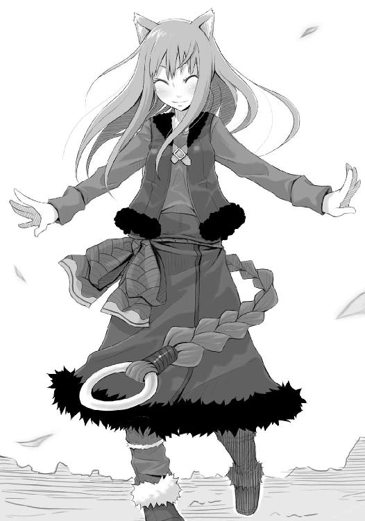
ただ、怒る気にはなれない。
明らかにサイズの大きいそれを身につけたホロが、それほど可愛かったからだ。
「真っ黒で上等な熊の外套じゃ。わっちの髪の毛が茶色だからよく映える。ただ、このズボンをわっちが窄くには尻尾が邪魔じゃの。穴あけてよいかや？」
さらりと言うが、ベテランの毛織物工に無理をいって作ってもらったズボンなのだ。穴を開けたらおそらくもう二度と直らない。ロレンスは首を横に振った。力強く、有無を言わせぬように。
「ふうむ。まあ、幸いサイズが大きい。なんとかいけるじゃろ」
今着ている服を全部脱げ、と言われることなどあり得ないといった様子のホロだったが、このままこの服を着て逃げるわけじゃないだろうなと、まさかとは思いながらロレンスは体を起こしてホロを注視していた。町に行って叩き売れば、結構な金額になるのだ。
「ぬしは根っからの商人のようじゃ。自分の顔に出る表情がどんな効果を持つかようわかっとる」
笑いながらホロは言って、ひょいと荷台から飛び降りた。
その動作があまりにも自然で不覚ながら反応できなかった。あのまま走り去られていたら追いつけなかったかもしれない。
ただ、ロレンスの体が動かなかったのは、ホロが逃げるわけがない、という確信がどこかにあったからかもしれなかった。
「逃げやせんよ。逃げるならとっくに逃げとる」
ロレンスは荷台の上の麦にいったん目をやってから、笑いながらそんなことを言うホロに視線を向ける。すると、どうやらロレンスの背丈に合わせて作られている熊の毛皮の外套を着るには背丈が足りなかったようで、ホロは外套をはずして荷台に放り投げてきた。昨日は月明かりの下で見ただけだったからいまいちわからなかったが、思っていたよりも小柄だ。ロレンスはどちらかといえば長身だが、ホロは頭二つ分くらい優に小さかった。
そして、そんなホロは服の具合を確かめるついでのように、口を開いたのだった。
「わっちはぬしと旅がしたい。ダメかや？」
媚びる訳でもない笑顔。媚びてくれればまだ断りようもあるというのに、ホロは楽しそうにそう言うのだ。
ロレンスは小さくため息をつく。
少なくとも、こそ泥のような真似だけはしなさそうだ。油断してはならないが、共に旅をするくらいならいいだろう。それに、ホロとこのまま別れ一人で旅をすれば、今まで以上に独りが身にしみそうだった。
「これも何かの縁だ。いいだろう」
ロレンスがそう言うと、ホロはやっぱり喜ぶわけでもなく、ただ単に、笑ったのだった。
「ただし、食い扶持は自分で稼げよ。俺も楽な商売をしているわけじゃない。豊作の神だろうと俺の財布までは豊作にできないだろうからな」
「わっちもタダ飯をもらって安穏としていられるほど恥知らずじゃありんせん。わっちは賢狼ホロじゃ。誇り高き狼じゃ」
少しむくれてそんなことを言うと、とたんに幼く見える。しかし、それがわざとやっていることだとわからないほどロレンスの目も節穴じゃない。
案の定、それからすぐにホロは吹き出して、ケタケタと笑ったのだった。
「じゃが、誇り高き狼が昨日みたいな醜態を晒してちゃ、笑い話にもなりんせんがな」
自嘲するように笑いながら言うあたり、取り乱していたのは本心のようだった。
「ま、よろしくの......えーと」
「ロレンス。クラフト・ロレンス。仕事上じゃロレンスで通ってる」
「うん、ロレンス。この先未来永劫、ぬしの名はわっちが美談にして語り継がせよう」
胸を張ってそう言ったホロの頭の上で、狼の耳が得意げに揺れる。案外本気で言っているのかもしれない。そんな様子を見ると幼稚なのか老獪なのかわかりづらい。ころころと変わる山の天気のようだ。
いや、そんなふうにわかりづらい時点で老獪なのだろう。ロレンスはすぐに思い直して、荷台の上から手を差し出した。相手をきちんと一人の存在として認めた証拠だ。
ホロはにこりと笑ってそれを摑む。
小さいが、温かい娘の手だった。
「とりあえずな、もうじき雨が降る。はやく行ったほうがよいぞ」
「な......そういうことは早く言え！」
ロレンスは怒鳴り、馬がそれに驚いていなないた。昨日の夕方の時点ではとても雨など降りそうになかったのに、確かに空を見上げればうっすらと雲が覆っている。慌てて出発準備に取り掛かるロレンスを見てホロはケタケタと笑う。それでも笑いながらてきぱきと荷台に乗り込んで、寝崩した毛皮を手早く纏めて覆いをかけるあたり、仕事についたばかりの小僧よりかは断然使えそうだった。
「川は機嫌が悪い。少し離れて歩くのがよかろ」
馬を起こし、桶を片付け、手綱を握って御者台につくと、ホロも荷台からひらりと飛び乗ってきた。
一人では少し広すぎるそこも、二人では少し狭い。
ただ、寒さはしのげるのでちょうどよい。
奇妙な二人旅が、馬のいななきと共に始まったのだった。
土砂降り、という言葉が見事に当てはまるほどの雨だった。昼過ぎ頃に後ろから迫ってきた雨についに追いつかれたロレンス達は、雨で煙る視界の中、教会を見つけてこれ幸いと飛び込んだ。修道院と違い、ロレンス達のような行商人や旅人、それに巡礼者などを泊めたり道中の無事を神に祈ったりしてその寄付で運営をしているところだから、ロレンス達の突然の訪問にも歓迎こそしたものの嫌な顔一つしなかった。
ただ、いくらなんでも教会の中で狼の耳と尻尾を持った娘を大手振らして歩かせるわけにもいかない。とっさに妻と称し、顔にやけどを負っているためにフードを外したがらない、と噓をついて薄手の外套をかぶせておいた。
ホロが外套の下でニヤニヤ笑っていたのがわかったが、ホロも自分と教会との関係がわかっているようで演技もそれなりだった。何度か教会からひどい目にあったというのも噓ではないのだろう。
それに、例えホロが悪魔憑きではなく狼の化身であったとしても、それは教会にとって問題にならない。教会にとっては教会の崇める神以外すべてが異教の神であり、悪魔の手先なのだから。
そんな教会の門をくぐり難なく部屋を一つ借りて、ロレンスが雨に濡れた荷物の手入れをしてから部屋に戻ると、件のホロは上半身裸になって髪の毛を絞っていた。綺麗な茶色の髪の毛から、ぼたぼたと品無く水が落ちる。穴だらけの板張りの床なので今さら多少水を落としたところで文句を言われることもないだろうが、ロレンスはどこに目をやるべきかとそっちに困る。
「ふふ、わっちのやけどを冷たい雨で冷やしんす」
そんなロレンスをよそに、あの噓が愉快なのか不愉快なのかホロが少し笑う。それから顔に張り付いた髪の毛をどけると前髪を豪快にかき上げた。
そんな勇ましさは確かに狼のそれといってもいいような気がするし、水に濡れてばさばさになった髪の毛は狼の力強い毛に見えなくもなかった。
「毛皮は大丈夫だったじゃろ。あれはよほど良いテンの毛皮じゃ。あのテンの育った山にはわっちのようなのがいるのかもしれん」
「高値で売れるか」
「そりゃあわかりんせん。わっちは毛皮商人じゃござんせん」
至極もっともな答えにロレンスはうなずいて、ずぶ濡れの自分の服も脱いで絞り始めた。
「ああ、そうだ。あの麦だが、どうすればいい」
そう言いながら上着を絞り終え、ズボンも絞ろうと思ったがホロがいることを思い出し、手を止めてホロのほうを見ればホロはまったくロレンスなどそこにいないかのように真っ裸になって服を絞っている。なんとなく悔しくて、ロレンスも大胆に裸になって服を絞る。
「ん、どうってどういうことかや？」
「脱穀すればいいのか、とか、あのままのほうがいい、とか。もっとも、あの麦にお前が宿っているという話が本当ならば、だが」
少しからかうようにそう言ってやったが、ホロは口の端で少し笑っただけで相手にしなかった。
「わっちが生きている限り、あの麦が腐ったり枯れたりすることはありんせん。ただ、食べられたり燃やされたりすりつぶして土に混ぜられたりすると、わっちはいなくなってしまうかもしらん。邪魔なら脱穀して保管しておいても大丈夫じゃし、そっちのほうがよいかもしらん」
「なるほど。じゃああとで麦粒にして袋にでも入れておくか。自分で持っていたいだろう？」
「助かるの。首から提げられるとなおよい」
ホロがそう言うのでつい首の辺りに視線をやってしまい、ロレンスは慌てて視線をそらしたのだった。
「ただ、あの麦は別の土地に売り込みに行きたいんだがな。それくらいの麦は残しておいていいか」
気を落ち着けつつそう質問した直後、ばさばさと音がしたので何かと思えばホロの尻尾が勢いよく振られていた。ふさふさの尻尾は毛の質も良いようで、実によく水をはじく。ロレンスは飛び散る水に顔をしかめたが、ホロは少しも悪びれなかった。
「作物はその土地にあるからこそよく実る、というものが多い。まあ、すぐに枯れるのが落ちじゃ。行くだけ無駄というものよ」
絞り終えた服を前に少し思案顔のホロだったが、代えの服などないので諦めたようにしわしわのそれを再び着る。ロレンスが今着ているような安物ではないので水の切れもいい。ロレンスは少し理不尽な何かを感じつつも、同じく絞り終えた自分の服を着終わってからうなずいた。
「まあ、大広間のほうに行って服を乾かそう。この雨だ。俺らのような連中を見込んで暖炉に火が入っているはずだ」
「うん。それはよい案じゃ、と」
ホロはそう言って薄手の外套ですっぽりと頭を包む。包んでから、またケタケタと笑った。
「何かおかしいか？」
「ふふ、やけどしたから顔を隠す、なんてのはわっちにはねえ発想だからよ」
「ほう。なら、お前はどう思うんだ？」
ホロは外套を少しめくって顔を覗かせると、誇らしげに言ったのだった。
「そんなやけどはわっちの証。この尻尾と耳と同じ。二つとないわっちの証と思うまでよ」
なるほどな、とちょっとそんな口上に感心する。ただ、それはホロが実際にそんな傷を負っていないからこそ言えるのではないか、なんて意地悪なことも思ってみたりした。
ホロの言葉が、そんな胸中に入り込む。
「ぬしが何を考えとるかわかるよ」
外套の下でホロがいたずらっぽく笑う。にやり、と釣り上がった唇の右側辺りに、鋭い牙が顔を出した。
「ためしに傷つけてみるかや？」
その挑戦的なホロの表情にロレンスは意地を張りたくなくもなかったが、ここでロレンスが挑発に乗って短剣を出せば本当に引き下がれなくなるかもしれない。
ホロはなんとなく本気でこういうことを言いそうだ。ただし、それをわざと挑発的に言うのは茶目っ気だろう。
「俺も男だ。そんな綺麗な顔に傷はつけられないな」
だから、そんなふうに答えたらホロは待ちかねていた贈り物をもらったかのように笑い、いたずらっぽく身を寄せてきた。そのとたん、ふわり、とどことなく甘い匂いがロレンスの体を刺激する。思わず手が動いて抱きしめそうだった。
ただ、ホロはそんなロレンスのことなどお構いなしに、露骨にくんくん鼻をならすと少し離れて言ったのだった。
「ぬしは雨に濡れてもまだ臭いの。狼のわっちが言うんじゃ。間違いない」
「ぬ、こっの」
半ば本気で拳を放ったが、ひょいとかわされてたたらを踏む。ホロはニヤニヤ笑いながら、小首をかしげて後を続けた。
「狼でも毛づくろいはする。ぬしはええ男じゃと思うよ。少しは身奇麗にしやさんせ」
それがからかいか本気かはわからなかったが、ホロみたいな娘に言われると少しその気になってしまう。これまで身奇麗とは商談においてそれが有利に働くかどうかといった、そんなことばかりを基準に判断していたので、それが女に気に入られるものかどうかなど考えたこともない。
相手が女商人ならばさもありなんだが、生憎と女商人など見たことがない。
ただ、どう答えたものかわからない。だからロレンスはそっぽを向いて、黙り込んだ。
「ま、その髭はわっちも良いと思う」
下あごを適度に覆っている髭はなかなか評判が良い。この点は素直に受け取り、ロレンスは少し誇らしげにホロのほうを振り向く。
「ただ、わっちはもう少し長いほうが好きじゃな」
長い髭はあまり商人受けが良くない。ロレンスは反射的にそう思ったのだが、ホロは両手の人差し指で鼻の辺りから頰にかけてピッピッと線を引いたのだった。
「こう、狼のようにの」
それでようやくからかわれていたと気がついたロレンスは、大人気ないと思いつつもホロを無視して扉のほうへと歩いていった。
ホロはケタケタ笑いながらついてくる。
ただ、もちろんこんなやり取りが嫌ではなかった。
「暖炉の前には他に人がいるからな。ボロは出すなよ」
「わっちは賢狼ホロじゃよ。それにパスロエの村にたどり着くまでは人の形で旅をしてたんじゃ。まあまかしとき」
振り向けば、ホロは外套の下に顔を隠して、もうその気になっているようだった。
町と町の広大な距離の間に点在しているこういった教会や木賃宿は、商人にとって重要な情報収集の場だ。特に教会には色々な人が訪れる。木賃宿には筋金入りの商人か金のない旅人くらいしか泊まらないが、教会には町のビール職人から裕福な者まで様々な宿泊客がいる。
ロレンスとホロの二人が飛び込んだ教会も、先客と後から来た客を含めて十二人がいて、見たところ数人が商人、他はそれぞれ別の職業のようだった。
「ほほう、ではヨーレンツのほうから？」
「ええ、向こうで塩を仕入れてそれを納品し、代わりにテンの毛皮をもらってきたところです」
各々が床に直接座って服についたノミをつぶしたり飯を食べたりしている中で、その夫婦は椅子に座って暖炉の前を独占していた。大広間といってもそんなに広くもないので、十二人いて暖炉に惜しげもなく薪がくべられていればどこにいても服は乾く。しかし、見たところ夫婦の服は濡れたあとなど少しもなかったので、大方たくさん寄付をしたからここにいるのが当然と思っている類の金持ちだろう。
ロレンスはそう当たりをつけてその夫婦の途切れがちな会話を耳ざとく聞き分け、ひょんな拍子に会話にもぐりこんだのだ。
旅の疲れからか黙りがちな妻に代わって会話に飛び込んできたロレンスを、その初老の男は快く歓迎してくれた。
「しかし、ここからまたヨーレンツに帰るのは骨じゃありませんか」
「そこは商人の知恵です」
「ほほう、興味深い」
「私がヨーレンツで塩を買った際、そこでお金は払いません。私は別の町にあるその塩を買った先の商会の支店にほぼ同額の麦を売っていたからです。私はその支店から麦の代金を受け取らない代わりに、塩の代金を払いません。お金のやり取りをせず、二つの契約が完遂されるのです」
百年以上前に南の商業国で発明された為替のシステムだ。ロレンスも師匠になる親戚の行商人からこれを聞いた時ひどく感動した。ただ、それは二週間ほど散々悩んでようやく理解してからのことだ。目の前の初老の男性も、一回聞いただけでは理解できないようだった。
「ほ......それは、なんとも、不思議なできごとですね」
そう言って、何度もうなずいた。
「私はペレンツォという町に住んでいますが、私のぶどう園のぶどうの支払いにそんな不思議な手段を用いたことがありません。私のところは大丈夫でしょうか」
「この制度、為替と呼ぶのですが、これは色々な地方の人を相手に商売する商人達が発明したものです。ぶどう園をお持ちの領主様なら、ぶどう酒業者が良いぶどうを悪いと言って安く買い叩かないかに注意すればよいでしょう」
「んむ。毎年毎年それで口論になるのです」
そう言って笑うが、実際はこの領主に雇われた会計員なりが顔を真っ赤にして海千山千のぶどう酒業者と渡り合っているのだろう。ぶどう園を持つ者には貴族が多いが、貴族が直接土をいじったり金の話をすることはほとんどない。パスロエの村やその近辺を治めるエーレンドット伯爵は、だからかなり変わり者の部類に入る。
「あなた、ロレンスさんといいましたか。今度ペレンツォ近辺に来た時はぜひ当家を訪ねてください。喜んで歓迎いたしましょう」
「ええ、ぜひ」
ペレンツォに住む誰である、と言わないのは、貴族としての癖だろう。自分は名乗らずとも相手が名前を知っていて当然である、という考えから、自ら名乗ることは下品であると考えるのだ。
それに、きっとペレンツォに行ってぶどう園の領主、といえばこの男性しかいないのだろう。もしかしたら、ペレンツォの町ならとてもロレンスなど軽々しく口を聞ける相手ではないのかもしれない。教会はこういった人間にコネを作るのにも最適な場所だ。
「それでは、妻がちょっと疲れているようなのでね。お先に失礼します」
「また神のお導きがありますように」
教会での決まり文句だ。男性は椅子から立ち上がった妻ともども小さく会釈をして、広間から出ていった。ロレンスは薦められるがままに隅から持ってきて座っていた椅子から立ち上がり、夫婦の座っていた椅子二つも持って部屋の隅に片付けた。
広間で椅子を使うのは貴族か金持ちか騎士だ。どれも人から嫌われる上位三人だ。
「へへ、だんな、なかなかの人物だね」
椅子を片付けて部屋の中ほどに座っていたホロの横に戻ると、すっと近寄ってきた男がいた。身なりと風体から、同業者だろう。ただ、髭の下にある顔は若い。まだ独り立ちしてすぐくらいのものだと当たりをつける。
「どこにでもいる行商人さ」
ロレンスはそっけなく答えたが、ロレンスを挟んで男と反対側にいるホロが少しだけ居住まいを正した。その時頭からかぶっている外套が少しだけ動いたが、耳を動かしたのだと気がついたのはロレンスだけだろう。
「いやいや、あっしもさっきから狙ってたんですがね、なかなか会話に入り込めなかった。だんなはそれをすっとやっちまった。この先だんなみたいなのを相手に商売やっていくのかと思うと気が滅入る」
にか、と笑って男が言うと、欠けた前歯が愛嬌だ。もしかしたらわざと歯を欠いて、間抜けな笑顔から駆け出しであることを強調しているのかもしれない。商人なら、自分の顔がどんな印象を相手にもたらすか絶対に把握しているはずだからだ。
油断ならないな。
ただ、ロレンスは男の言葉そっくりのことを駆け出しの頃に思っていたので、そこだけは同意したのだった。
「なに、俺も駆け出しの頃は行商人全部が化け物に見えた。今でも半分以上が化け物だ。それでもなんとか食っていける。頑張ることだ」
「へへ、そう言ってもらえると安心だ。あ。あっしの名前はゼーレンと申します。お察しのとおり駆け出しの行商人です。よろしくどうぞ」
「ロレンスだ」
昔、ロレンスも駆け出しの頃に顔見知りの行商人を作りたくてやたら滅多ら話しかけたものだが、皆の対応が冷たいことに腹を立てたりした。けれど、今こうやって駆け出しの者から話しかけられる立場になると冷たいあしらいをされたのもよくわかる。
駆け出しの行商人は、自分が得るばかりで相手に渡すものが何もないからだ。
「えーと......あ、そちらは、連れの方ですかね？」
やはり渡すものが何もないのか、それとも駆け出しにありがちな、いかに何も出さずに自分だけが得ることができるか、という勘違いをしているのか、そんな話題の切り出し方をした。これがベテランの行商人同士なら、すでに二つか三つの地方の商売情報を交換していることだろう。
「妻の、ホロだ」
一瞬、偽名を使うか迷ったが、そんな必要もないかと思いなおしそう言った。
ホロは名前を呼ばれてから小さくうなずくように挨拶をした。
「へえ、夫婦で行商ですか」
「風変わりな妻でね。町の家にいるより馬車の上のほうがいいと言う」
「しかし、だんなも外套なんかすっぽりかぶせてよほど大事にしてらっしゃる」
なかなか達者な口に少し感心したが、もとは町のごろつきかもしれない。少なくともロレンスは親戚の行商人から、こういう類の口上はするなと教えられたものだ。
「へへ、しかし隠されると見たくなるのが男の性。ここで会ったのも神のお導き。どうか一目拝ませてもらえませんかね」
図々しいな、とホロは本当の妻ではないのにロレンスはそう思った。
しかし、それを注意する前に当のホロが口を開く。
「旅はする前が一番楽しく、犬は鳴き声だけが一番怖く、女は後ろ姿が一番美しいものでありんす。気軽にひょいとめくれば人の夢を壊しんす。わっちにゃそんなことできんせん」
そう言ってホロが外套の下で小さく笑うと、ゼーレンはそんなホロの言葉に吞まれたようにぎこちなく笑った。流暢なそれはロレンスも感心するくらいのものだったからだ。
「へへ......いや、すごい奥さんですね」
「尻にしかれないようにするのが精一杯だ」
半分以上、ロレンスの本音だった。
「うん、こりゃあ、お二人に出会えたのは神のお導きに違いない。ちょっと、あっしの話を聞いてくれやしませんかね」
沈黙が降りかけた瞬間、ゼーレンはそう言って前歯の欠けた顔をロレンスへと近づけたのだった。
普通の宿とは違い、教会では部屋を借りることはできても食事までは面倒を見てくれない。ただし寄付をすれば竈を使わせてもらえるので、ロレンスは寄付をしてジャガイモを五つほど水を張った鍋の中に放り込む。もちろん火を起こすときの薪代は別料金だ。
茹で上がるまでに時間がかかりそうだったので、その間にホロが宿るという麦を麦穂から大雑把に落として適当に使っていない皮袋に詰め込んだ。首から提げたいと言っていたことも思い出し、皮紐を一本手に取り竈へと引き返す。ジャガイモ、薪、皮袋、皮紐と、合わせれば無視できない金額なので、ロレンスはホロにいくら請求しようかと胸中で計算しつつ、茹で上がったジャガイモを持って部屋へと戻ったのだった。
両手がふさがっているのでノックなどできなかったが、狼の耳を有するホロは足音だけで誰が来たのかわかるらしく、ロレンスが部屋に入っても振り返りもせずにベッドの上でのんびりと尻尾の毛づくろいをしていたのだった。
「ん？ 良い匂いじゃの」
そして、耳と同様に鼻もよく利くのかそう言って顔を上げた。
ジャガイモの上にはヤギのミルクから作ったチーズを少し載せてある。一人ならばしない贅沢だが、二人なので奮発してみたのだ。ホロの反応も上々で、した甲斐もあったというものだ。
ロレンスがベッド脇のテーブルの上にジャガイモを置くと、ホロはベッドの上から早速手を伸ばそうとしたが、その手がジャガイモを摑む前にロレンスは麦袋の詰まった皮袋を放り投げた。
「おっと。ん、麦かや」
「ほら、皮紐も。自分で工夫して首から提げられるようにしておけ」
「うむ。助かる。しかしこっちが優先じゃな」
と、ロレンスが驚くくらい無造作に皮袋と皮紐を脇に置くと、ホロは舌なめずりをせんばかりの表情でジャガイモへと手を伸ばす。食い気優先の性格のようだった。
ホロは大きなジャガイモを一つ手にとって、早速二つに割る。するとたちまち立ち昇る湯気に幸せそうな笑顔を浮かべている。尻尾がわさわさと揺れているのが犬と似ていて面白かったものの、きっとそんなことを言えば怒ると思ったのでロレンスは黙っておくことにしたのだった。
「狼もジャガイモがうまそうと思うのか」
「うん。別にわっちらも年がら年中肉を食べてるわけじゃありんせん。木の芽も食べるし魚も食べる。人の育てた野菜は木の芽よりうまい。それに、肉や野菜に火を通すという発想も、わっちは好きだわいな」
猫舌という言葉はあるが狼は結構丈夫なようだ。まだ湯気がもうもうと立っているそれを、二、三度吹いただけでひょいひょい口に放り込んでいる。ただ、その量はいくらなんでも無理だろう、と思っていると、案の定喉に詰まったようだ。水の詰まった皮袋を放り投げてやって、ホロはことなきを得る。
「ふう。びっくりじゃ。人の喉は相変わらず狭いの。不便じゃ」
「狼は丸飲みだからな」
「ん、そりゃあ、ほれ。これがないんじゃ、悠長に嚙み砕けん」
ホロは指で唇の端を引っ張った。頰のことだろう。
「しかし、わっちは昔もジャガイモを飲み込んで喉を詰まらせた」
「ほう」
「わっちとジャガイモは相性が悪いのかも知らん」
単にがっつくのが悪いだけだろう、とは言わなかった。
「そういえば」
と、代わりにそんなふうにロレンスは切り出した。
「お前、噓を聞き分けられるとか何とか言ってなかったか？」
ロレンスがそう尋ねると、ホロはチーズをかじりながらロレンスのほうを振り向いて返事をしかけたが、ふと次の瞬間に視線を別のところに走らせると一拍遅れて手が動いた。
「どうした」、とロレンスが言う間もないほどの一瞬のできごとで、ホロの手は中空で何かをつまむような形になって止まっていた。
「まだノミがおった」
「良い毛並みだからな。絶好の温床だ」
毛織物や毛足の長い毛皮などの輸送では、季節によっては時折煙でいぶさないとならないくらいにノミが湧くことがある。ロレンスはそれを連想しながらそう言ったのだが、ロレンスの言葉を聞いたホロは驚いたような顔をしてからたちまちのうちに胸をそらして得意げな顔になっていた。
「ぬしもこの尻尾の良さがわかるとはなかなかの目利きじゃな」
子供のように得意げに言うので、ロレンスは何から連想したのかは黙っておこうと決意した。
「で、噓かどうか聞き分けられるのは本当なのか？」
「うん？ ああ多少はの」
ノミをつぶした指を拭いて、ホロは再びジャガイモにかぶりつく。
「どれくらい聞き分けられるんだ？」
「まあ、ぬしが褒めるつもりも無くわっちの尻尾のことを言ったことがわかるくらいには、わかる」
ロレンスがどきりとして口をつぐむと、ホロは楽しそうに笑ったのだった。
「百発百中ではありんせんがな。信じる信じないは......まあ、ぬしの勝手じゃがの」
指についたチーズを舐め、少し意地悪な笑みを浮かべながらそう言うホロの様子はまるで幻想譚に出てくる妖精か小悪魔のようだ。
ロレンスは色々な意味で少したじろいだが、あまり反応するとまたそこについて何か言われかねない。気を取り直して後を続ける。
「それじゃあちょっと聞くが、あの小僧の話、どう思う」
「小僧？」
「暖炉のある部屋で話しかけてきたあいつだ」
「ああ。ふふ、小僧か」
「何がおかしい？」
「わっちからみりゃどっちも小僧じゃ」
下手に何か言うとまた手玉に取られかねなかったので、ロレンスは喉から出てきそうになった言葉をぐっと吞み込んだ。
「くふ。ぬしのほうが少しだけ大人じゃな。で、小僧の話じゃが、噓をついとるとわっちは思うな」
ホロの言葉に、ロレンスは途端に冷静な頭になって「やはり」と胸中で呟く。
あの暖炉の部屋でロレンスに話しかけてきたゼーレンと名乗る駆け出しの行商人の若者は、ロレンスにちょっとした儲け話を持ってきたのだ。
それは現在発行されているある銀貨が、近々銀の含有率を増やして再発行されるという話だ。もしもこの話が本当ならば、古いほうの銀貨は質が悪いのに質の良い銀貨と同じ価値を持つことになる。しかし、別の貨幣との相場を比べた場合、強いのは銀の含有率が高い新しい銀貨だ。つまり、新しい銀貨が銀を増やして再発行されるとわかっていれば、古い銀貨を大量に集めておいて新しい銀貨と交換することで差額の分だけ大儲けできる、というものだ。ゼーレンは世に流通するたくさんの貨幣のうち、どの貨幣でこのからくりが使えるのかという情報を渡す代わりに、大儲けの際は分け前をくれ、と言うのだ。おそらくは目をつけた商人何人かにそう言っているのだろうが、ロレンスは当然それを鵜吞みにはできない。
ホロは、あの時盗み聞いていたはずの話を思い出すように遠くを見て、手に持ったままだったジャガイモのかけらをひょいと口に放り込んで飲み下した。
「どこが噓かとか、詳しい内容についてはわかりんせんがな」
ロレンスはうなずき、考える。さすがにそこまでは期待しない。
が、取引そのものが噓でない限り、結果としてゼーレンの噓は銀貨についてのものとなる。
「貨幣への投機自体は珍しいことじゃない。だがなあ......」
「噓をつく理由がわからない、じゃろ」
ジャガイモの芽をくりぬいて、残ったところを口に放り込み、ロレンスはため息をつく。
ホロはもうすでにロレンスのことを尻にしいているかもしれない。
「噓をつく時、大事なのはその噓の内容ではなく、なぜ噓をつくかというその状況じゃ」
「俺がそれに気がつくまでに何年かかったと思う」
「ふふん、ぬしはあのゼーレンという男を若造と思っとるようじゃが、わっちから見りゃどっちもどっこいじゃと言ったろう」
得意げに笑うホロだが、ロレンスはこの時ばかりはホロが人間であって欲しくないと願うばかりだ。自分が苦労して得てきたことを、見た目どおりの若さのホロが手に入れているとしたらロレンスの立つ瀬がどこにもないからだ。
そんなことを思っているとホロが意外な言葉を放ってきた。
「もし、わっちがいなかったら、ぬしはどう判断するよ」
「うむ......噓か真かその判断は保留にし、とりあえずゼーレンの話を吞んだように振る舞うな」
「それはなぜかや」
「真であればそのまま儲けに乗ればよく、噓であれば誰かが何かを企んでいるということだから、そういう時は、注意深く裏を突けば大抵が儲け話になるはずだからだ」
「うん。じゃあ、わっちがぬしのそばにいて、あの話は噓じゃと教えたら？」
「ん？」
そこで何か化かされているような気がして、ようやく気がついた。
「......あ」
「うふ。ぬしは始めから何も迷うことなどありんせん。どの道乗った振りをするんじゃろ」
ニヤニヤ笑うホロに、ロレンスはぐうの音も出なかった。
「この余りのジャガイモは、わっちの物じゃな」
ホロはベッドから手を伸ばしてテーブルの上のジャガイモを取ると、にこにこしながら二つに割る。
ロレンスは、苦々しくて手元の二つ目を割る気になれなかった。
「わっちは賢狼ホロじゃ。ぬしの何十倍生きとると思っとる」
そんなふうに気遣われるのがまた癪で、ロレンスはジャガイモを摑むと思い切りかぶりついた。
なんだか、親戚の行商人の元に弟子入りしたての頃を思い出したのだった。
翌日、外は綺麗な秋晴れだった。教会の朝は商人のそれより早く、ロレンスが目を覚ました頃にはすでに朝の日課が終わっていた。それはまあ知っていることなのでなんともないのだが、外の井戸で顔を洗っていると、部屋に姿が見えず外の厠にでも行ったのかと思っていたホロが教会の者達と一緒に聖堂から出てきたのには驚いた。きちんと外套を頭からかぶってうつむき加減に歩いてはいたが、時折信徒達と親しげに言葉を交わしている。
豊作の神など認めない教会の者と、その当の豊作の神が親しげに喋っている光景はなんとも苦笑ものだったが、生憎とそれを楽しめるほどロレンスの肝も太くない。
信徒達と別れ、井戸のそばで呆然としているロレンスのもとに静々と歩み寄ってきたホロは、小さな両手を胸の前で組んで小さく言ったのだった。
「わっちのだんな様の肝が太くなりますように」
ロレンスは冬も近くなった秋の朝の冷たい井戸水を思い切り頭からかぶり、ケタケタ笑うホロの笑い声が聞こえない振りをしたのだった。
「しかし、こやつらも偉くなったもんじゃな」
ホロが昨日尻尾を振って水を切っていたように、ロレンスも頭をぶるんぶるん振って水を切ったが、ホロはどこ吹く風だ。のんきにそんなことを言っている。
「教会は昔から偉いだろう」
「いやいや。わっちが北からこっちに来た頃はまだそんなでもなかったわいな。少なくとも唯一神が十二人の天使とともに世界を作り、人はその作られた世界を借りている、なんて大げさなことよう言わなんだ。自然は誰かが作れるようなもんじゃありんせん。わっちはいつから教会は喜劇を扱うようになったんじゃと思ったくらいじゃ」
時折耳にする自然学者の教会批判と似たようなものだが、それを言っているのが何百年も豊作を司っていた賢狼を自称する者なのだから面白い。ロレンスは体を拭いて、服を着る。横に置いてある寄付箱に寄付をするのも忘れない。教会の連中は、誰かが井戸を使ったらその度に寄付箱をチェックするのだ。お金が入っていなかったりすると、不吉なお告げをして不安がらせたりする。旅から旅のロレンスとしては不吉なお告げをされたりしたらたまらない。
もっとも、寄付箱に入れた貨幣は黒ずんで磨り減った、財布の中では一番安い銅貨とも呼べないような粗悪な銅貨ではあったのだが。
「これも時代の移り変わりかの。この分だとだいぶ変わっていそうじゃ」
とは、故郷のことかもしれない。外套の下からしゅんとした様子が伝わってきたからだ。
ロレンスはホロの頭をぽんぽんと軽く叩く。
「おまえ自身は変わったのか？」
「......」
ホロは無言で首を振る。こんな仕草はとても子供っぽい。
「なら故郷も変わっていないだろ」
今はまだ若造の部類とはいっても多少年を経てきた自分だ。各地を飛び回ってたくさんの人間に出会って様々な経験をして積み重ねてきたからこそ言える言葉を、ホロに言ってやった。
例え家出同然に故郷を飛び出してきた行商人であっても、行商人なら全ての者が故郷を大事にする。異国の町で頼れるのは同郷の者達だけだからだ。
そんな行商人達が、もう何年も故郷に帰っていない者達に言う言葉がそれだ。
ホロはうなずいて、外套の下から少しだけ顔を出した。
「わっちがぬしから慰められてちゃ賢狼の名折れじゃ」
笑いながらそう言ったものの、きびすを返して部屋のほうに戻ろうとしたホロの流し目は、ロレンスに礼を言っているように見えた。
徹頭徹尾頭が切れて、年経た賢人らしく振る舞ってくれるならロレンスもそれなりに対応のしようがある。
ただ、時折見せる子供っぽい仕草の対応に窮するのだ。
ロレンスは今年で二十五だ。町の人間なら妻を貰って子供と共に教会の説教に行く年頃で、人生も半ばを過ぎている。ホロのそんな振る舞いは、ロレンスの独り身の隙間に容赦なく入り込んでくる。
「ほれ、はよ来い。何しとる」
少し離れたところでホロが振り向き様にそう言った。
まだ出会ってから二日しか経っていないというのに、とてもそんな気がしなかったのだった。
ロレンスは結局ゼーレンの誘いに乗る旨を伝えた。
ただ、ゼーレンもロレンスと口約束だけで情報のすべてを教えるわけにはいかないだろうし、ロレンスもゼーレンに前金を払うことなどできはしない。どの道ロレンスが毛皮を金に換えなければならなかったこともあり、結局川沿いの港町パッツィオで公証人の下、正式な契約書を交わすことにしたのだった。
「それじゃああっしは先に行ってますんで、パッツィオについて一息ついたらヨーレンド、っていう酒場に来てください。あっしと連絡取れるようになってます」
「わかった。ヨーレンドだな」
ゼーレンは愛嬌のある笑顔で頭を下げて、干した木の実の詰まった麻袋を担いで先を歩いていった。
駆け出しの行商人がまずすることは、商売も勿論だがそれよりも色々な土地に行ってその土地のことを知り、同時に自分の顔を覚えてもらうことだ。その時に持ち運ぶものは長持ちして、教会や宿で売りながら話の種にできる木の実や干し肉が良い。
ロレンスも、この荷馬車を手に入れるまでのことを思い出して少しゼーレンの後ろ姿が懐かしかった。
「一緒に行かんのかや？」
ホロが唐突にそう言ったのは、ゼーレンの姿が視界から消えるほど遠くなってからだ。それまで何をしていたかといえば、周りに人目がないのをいいことに堂々と尻尾の毛づくろいだ。
しかし、耳を隠すために外套をかぶっているせいか、流れるような栗色の髪の毛についてはほとんど無頓着で、ばらけないようにと細い麻縄でくくっているくらいだ。せめて櫛くらい通せばよいのにとロレンスは思うものの、生憎と櫛など持ってはいない。パッツィオの港町に着いたら櫛と帽子を買ってやろうかと思ったのだった。
「昨日雨が降っただろ。道がぬかるんでるから荷馬車より徒歩のほうが断然早い。わざわざ遅い馬車に付き合わせることもないだろう」
「確かに、商人は時間にうるさいわな」
「時は金なりだ」
「うふふ。面白い言葉じゃ。時は金なりか」
「時間があればそれだけ金を稼げるだろう？」
「うん。確かにの。ただ、わっちにはその発想はないな」
言ってから、ホロは再び尻尾に目を落とす。
そのまま垂らすと膝の後ろを越えるくらいの立派な尻尾だ。ふさふさしていて、毛を刈り取って売ればそこそこの金になりそうだ。
「お前が何百年と見続けてきた農夫達も、時間には正確だと思うが」
と、そう言い終えてからロレンスはこの話題の振り方はまずかったかと思ったのだが、ホロは視線だけをロレンスに向けてきて、「貸しがひとつじゃな」と言わんばかりに意地悪そうに笑っていたのだった。
「ふん。ぬしは何を見とるかよ。やつらは時間に正確ではない。空気に正確なんじゃ」
「......わからないな」
「よいか？ やつらは夜明けの空気で目を覚まし、朝の空気で畑を耕し、午後の空気で草をむしる。雨の空気で縄をない、風の空気で作物の心配をする。春の空気で芽吹きを喜び、夏の空気で成長を楽しみ、秋の空気で収穫を笑い、冬の空気で春を待ちわびる。やつらは時間なんぞ気にはせん。ただ、空気だけを気にかける。わっちもそうじゃ」
ホロの言葉がすべて理解できるというわけでもなかったが、言われてみれば納得できるところもある。ロレンスが感心するようにうなずくと、ホロはそれを受けて得意げに胸をそらして鼻を鳴らしたのだった。
この自称賢狼は、少なくとも隠者や賢人のように謙虚にしようという気は毛頭ないようだった。
そんな折に、道の向こうから徒歩の行商人らしき者が歩いてくるのが目に入った。
ホロは外套を頭に載せたままだが尻尾は隠そうともしない。
ただ、そのまますれ違った行商人はホロの尻尾をじっと見つめていただけで、特に何かを言うわけでもなかった。
まさか、それがホロの尻尾だとは思わないのだろうし、ロレンスもきっと同じ状況になれば何の毛皮かと値踏みする程度だ。
それでも、それを実際に平気な顔してできるかというと話は別だった。
「ぬしは頭の回転は良いが経験が足りんな」
毛づくろいが終わったのか、ぽいと尻尾を手放してもそもそと腰巻きの中にしまうと、ホロは外套の下からロレンスのほうを見上げてそう言った。外套の下にあるのは十の半ばに手が届くかどうかといった娘の顔だ。ひょんな拍子にはもっと幼い様子も垣間見える。
しかし、その口から出る言葉にはとても老獪な匂いが漂っていた。
「もっとも、逆を言えば歳を経れば良き者になろうということじゃがな」
「それは何百年後の話だ？」
ホロのからかい方がわかったのでそう切り返してやった。
ホロは驚いたような顔をして、それから大きな声で笑ったのだった。
「あははははは。ぬしの頭はよう巡るの」
「お前の頭が古すぎてがたがきているだけじゃないのか」
「うふふふふ。わっちら狼がどうして山の中で人を襲うか知っとるかや」
突然切り替えられる会話の方向についていけない。ロレンスは無防備に答えていた。
「いや、わからないが」
「それはな、人の頭を食べてその力を得ようとするからじゃよ」
にやり、と笑うホロの口にきらめく二本の牙。
それが冗談だとしても思わずぞっとして、息を吞んでしまった。
負けた、と思ったのはその数瞬後だった。
「ぬしなんぞまだひよっこじゃ。わっちの相手になどなりんせん」
小さいため息と共にそう言い放たれて、ロレンスはぐっと手綱を握りしめて顔に悔しさが出るのを抑えたのだった。
「しかし、ぬしは山で狼に襲われたことないんかや？」
狼の耳と尻尾と牙を持つホロにそんなことを問われるのはなんだか不思議な気分だ。理不尽な恐怖の対象でしかなかった山の狼が、隣にいて、会話をしているのだ。
「ある。えーと......八回くらいかな」
「てごわいじゃろ」
「ああ。野犬の群れは結構どうにかなるが、狼はてごわい」
「それはな、そやつらが少なからず人を食ってその力を」
「悪かった。やめてくれ」
三回目に狼に襲われたのは隊商を組んでいた時だ。
そして、そのメンバーのうち二人は山を降りることができなかった。あの時の悲鳴が今も耳にこびりついている。
無表情になったのは、意識したわけではない。
「あ......」
聡い賢狼は気がついたようだった。
「すまぬ......」
しゅん、と体が小さくなるほど肩を落として、ホロは小さくそう言った。
ロレンスはそれでなくとも狼に何度もひどい目にあっている。芋づる式にそれらのことも思い出してしまい、とてもホロに返事ができるような気分ではなかった。
べちょり、べちょり、と馬がぬかるんだ道を行く音だけがしばらく響いていた。
「......怒っとる？」
聡い賢狼だ。そんなふうに聞かれたら怒っていると本気で答えられないとわかって聞いているのだろう。
だから、答えてやった。
「怒っている」
ホロは、黙ったままロレンスのほうを見上げてきた。横目に視線を向けると、少し唇を尖らせているのが今にもすべてを許してしまいそうなくらい可愛かった。
「怒っているからな。二度とその冗談はやめろ」
結局、そっぽを向きながらそう言うしかなかった。
しかし、ホロは殊勝にうなずいて視線を前に向ける。こういうところは、とても素直なようだ。
それからしばらくまた沈黙が続いたが、やがてホロが口を開いた。
「狼は森だけで暮らし、犬は一度人の下で暮らしとる。それが狼と犬の手ごわさの違いじゃ」
ポツリと言ったその言葉を無視してもよかったが、そうするとその先会話を再開するきっかけを作るのがとても難しそうだ。ロレンスはホロのほうに少し顔を向けて、とりあえず聞く姿勢を作る。
「......ふん？」
「狼は人に狩られることしか知りんせん。人は恐怖の対象じゃ。だからよく考える。彼らが森に来た時、わっちらはどう動くべきか」
まっすぐに前を向いて、初めて見るような真剣な顔でそう言っている。
ロレンスはとてもそれが即席の言い繕いには思えず、ゆっくりとうなずく。
ただ、それが少し気の抜けた曖昧なものだったのは、気になったことがあったからだ。
「お前も、人を」
その先は、ホロがロレンスの服を摑んだので止まった。
「いくらわっちでもな、答えられんことがある」
「う......」
ロレンスは思いつきで口を開いた自分を胸中で罵りながら、「悪い」、と言った。
すると、とたんにホロはにかりと笑ったのだった。
「これで一対一じゃな」
賢狼は、二十五年程度の人生では追いつけない位置にいるようだった。
それからは特に会話もなく、それでも気まずいわけでもなく、荷馬車もぬかるみにはまることなく道程を進み、昼を過ぎてあっという間に日が暮れた。
雨の降った次の日に日暮れ以降進むことは行商人ならば絶対にしない。荷馬車の車輪がぬかるみにはまったらどれほど荷物が軽くても十回に七回はその荷馬車を諦めなくてはならないことを知っているからだ。
行商でより多く儲けるためには、より損を少なくすればいい。それほど、道には危険が満ちているのだ。
「ぬしとわっちじゃ、生きてきた世界が違うんじゃよな」
明日も晴れることを告げる星空の下で、テンの毛皮の山の下からホロが何とはなしにそんなことを言ったのだった。
平野を緩やかに蛇行しながら流れる、スラウド川という名の川があった。はるか昔、東の山から下りてきた途方もなく大きい大蛇が、西の海を目指して平野を進んだ際にできたと言われているスラウド川は、大蛇がのたくった跡にふさわしい緩やかな流れと広い川幅を持ち、この地方には欠かせない重要な交通路となっていた。
港町パッツィオはそんなスラウド川の中流に位置する大きな町だ。町からさして離れていない上流に麦の大産地を抱え、さらに上流には木々の生い茂る山々がある。川には年中切り出されてきた木が浮かび、その合間を縫って上り下りする船には季節ごとに麦やトウモロコシなどが乗せられる。それだけでも町が盛況になるのに十分な上に、スラウド川には橋がないせいで、自然と人は渡し舟の多いこの町を通ることになるのだ。
昼を過ぎてだいぶ経つが、まだ夕方までには時間があるという最も町がにぎわう時間帯に、ロレンスとホロの二人はパッツィオに到着した。
パッツィオは王から自治権を奪い取った商業の発展した町であり、そこを牛耳るのは貴族と商人だ。そのため町に入る時に荷台の毛皮にたっぷりと関税をかけられはしたが、人相をチェックされたり通行証を出せと言われたりすることはなかった。これが城下町になると、荷物よりも人のチェックのほうが厳しくなる。そうなると明らかに人ではないホロの扱いに困る。
「ここには王でもいるのかや？」
そして、町の中に入ったホロの第一声がそれだった。
「人の多い町に来るのは初めてか」
「時代は変わりんす。わっちの知る町はこんだけ大きければ王がいた」
こんな町などかすむほどに巨大な都市を見たことのあるロレンスとしてはちょっとした優越感だったが、そんなことを思っているとまたそれを指摘されかねない。それに、ロレンスも昔は何も知らなかったのだ。
「うふ。よい心がけじゃ、とだけ言っておこう」
ただ、そう思うのが少し遅かったようだった。
ホロは道の両脇に並ぶ露店に完全に視線を向けているというのにこの目ざとさなのだ。それとも、かまをかけているだけなのだろうか。こうまで胸中を言い当てられるとさすがに不気味だし、なによりも面白くない。
「ふうむ。祭り......なわけじゃなかろ？」
そんなふうにロレンスが思っていることにはまったく気がつかないのか、それともわざと無視しているのか、ホロは相変わらずきょろきょろしながらそう言った。
「教会の祝祭日なんかは歩くことすらできないくらいに人が集まる。今日はまだ空いているほうだ」
「ほほう。想像もつかぬ」
楽しそうにホロは笑い、身を乗り出しては道の両脇に並ぶ露店を物色している。
初めて町に来た田舎者の典型だったが、ロレンスはそれを見ていてふと別のことに気がついた。
「おい」
「んー？」
と、ロレンスの呼びかけにもホロは返事だけだ。視線は相変わらず露店だった。
「お前、顔隠さなくて大丈夫か」
「ん、顔？」
それでようやく振り向いた。
「パスロエの村は今頃飲めや歌えの大騒ぎだろうが、村の人間すべてが祭りに参加しているわけじゃない。なんだかんだで町に来ている連中も多いだろうから、お前のことに気がつくやつがいるかもしれないだろ」
「ふん、そんなことかや」
急に不機嫌な顔になってホロは御者台に座りなおし、ロレンスのほうを改めて振り向くと頭からかぶっている外套を耳が見えるぎりぎりまで持ち上げた。
「例えこの耳晒してもやつらは気づくまいよ。わっちのことなど忘れとるんじゃからな」
大声を上げなかったのが奇跡なくらいの剣幕だ。ロレンスは思わず興奮した馬をなだめるように掌をホロに向ける。馬ではあるまいが、いくらか掌の効果はあったようだ。
ホロは鼻を鳴らして外套から手を離すと、前を向いて下唇を突き出したのだった。
「何百年も村にいたのならお前についての言い伝えくらい残っているだろう？ それとも人の姿は晒さなかったのか？」
「残っとるよ。時折人の姿を見せとった時期もあった」
「見た目に関するものも？」
ロレンスの質問に、面倒くさそうな視線を横目で向けたものの、ホロは嘆息の後に口を開く。
「わっちが覚えている限りじゃと、こうじゃ......。美しい娘の姿で、年の頃は常に十の半ば。流れるような髪の毛と、狼の耳、それに先の白い尻尾を有し、毛色は綺麗なこげ茶色。ホロは時折その姿で村に現れ、そのことを秘密にする代わりに村の来年の麦の豊作を約束する......」
ホロは、これでよいか？、とばかりにけだるげな視線を向けたのだった。
「その話を聞くとお前の特徴が全部伝わっているようだが、大丈夫なのか」
「耳と尻尾を見せたところでぬしのように疑るのが落ちじゃろうよ。気がつくわけがない」
外套を触ったせいで狼の耳が変なふうにでもなったのか、ホロは外套の下に手を入れてもそもそといじくっている。
そんな様子を横目に、ロレンスは尚もわずかに気にかかっていたのだが、あまりしつこく言うと本気で怒り出しそうな雰囲気があったので口をつぐむ。
村の話題そのものが禁句な感じなのだ。それに、言い伝えが残っていても顔の様子まで伝わっているようではないし、耳と尻尾を見せなければまずホロだとわかりはしないだろうと思い直した。言い伝えは言い伝えで、教会などの手配書ではないのだ。
しかし、ロレンスがそう思い直して口を閉じてからしばらく後、何かを考えているふうだったホロが、外套の下からぽつりと言葉を漏らしたのだった。
「なあ、ぬしよ」
「ん？」
「やつらは......わっちのことを見ても気がつかぬ、よな？」
さっきまでとは違うホロの雰囲気は、まるで本当は気がついて欲しいと言わんばかりだ。
しかし、ロレンスも馬鹿ではない。努めて無表情に、視線を馬の尻に向けて答えた。
「俺としてはそう願うばかりだがな」
ホロは自嘲するように小さく笑ってから、「ま、心配ないじゃろ」と言った。
それがロレンスにだけでなく、ホロ自身にも向けられる言葉だったと気がついたのは、ホロが再び馬車の上で露店を見ては楽しそうな声を上げるようになってからだ。
ただ、さすがにそれを確認はしない。ホロもなかなかに頑固そうだからだ。
今は機嫌を直してうまそうな果物や食べ物を見るたびにはしゃぐホロに、ロレンスは少しだけ苦笑いをしたのだった。
「たくさん果物があるのう。これ全部この辺で採れるのかや」
「南との中継点になっているからな。季節が良ければ、そうそう行くことのできない南の地方のものもある」
「南は果物が多くてよいのう」
「北の地方でも果物くらいあるだろう」
「硬くて渋いものばかりじゃ。干したり寝かせたりせんと甘くならん。それもわっちらには無理な作業じゃからな。村で拝借するしかない」
狼が拝借するものといえば鳥や馬や羊が思い浮かぶ。とても甘いもの欲しさに村に来そうなイメージはない。来るとしたら熊くらいのものだ。熊はよく軒につるしたぶどうの詰まった皮袋を持っていく。
「狼は辛党な印象があるな。甘いもの好きといえば熊だ」
「辛い物は好かぬ。一度難破した船の荷物にありついたことがあるんじゃけどな、赤い牙のような実を食って大騒ぎじゃ」
「はは。唐辛子か。高級品だぞ」
「しばらく皆で川に顔突っ込んで、人とは恐ろしいものじゃと嘆いとった」
そう言って小さく笑うと、ホロはしばらくその余韻を楽しむように口を閉じて露店を眺めていた。しかし、やがてその笑みはゆっくりと消えていき、最後に小さくため息のようなものをついた。懐かしさは、楽しさの後にいつでも寂しさを伴う。
ロレンスは何か言うべきかと考えたが、再び調子を取り戻したホロが先に口を開いたのだった。
「同じ赤いものならな、あれのほうがよい」
そう言ってロレンスの服を摑みながら露店を指差した。
行き交う馬車や人の向こうに、山積みにされた林檎がある。
「ほう、良い林檎だな」
「じゃろ」
ホロはかぶっている外套の下から目を輝かせる。気がついているのかいないのか、腰巻きの中で尻尾が犬のようにわさわさと音を立てている。林檎が好きなのかもしれない。
「実にうまそうじゃな？」
「そうだな」
何をどう考えてもホロは遠まわしに林檎をねだっているのだが、ロレンスはそんなことになど毛頭気がつかないという振りをする。
「そうだ、林檎といえばな、知り合いが林檎の先物買いをしていてな、財産の半分以上をかけていた。あれがどこのものかはわからないが、このできならあいつの財産は今頃倍以上かもしれない」
俺もやっておくんだった、とロレンスはため息混じりに呟いた。
すると、今言うべきはそんなことじゃないだろう？、と言わんばかりの顔でホロはロレンスのことを見つめるが、ロレンスはそれにも気がつかない振りをする。
ホロは素直に思っていることを言えないようだ。これをからかわない手はない。
「む......うむ。それは、残念じゃったな」
「ただし危険も大きいからな。俺なら船舶に乗るな」
「......せ、船舶？」
喋っている最中であってもぱっかぱっかと馬が蹄の音を立てながら荷馬車は前に進んでいく。ホロの気は焦るばかりのようだ。ホロは明らかに林檎を欲しがっているが、それでも口に出してねだるのが嫌らしく、ロレンスの言葉にそわそわしながら返事をする。
「契約を交わした商人達で金を出し合って、船舶を借りるんだ。出した金額で積める荷物の量が決まるんだが、船は陸路と違って難破すれば荷物どころか命も危ない。ちょっと強く風が吹けばもうそれだけで危険だしな。しかし、儲かる。二度ほど乗ったことがあるんだが──」
「む、あ」
「どうした？」
林檎を山積みにした露店を通り越し、露店がだんだん後方に下がっていく。
他人の胸中がわかっている時ほど楽しい瞬間はない。ロレンスは商談用の笑みを殊更強調してホロのほうを見た。
「それで、船舶の話だが」
「う......林檎......」
「ん？」
「林檎......食べ......たいん......じゃが......」
最後まで意地を通すかとも思ったが、意外に素直だったので買ってやることにしたのだった。
「自分の食い扶持は稼げよ」
がっしゅがっしゅと音を立てて林檎を食べながらホロがロレンスのことを睨むが、ロレンスは少しも引かずに逆にこれ見よがしに肩をすくめてやった。
しおらしく林檎を食べたい旨を言った姿が少し可愛かったので、けちけちせずにトレニー銀貨というそこそこ価値の高い銀貨を渡してやったのだが、ホロはその銀貨で買えるだけの林檎を買ってきたのだ。両手で抱えるのも困難なその量を見る限り、ホロの頭に遠慮の二文字があったとはとても思えない。
口の周りも手もべたべたにしながらすでに四個目の林檎に取り掛かっているホロに、文句の一つも言いたくなるというものだった。
「ぬし......もぐ......さっきはわざと......むぐ......気づかん振り、げふ、してたじゃろ」
「人の胸中が手に取るようにわかるというのは良い気分だな」
バリバリと芯まで食べるホロにそう言って、ロレンスも一つ貰おうかと真後ろの荷台に積んであるたくさんの林檎に手を伸ばそうとしたら、五つ目にかぶりついたままのホロにそれを叩かれた。
「わっちのじゃ」
「元は俺の金だろうが」
ぞぶり、と口いっぱいに林檎を頰張ってもしもし嚙み砕いてそれを飲み下してから、ホロはようやく口を開く。
「わっちは賢狼ホロじゃ。この程度の金なぞすぐじゃわ」
「そうしてくれ。あの銀貨で今日の晩飯と宿代も払うつもりだったんだからな」
「もぐ......ふむ......しかし、わっぴ、もぐ、わっちには」
「食べてからどうぞ」
ホロはうなずいて、結局次に口を開いたのは八個目の林檎がホロの胃袋におさまってからだった。
これで、晩飯も食うつもりなのだろうか。
「......ふう」
「よく食ったな」
「林檎は悪魔の実じゃ。わっちらをそそのかす甘い誘惑に満ちておる」
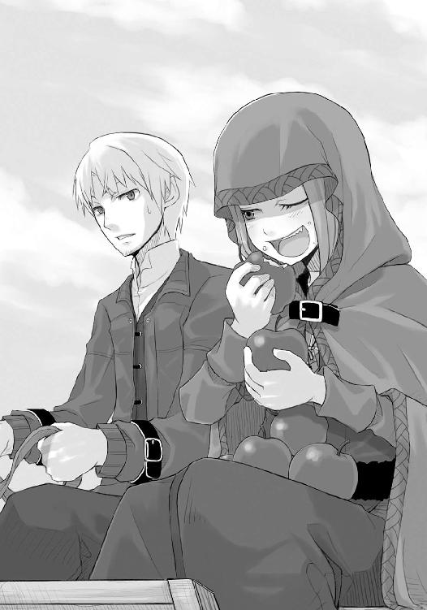
ホロの大げさな物言いに、ロレンスは思わず笑ってしまう。
「賢狼なら欲に打ち勝ったらどうだ」
「貪欲は多くのものを失うが、禁欲が何かを生み出すということもない」
至福の笑みを浮かべながら手についた林檎の汁をなめている様子を見ると、なんとなくそんな言葉も説得力を持つ。これほどの幸せを失うのならば禁欲など愚の骨頂。
もちろん、詭弁なのだが。
「で、さっき言いかけたことはなんだ？」
「うん？ ああ、そうじゃ。わっちには元手がないし、すぐに金に変わるような能力もない。だからぬしの商売に少し口を出して利益を生み出すつもりじゃが、それでもよいかや」
よいか、と聞かれる時、商人なら簡単に返事はしない。きちんと相手の言うこと、その裏、影響までをも把握してから返事をすることが常識だ。口約束も立派な契約だ。どんな目にあっても、契約は契約なのだ。
だから、ロレンスはこの時返事をしなかった。ホロの言おうとすることがわからない。
「ぬし、近いうちに後ろの毛皮を売るんじゃろ？」
ロレンスのそんな胸中は察したのか、ホロが荷台のほうを振り向く。
「早ければ今日。遅くとも明日だな」
「場合によっては、その時にわっちが口を出す。それで毛皮が高く売れればその分をわっちの稼ぎにしてほしい」
最後に小指をなめてから、ホロはなんでもないようにそう言った。
ロレンスはちょっと考える。今ホロの言ったことは、言い換えるとロレンスよりも高く毛皮を売ってみせる、ということだ。
いくら賢狼と言えど、ロレンスだって独り立ちして七年目の行商人なのだ。横から口を出すだけで値段が上がるほどぬるい商談はしないつもりだし、相手も簡単に買い取り金額など上げないだろう。
それでもホロがなんでもないことのように言うので、ロレンスはそんなことできるわけがないだろうと思うよりも、どうするつもりなのか、という興味のほうが先行した。だから、「よいだろう」と告げると、「契約成立じゃな」とげっぷ交じりに返事が返ってきたのだった。
「ただし、絶対毛皮の時にできるとは限らんよ？ ぬしはその道の人間じゃ。わっちに口出しする余地などないかもしれん」
「殊勝じゃないか」
「賢きとは己を知ること也」
後ろの荷台にまだ山とある林檎をちらちら名残惜しげに見ながら言わなければ、様になったかもしれない言葉だった。
毛皮を持っていった先はミローネ商会という様々な商品の仲介を主な生業とする商会だ。パッツィオでは三番目の大きさのそこだが、一番と二番の店がパッツィオに本店を置く地元の業者であるのに対し、ミローネ商会は遠い南の商業国に本拠地を持つ、爵位持ちの大商人が経営する大商会の支店だった。
ロレンスが地元の業者ではなくわざわざそこを選んだのは、ミローネ商会がよそ者であることを克服しようと商品の買取に高値をつけているという理由もあったし、何より様々な地に支店を持つそこに入る情報の量はとても多いからだ。
教会で出会ったあの若い行商人、ゼーレンの持ちかけてきた話に類することが聞けるかもしれないという目論見があった。貨幣相場の変動について最も鋭敏な耳を持っているのは、両替商と国境を越える商売を行う者達だからだ。
ロレンスとホロの二人はいったん宿に寄って部屋を確保してから、ロレンスは髭を整えて出発した。ホロは相変わらず頭から外套をかぶったままだ。
ミローネ商会は船着場から五番目に近い位置にあり、二番目に大きい店舗を構える。板張りの船着場通りに向かって大きく荷馬車の搬入口を確保したそこは一見すると一番大きい店舗のように見えてしまう。何より、そこに運び込まれる様々な品物の種類と量がよく見えて、繁盛している店なのだということをこれでもかと往来を行く人達に見せつける。これも地元業者と戦っていく独特の知恵なのだろう。地元の連中は、こういう派手さよりも長い期間をかけて培ってきたコネで商売を行ったりするせいで、自然とあまり派手に自分のところが儲かっているとは強調しない。その必要がないからだ。
そんなミローネ商会の荷揚げ場の前に荷馬車を止めると、たちまちのうちに店の人間がやってきた。
「ようこそミローネ商会へ！」
髭をあて、髪を整え、身なりもきちんとした人間に荷揚げ場を任せているのだから変わった商会だ。普通、荷揚げ場は山賊のような男達が怒鳴りながら右に左にと立ち回っている場所だ。
「以前こちらで麦を買い取ってもらったんだが、今日は毛皮を買い取ってもらいたい。商品は持ってきてある。時間を割いてもらえまいか？」
「ええ、ええ、もちろん大歓迎でございます。それではこのまま奥に入りまして左手の者達にお声をおかけください」
ロレンスはそれにうなずくと、再び手綱を握り言われたとおりに馬車を搬入口から荷揚げ場へと入れる。そこかしこに麦だの藁だの石だの木材だの果物だの、とにかく色々な物が溢れている。その上ここを行き交う者達の活気も相当なものだ。異国の地で成功を収めるというのはこういうことなのだろう、と行商人の目を覚まさせるような場所だった。
横にいるホロも、少し驚いているようだった。
「おおい、旦那様よ、どこに行かれる」
忙しく荷揚げや荷降ろしを行っているのを横目に奥に入っていくと、途中でそんな声に呼び止められた。声の聞こえたほうを向くと、真っ黒に日焼けして体から湯気を上げている大柄な男の姿が目に入った。さすがに荷物を扱う現場では入り口でロレンスに声をかけたような男は使っていないようだったが、それにしてもごつい。ホロが、小さく「戦士かや？」と言ったほどだ。
「毛皮を買い取ってもらいに来た。入って左側の者に声をかけろと言われた」
ロレンスはそう言ってから、その男が荷揚げ場の左側にいたことに気がつき、その男と目が合うと二人して笑い合ったのだった。
「よっしそれじゃあ旦那の馬車は俺が預かろう。そのままこっちに入って来てくれ」
ロレンスが言われたとおりに男のほうに向かい馬を歩かせると、男は真正面から馬を抱きとめる形になって静止の合図を出した。馬がぶるるんと鼻を鳴らす。男の活気にあてられたのかもしれない。
「ほほう、良い馬だ。こいつは丈夫そうだ」
「文句も言わずに働いてくれる」
「文句を垂れる馬がいれば見世物にするべきだ」
「違いない」
二人は互いに笑い合った。それから男が馬を荷揚げ場の奥まで設けられている頑丈そうな木の柵にくくりつけると、大声で誰かを呼ぶ。
やってきたのは、藁束を持ち上げるよりも羽ペンを持つのが似合いそうな男だ。買取の査定を行う者だろう。
「クラフト・ロレンス様ですね。当商会のご利用を店主に代わってお礼申し上げます」
丁重な挨拶には慣れっこだが、さすがに名乗る前に名前を呼ばれて面食らう。この商会を利用したのは三年前の冬に麦を売りに来たのが最後だが、もしかしたら、入り口で声をかけてきた男がロレンスの顔を覚えていたのかもしれない。
「本日は毛皮の買取をご所望だとお伺いいたしましたが」
今日の天気から話題を切り出す地元業者とは違って単刀直入だ。ロレンスは軽く咳払いをすると気持ちを商談用に切り替える。
「いかにも。この後ろのものがそれなのだが、全部で七十枚ある」
ひらり、と御者台から飛び降りて査定の男を荷台へと誘う。横に座っていたホロも遅れて御者台から降りてくる。
「ほう、これは良いテンの毛皮ですね。今年はどの作物も豊作で、テンの入荷が少ないのです」
テンは市場に出回る約半分のものが農作業の合間に農夫達によって狩られるものだ。そのため作物が豊作で農作業が忙しいとその供給も減る。ロレンスは少し強気に出ることにした。
「これほどの質を持つ毛皮は数年に一度だろう。途中雨に降られたがまったく失っていないこの毛皮のつやを見てもらいたい」
「ほほう、確かに良いつやです。毛並みも良い。大きさはいかがでしょう」
ロレンスは荷台の上から即座に大きそうな物を選んで査定の男に手渡した。商人の商品に持ち主以外が直接手を触れるのはご法度だからだ。
「ほほー......これは申し分ない大きさです。えーと、こちらが、七十枚でしたね？」
他のものの大きさも見せろ、とは査定の男も言わない。そんな無粋なことを言うようではやっていけない。買取の査定はここが勝負どころなのだ。商品のすべてを見たいと思わない買い手はいないが、商品のすべてを見せたいと思う売り手もいない。
ここは見栄と礼儀と欲望の十字路だ。
「それでは......ローレンツ様は、あ、失礼、ロレンス様は以前麦のお取引をさせていただいておりますので、こちらの金額でいかがでしょう」
同じ名前も国によって発音が違う。ロレンスもよくやるミスなので笑って許し、男が懐から取り出した木製の計算機に目を落とす。国や地方によって数字の書き方がまちまちの上、わかりにくいことこの上ないため商談で紙の上に数字が書かれることは滅多にない。木製の計算機はそこにある木の玉の数によって値段が一目瞭然だ。ただし、何の貨幣で計算されているのかには注意しなければならないが。
「トレニー銀貨で百三十二枚を提案させていただきます」
ロレンスは一瞬悩む振りをする。
「これらはなかなか見ない粒ぞろいの毛皮でね。今日こちらに持ち込ませてもらったのも以前麦の取引で世話になったからなのだが」
「その節はありがとうございます」
「私としては今後こちらの商会と良き関係を築いていきたいと考える」
ロレンスは言葉を切って小さく咳払いをする。
「いかがだろうか」
「当商会といたしましてもまったく同感でございます。それでは今後の親交も考えまして百四十枚でいかがでしょうか」
見え透いたやり取りだが、そんな欺瞞の中にも真実があるから商談は面白い。
トレニー銀貨百四十枚なら上々だ。これ以上押すのは得策ではない。それに、今後の関係もある。
「それで頼む」、とロレンスが言おうとした矢先だった。
今まで黙っていたホロが、小さくロレンスの服の裾を引っ張ってきたのだ。
「ん？ ちょっと失礼」
査定の男に断って、ロレンスはホロの外套の下に耳を寄せる。
「わっちは相場がわからん。どんなもんじゃ」
「上々だ」
そうとだけ答え、査定の男に商談用の笑みを向ける。
「それでは、ご納得いただけますでしょうか」
向こうも商談のまとまりを察したようだ。笑顔でそう言って、ロレンスは返事をしようとした。
まさか、ここでホロが口を挟むとはちょっと思わなかった。
「しばし待たれよ」
「なっ」
とは、ロレンスの思わずの言葉だ。
それでもホロはロレンスに何かを言わせる前に言葉をつむぐ。この辺の呼吸の摑み方は商人じゃないかと思ったくらいだ。
「トレニー銀貨百四十枚。確かにそう申されたかや」
「え、あ、はい。確かにトレニー銀貨で百四十枚です」
今まで黙っていたホロにそう尋ねられ、少し当惑しながらも査定の男が律儀に答える。大体、女が商談の場に立つのは珍しいことだ。ないわけではないが、限られている。
「ふうむ。ぬし様は気づかれたかよ？」
それでもホロはそんな事実を知らないのか、それとも知っていても気にしないのか、外套の下から余裕たっぷりにそんな言葉を放つ。
査定の男は気を吞まれてホロのほうを見つめているが、質問の指し示すことが何なのかまったくわからないのだろう。ロレンスだってわからない。
「も、申し訳ございません。何か見落としていることがございますでしょうか」
査定の男は見たところロレンスと同じ年くらいの、異国から来ている商人だ。経験してきた商談の場は数知れず、対応してきた人間の数も同様だろう。
そんな海千山千の男が、本気でホロに謝っているように見える。
確かに、突然そんなことを言われれば動揺するに決まっている。なにせ、ホロの言葉は「お前はどこを見ているんだ」というものに等しいからだ。
「うむ。ぬし様は一角の商人と見受けられるが......いや、だからこそわざと気づかぬ振りをしたのかや？ ならばぬし様も油断ならぬお人じゃ」
外套の下でホロがにやりと笑う。ロレンスは牙が見えやしないかとはらはらしたし、何よりこんなことを言ってどうするつもりなのかと罵倒したい気持ちだった。
今の商談で、この男がした査定は妥当なものなのだ。それに、ホロの言葉が当たっているのだとしたら、それはロレンスもその何かを見落としていることになる。
そんなもの、ない。
「め、滅相もございません。自らの不明を恥じるばかりでございます。宜しければその点御指摘いただけないでしょうか。その上で再度値段を提示させていただきたいと存じますが......」
買取の査定をする者がこんな低姿勢になったことなど初めてだ。その振りならいくらでも見たことはあるが、どうも本気のようだ。
ホロの言葉は、妙な重さを持っている上にその放ち方が絶妙だ。
そんなことを思っていたら、不意にホロがロレンスのほうを見た。
「あるじ様よ、意地悪はするものではない」
あるじ様、という言葉がなんとも馬鹿にしているのかこの場にふさわしいのかちょっと判別しづらかったが、ここで間違った対応を取れば後でホロに何を言われるかわからない。必死に頭を巡らせて返事をする。
「そ、そんなつもりではない。しかし、こうなってはしょうがない。お前、教えてやりなさい」
ホロが左側の牙をロレンスにだけ見せてにやりと笑う。どうやら正しい対応だったようだ。
「あるじ様、毛皮を一つ取ってくださいまし」
「うむ」
あるじ様と呼ばれているのだから威厳を保たなければならない、と力むほどに自分の姿がこっけいに思えてくる。今、この場はホロが主導権を握っているのだ。
「どうも。さて、ぬし様よ」
ホロはそう言って受け取った毛皮を持ち査定の男に見せる。一応毛並みや大きさや色艶の良いものをとっさに選んで渡したが、とても値段を吊り上げるような要素などなさそうだ。例えば毛並みの良さ一つを大仰にしつこく説明すれば、向こうからはならば全部を拝見させてもらいますと言われかねない。そうすれば傷のある毛皮だってあるはずなのだ。値段は下がらないかもしれないが、場の空気は悪くなる。
「こちらは見てのとおりに良き毛皮じゃ」
「はい、まったく同感でございます」
「うむ。これは数年まれに見る良き毛皮。されど、ここではあえてこう言うべきじゃ。すなわち、数年まれに匂う毛皮、と」
ホロの言葉に一瞬その場が固まった。意味が、わからない。
「匂いであるのに意外な盲点とはこれいかに」
ホロはそう言って一人からからと笑う。ホロの独壇場だ。そんなくだらない言葉に突っ込む余裕などロレンスと査定の男にはない。
「まあ、百聞は一見にしかずじゃ。取って匂いを嗅いでみなされ」
ホロはそう言って男に毛皮を渡し、手渡された男はロレンスのほうを当惑した目で見る。
ロレンスもそれに同情したい気持ちだったが、ゆっくりとうなずいた。
毛皮の匂いなど嗅いでどうなるというのか。そんなこと、商談で一度も指摘したこともされたこともない。
向こうも同様のはずだが、客が言うのだから逆らえもしない。男が、ゆっくりと毛皮に鼻を近づけ、匂いを嗅いだ。
すると、当惑しか浮かんでいなかった顔に少し驚きの色が混じる。もう一度匂いを嗅ぐと、それは完全に驚きのそれになった。
「どうじゃろ。何か匂うかや」
「え、あ、はい。これは、果物の香り、でしょうか」
ロレンスは驚いて毛皮を見る。果物の匂い？
「いかにも。今年は豊作のせいでテンの毛皮が少ないと申されたとおり、森もたわわに実った果実で溢れておる。そんな森をつい先日まで駆けずり回っていたようなテンの毛皮じゃ。たらふく良いものを食っておるから体から甘い匂いが立ち昇るほどじゃ」
査定の男は話を聞きながらもう一度匂いを嗅ぐ。それからうなずいて、確かに、と言う。
「実際、毛皮の色艶なんぞは多少上下すれども大して変わらぬじゃろう。問題は服にして、加工して、その後の使い勝手じゃないかや。良きものは長持ちし、悪いものはすぐ崩れる」
「仰るとおりで」
ロレンスも胸中で舌を巻く。この狼は、何をどこまで知っているのか。
「この毛皮はこれ、このとおり、甘い香りが匂い立つほどうまいものを食っておるテンの毛皮じゃ。その毛皮を剝ぐ時は大の男二人がかりで皮を引き裂いたものじゃ。身がしまりすぎて難儀した」
男もつられてぐいぐいと手元の毛皮を引っ張ってみる。
しかし、実際は買い取ってもいない商品をそこまで強く引っ張れない。ホロは、当然そこをわかっているのだろう。
見事なほど、絵に猫いたような商人だ。
「この毛皮は猛獣のそれのように強靱で、包まればまるで春の日差しのように暖かく、雨にかざせばそれは見事に雨をはじく。その上、この香りじゃ。鼻が曲がりそうな臭いのテンの毛皮でできた服が並ぶ中、一つ甘い芳香を放つ毛皮で作られた服があるところを想像せよ。目の飛び出るような高値で売れること間違いなしじゃ」
査定の男が言われたとおりにその場面を想像するように少し遠いところを見る。ロレンスもつられて見るが、確かに目立って売れそうだ。いや、この場合は匂い立って、か？
「さて、いかような値段でこちらを買い取っていただけるじゃろうか」
その言葉に、査定の男はぱちんと夢から覚めたように背筋をただし、慌てて木製の計算機をいじくった。こんこんこん、と小気味よい音を立てて木の玉がはじかれて、その数字が示されたのだった。
「トレニー銀貨二百枚でいかがでしょうか」
その言葉にロレンスは思わず息を吞む。百四十枚でもかなり高値なのだ。二百枚などあり得ない数字だ。
「うーん」
しかし、ホロがそんなうなり声をあげる。ロレンスはもう勘弁してくれと、それを止めようと口を開こうとする。もちろん、ホロが止まるわけはなかった。
「毛皮一枚につき銀貨三枚でどうかや。つまり、二百十枚」
「う、えー......」
「あるじ様、他に商会は」
「あ、わ、構いません！ 二百十枚でよろしくお願いします！」
その言葉にホロは満足げにうなずいて、ロレンスのほうを向いたのだった。
「だ、そうじゃ、あるじ様」
やっぱり、からかってそう呼んでいるようだった。
ヨーレンドという名の酒場は少しうらびれた通りにあった。ただ、店構えは開放的で掃除も行き届き、客層も例えば職人なら棟梁クラスの者達が利用しそうな場所だった。
そんなヨーレンドの酒場の席に着くと、ロレンスはどっと疲れが出たような気がした。
対するホロは極めて元気だ。その道の人間二人をいとも簡単に出し抜いたのだからさぞ気分もよいことだろう。まだ時間が早いこともあって店内は空いており、そのためすぐに出てきた酒で乾杯したものの、ホロは一気に飲み干し、ロレンスは少しなめただけだった。
特級のぶどう酒だというのに、何の味もしなかった。
「うーん。やはりぶどう酒じゃの」
げふー、とげっぷも一丁前だ。すぐに木のジョッキを掲げて追加を注文する。店員の娘は景気のよい客に笑顔で返事をした。
「どうしたかや。飲まんのか」
炒って乾燥させた豆をぼりぼり嚙みながらホロはそう言うが、その口調が意外にも勝利に酔いしれたそれではなかったので、ロレンスは正直に聞いてみることにした。
「お前、商人やってたことがあるのか？」
豆をぼりぼり嚙みながら、早速追加されたジョッキを手に取ってホロは意外にも苦笑いをしたのだった。
「なんじゃ、わっちのあれがぬしの誇りに傷でもつけたかよ」
まったくそのとおりだ。
「ぬしがどれほどたくさんの商談をしてきたかはわっちにはわからんが、わっちもあの村でたくさんの商談を見てきとる。あれはな、いつだったかや、もうかなり昔じゃが、ずいぶん頭の切れる者が使っとった方法じゃ。わっちが思いついたわけじゃありんせん」
そうなのか？、とは口に出さず目で問いかけた。我ながら情けないとは思ったが、ホロが酒を飲みながら困ったように笑ってうなずくと、ため息と共に多少安心したのだった。
「しかし、俺は本当に気がつかなかった。というか、昨日あれに包まって寝た時は果物の匂いなどしていなかったが」
「それはほれ。わっちがぬしに買ってもらった林檎。あれじゃ」
ロレンスはもう声も出ない。いつの間にそんな細工をしたというのか。
しかし、それを聞いて即座に思い浮かんだ懸念があった。
それでは詐欺じゃないか。
「引っかかったほうが悪い、とは言わんが、向こうもこんな方法があるのか、と感心するじゃろ」
「......まあ、だろうな」
「だまされた時に怒っているようじゃ話になりんせん。そんな方法もあるのかと感心してこそ一人前じゃ」
「堂に入った説教だな。まるで歳食った商人だ」
「うふ。どれほど年食った爺もわっちから見れば赤ん坊と同じよ」
ロレンスはもう笑うしかなく、肩をすくめるとぶどう酒を飲んだ。今度は、きちんと味がしたのだった。
「それはそうと、ぬしはきちんとするべきことをしたのかや？」
とは、ゼーレンの持ちかけてきた話のことだろう。
「一応さっきの商会の連中に、近々銀貨を発行しなおす国がないかと話は聞いてきたが、隠しているふうでもなかった。独占できる類の儲け話でない限り、あいつらはあまりそういうことを隠さない。そういう話を客にして、恩を売ったほうが得な場合が多いからな」
「ふむ」
「もっとも、その手の話で考えられる可能性はそんなに多くはないんだ。だから話に乗ったということもあるんだが」
見栄ではなく、事実だ。貨幣相場の変動は極端にいえば上がるか下がるかそのままかしかない。複雑になったとしても、もう頭を一ひねりすればほぼすべてが思いつくものばかりなのだ。
そうなれば、持ちかけられた取引内容とともに誰が得をして誰が損をするかを考慮すれば、そこから導かれる選択肢などそう多いわけではない。
しかし。
「まあ、そこにどんなからくりがあったとしても、俺が得をして損をしなければそれでいい。すべてはそれに尽きる」
ぶどう酒を飲んで、豆を口に放り込む。一応この代金はホロ持ちということになっているから、飲んで食わなきゃ損だ。
「しかし、マスターらしき人間が見当たらないが、外に出ているのか」
「店に行けば連絡が取れると言っとったな。よほど懇意にしておるのかや」
「いや、行商人が連絡拠点にするのは、出身地が属する商館か、酒場かのどちらかだ。俺も後で商館に行っておかないといけないんだが、やはりマスターはいないな」
ロレンスはそう言って店内を改めて見回した。そこそこ広い店内には、丸テーブルが十五卓にカウンター席も十五席並んでいた。客はロレンスとホロの他に暇をもてあましている感じの引退した職人らしい老人二人がいるだけだった。
まさかその老人二人に声をかけるわけにもいかないので、ロレンスはちょうど追加のぶどう酒と、鰊の塩漬けに羊肉の燻製を持ってきた娘に聞いてみることにした。
「マスターですか？」
細い腕のどこにそんな力があるのか、軽々と酒や料理をテーブルに置くと娘はロレンスのほうを向き直ってにこりと笑って言ったのだった。
「今は仕入れに行っていますが、何か御用事ですか？」
「ゼーレンというやつに連絡を取りたい、と伝えてもらえるかな」
店がゼーレンを知らないならそれはそれで構わない。酒場を連絡拠点にする行商人はとても多いから、行き違いがあったのだろう程度にしか思われないだろう。
しかし、それも取り越し苦労のようだった。ゼーレンの名を出すと、元々明るかった娘の顔がさらにぱっと輝いた。
「あ、ゼーレンさんですか。話は聞いています」
「連絡を取りたいんだが」
「昨晩町に帰って来ましたので、しばらくの間は毎晩見えると思いますけど」
「そうか」
「たいてい日が暮れてすぐに来ますので、それまで当店で過ごされることをお勧めします」
ちゃっかりした娘だ。ただ、それも一理ある。日没まであと一、二時間だから、ゆっくりと飲んでいけばちょうどよい頃合に来るだろう。
「それじゃあそうさせてもらおう」
「はい。ごゆっくりどうぞ」
娘はそう言って一礼すると、老人二人のつくテーブルのほうへと歩いていった。
ロレンスはぶどう酒の入ったジョッキを手に取り一口含む。鼻を軽く抜ける爽やかな酸味に、舌の両側にしみこむぶどうの甘さ。強烈さが売りのラム酒もいいが、ロレンスはぶどう酒や蜂蜜酒といった甘いもののほうがいい。たまになら林檎酒や梨酒といった変わり種もいい。
麦から造るビールもよかったが、職人によってうまいまずい、それに好みに合う合わないが大きいので考えものだ。値段が高ければそれだけ美味いぶどう酒と違い、ビールは値段によっても良し悪しがわからないから行商人が飲むには向かない物だ。その土地、その町に住む者でないと自分に合ったうまい物を見つけることができない。だから、地元の人間の振りをする時はビールなどを注文したりもする。
そんなことを思っていると、対面に座っているホロの手が止まっている。何か考えている風だ。ロレンスが声をかけると、ホロはしばしの間を開けてから口を開いた。
「あの娘、噓をついとる」
間を開けたのは、娘が厨房のほうに引っ込むのを待っていたようだ。
「どんな？」
「ゼーレンという若者、毎日定刻に来とるわけではなさそうじゃ」
「ふん......」
ロレンスはうなずいて、ジョッキの中のぶどう酒を見る。
「じゃあ、あの言葉どおりにゼーレンは来るとみていいな」
そんな噓をつくということは常にゼーレンと連絡が取れるということだろう。もしそうでなければ、ロレンスとゼーレンの双方に迷惑がかかるからだ。
「わっちもそう思う」
しかし、噓をつく理由がわからない。単にいつでもゼーレンを呼べる状況にあるから、適度な時間を開けさせてロレンスとホロにたくさん注文させようと思っているだけなのかもしれない。商売をする者は大なり小なり噓をつくのが日常だ。それ一つ一つを気にかけていたらすぐに道に迷ってしまう。
なのでロレンスはあまり気にかけず、ホロもそんなものかと思ったようだった。
その後は蜂の子の蜂蜜煮がでてきてホロが大喜びした以外、格別何ということもなく日が暮れて、とたんにぞろぞろと客がやってきた。
そんな中のうちの一人に、予想どおり件のゼーレンの姿があったのだった。
「再会を祝して」
ゼーレンが音頭を取ってジョッキがあわされ、ごつ、と良い音がした。
「毛皮のほうはどうでした？」
「かなり良好な値段だったな。この酒を見てもわかるだろ」
「そりゃあ羨ましい。やはり何かコツが？」
その言葉には即答せず、ロレンスは酒を飲んでから答えた。
「秘密だ」
ホロがバリバリと豆を嚙み砕いていたが、口に浮かぶ笑みを消すためだったのかもしれない。
「なんにせよ高く売れてよかったですね。あっしもだんなの資金が増えれば儲けも増える、てものです」
「資金が増えたからって投資する金額を増やすかはわからない」
「え、そんなあ。あっしが高値で売れるように祈ってたのは、それを期待してのことなんですよ？」
「それじゃあ祈る場所を間違えたな。俺が投資金額を増やすように祈るべきだった」
ゼーレンは大袈裟に天を仰いで、目を覆ったのだった。
「さて、そんなことより、だ」
「あ、はい」
ゼーレンは姿勢をただし、ロレンスのほうを見る。ただ、その間にちらりとホロのほうを見ていたのは、ホロも油断ならない相手だと思っているからだろう。
「ある銀貨の銀切り上げが行われるという話を売る代わりに、お前は俺が儲けた金の一部を代金として欲しい。そういうことだったな？」
「はい」
「その銀切り上げの話は本当なのか？」
まっすぐに問い詰めると、ゼーレンの表情がたじろぐ。
「ええと、そもそもこの話は、あっしがいた鉱山の町のちょっとした情報から予想しましてですね、だから信用してもらっていいと思うんですが......あの、商売に絶対はありませんよ......」
「まあ、だろうな」
ロレンスの問いと視線に縮んでしまったゼーレンを見て、ロレンスは逆に満足げにうなずいてから蜂の子の蜂蜜煮をつまんで口に放り込んで、あとを続けた。
「絶対だ、と答えたら断ろうと思っていた。そんな怪しい話はないからな」
ゼーレンはほっとしたようにため息をつく。
「それで、お前の取り分はいくら欲しいんだ？」
「はい、話代としてトレニー銀貨十枚。あとは旦那の儲けに対し、その一割でお願いします」
「持ってきた話の大きさの割にはずいぶん控えめな要求だな」
「はい。ただしもちろんあっしにも考えがあってのことです」
「損害のことか」
「はい。旦那が万一損しても、あっしにはおそらくほとんど損害分を払えませんし、払うことになればあっしは全財産放り出すことになる。利益を一割でお願いするかわりに、損害分に関しては話代の銀貨十枚を返すだけで不問にして欲しいというわけです」
ロレンスはもうとっくに酔いなどどこかにいっている頭で考える。
ゼーレンの提案にはおおざっぱにいって二通りの可能性がある。
一つは、ロレンスに損害が出るとそれを利用してゼーレンが利益を得ることができる場合。もう一つは、単純にこの話が本当の場合。
ただ、ホロのおかげでゼーレンの言う銀貨の銀切り上げ、すなわち銀貨の中の銀の量を増やし、銀貨の価値を高めるということが噓とわかっている。だとすると、考えられるのは銀貨の価値が下がるという事態で、ゼーレンが企むのはロレンスが損をすることにより利益を出すことなのだが、どうやって利益を出すのかがわからない。
こうなると、ホロの言うゼーレンの噓が間違っているのかもしれない、と考えてもよい気がする。本人も百発百中ではないと言っていたし、何よりゼーレンは話代を返すとまで言っているのだ。話代だけを目当てにしたちゃちな計画とも考えられない。
しかし、これらの問題はいつまで考えてもわかるわけではない。何の銀貨に関してゼーレンが話を持ちかけてきているのかがわかれば、新たに見えてくることもある。
それに、明らかに損をしそうであればどうせ話代は返ってくるのだ。多少の投機だけをしてお茶を濁してもいいし、何よりゼーレンが何を企んでいるのかいよいよ興味が募ってきた。
「よし、それで大体いいだろう」
「あ、はい。ありがとうございます！」
「確認だが、お前は話代としてトレニー銀貨十枚を要求し、また、受け取る利益分は俺の儲けに対して一割。さらに、俺が損害を出した時は、お前は俺に話代を返し、俺の損害分はお前に請求しない」
「はい」
「そして、これらを公証人の前で宣言する」
「はい。あ、その決済日ですが、春の大市の三日前でお願いできますか。私の予想だと切り上げは年内に来るはずですが」
春の大市といえば約半年後だ。銀の切り上げや切り下げによる相場変動が多少落ち着くためには必要な期間だろう。仮に切り上げが本当だった場合、強くなった貨幣には大きな信頼が伴う。信頼の伴う貨幣は取引で好んで使われる。そうすれば市場価値はうなぎのぼりだ。だから焦って売っては損というものなのだ。
「ああ、構わない。妥当な期間じゃないか」
「それでは、早速明日公証人の所に行きたいのですが、かまわないですかね？」
断る理由もない。ロレンスはうなずいて、ジョッキを手に取った。
「それでは、我々の儲けに」
二人がジョッキを手にしたのを見て、ぼんやりと豆をかじっていたホロも慌ててジョッキを手に取った。
「乾杯」
ごつり、とよい音がしたのだった。
公証人制度は、文字どおり公の機関に契約の証人となってもらう制度のことだ。ただ、契約を公証人の元で交わしたからといって、その契約を反故にした時都市の治安を守る兵士達がその相手を捕まえてくれるわけではない。隆盛を極めた王国都市であってもそんなことはしてくれない。
その代わり、反故にされたほうはその旨を公証人の名の下に言いふらすことができる。商人にとってそれは致命的なことだ。特に大きな取引をしようと思えばなおさらで、異国の地から来た行商人であっても少なくともその町でその後の取引はできなくなる。
なので、商人を辞めることを前提にしている相手にはあまり効果のないそれだが、相手が商人でいつづけるつもりならとても効果がある。
そんな公証人の元で契約書を交わし、話代の銀貨十枚と引き換えにゼーレンの持つ情報を得た。契約は滞りなく終わり、ロレンスとホロはゼーレンと別れるとそのまま足を市場のほうへと向けた。混んでいる町中で空っぽの荷馬車を引いていても事故や揉めごとの原因になるだけなので、荷馬車を宿に預けての歩きだった。
「あの若者の言った銀貨というのはこれじゃろ？」
ホロが手に持っているのは、このあたりで最もよく使われるトレニー銀貨だ。最もよく使われる理由というのはこの銀貨が数百種もある貨幣の中でかなり上位に位置する信用度を持つものであるということもあるし、単純にこの町を含むこの近辺一体がトレニー国の領土であるということが大きい。
自国の領土で自国の貨幣が使われない国は、遠からず滅亡するか、大国の属国となる運命だ。
「この辺だとかなり信用度の高い貨幣だな」
「信用度？」
第十一代目国王の横顔が刻まれた白い銀貨を弄びながら、ホロはこちらを見上げてそう言った。
「貨幣は何百種類もあるし、しょっちゅう銀や金の切り下げ切り上げが行われるからな。貨幣には信用がつきものだ」
「ふうん。わっちの知る貨幣なんてのはほんの数種類じゃ。やりとりのほとんどが動物の革じゃったな」
いつの時代の話なのか、とロレンスは胸中で呟くだけにした。
「で、どうじゃ。どの銀貨の話か知ったことで、何かわかったことはあるのかや？」
「わかったことというか、思いつくことはいくつかある」
「例えば？」
露店を見ながらホロはそう言って、急に立ち止まった。真後ろを歩いていた職人らしき男がそんなホロにぶつかって怒鳴ろうとしたが、ホロは外套を少し顔から外すと上目遣いに謝った。結果、職人らしき男はごつい顔の頰を少し朱くして、「き、気をつけな」とだけ言ってことなきを得た。
ロレンスは、自分だけはこの手に引っかからないようにしよう、と自分自身に言い聞かせたのだった。
「どうした」
「ん、わっちあれ食べたい」
ホロが指差したのは、パン屋の露店だ。昼前ということもあって焼きたてのパンが並び、露店の前では小間使いなどが主人や兄弟子達の昼食を調達するためだろう、一人では絶対に食べきれない量のパンを選んでいる。
「パンか？」
「うん。あれ、あの蜂蜜かかっとるやつ」
露店の軒先からこれ見よがしにつり下げられている細長いパンのことだ。上から蜂蜜を何べんも垂らしてたっぷりと蜂蜜を絡ませたそれはどこの町でも人気の逸品だ。確か、どこかの町ではパンを軒先からつるしてこれ見よがしに蜂蜜をたらしながら客引きをしたら、人気のあまり取り合いの喧嘩になってついにパン屋の組合法で蜂蜜はパンにかけてから軒先につるすこと、と決まったという話を思い出した。
確かにそれほど魅力的なパンだが、それにしても甘党な狼だな、とロレンスは苦笑を禁じえない。
「お前金持ってるだろ。欲しければ買ってくればよい」
「パンと林檎で価値がそう変わるとも思えん。ぬしはわっちが持ちきれない分のパンを持ってくれるのかや？ それとも、たくさんのつり銭を出させてあのパン屋の女将に嫌な顔をさせるのかや？」
それでようやく理解した。ホロが持っているのはトレニー銀貨だけだ。確かに、パン一個買うには大きすぎるお金だ。林檎ですら、両手で持つのは困難な量になった。
「わかったわかった。細かいの渡すから......両手出せ。ほれ、この黒いやつ一枚で大体あのパン一個だ」
言われるがままに差し出されたホロの小さい両手からトレニー銀貨を取り上げると、代わりに黒ずんだ銀貨や茶色い銅貨を渡し、そのうちの一枚を指してそう言ってやった。
ホロはしげしげと自分の手の中の貨幣を見つめてから、不意に言ったのだった。
「両替詐欺などしとらんじゃろうな」
蹴り飛ばそうと思ったが、ホロはその時にはすでに身を翻してパン屋のほうに歩いていた。
「口の減らないやつだ」
ロレンスは吐き捨てるようにそう言ったが、実のところそれが楽しくないわけではない。
ホロが満面の笑みをたたえてパンにかぶりつきながら戻ってきたのを見れば、やっぱり笑わざるを得なかったのだった。
「道を歩いているやつにぶつけるなよ。揉めごとはごめんだからな」
「わっちを子供扱いかや？」
「口の周りをべたべたにしながら蜂蜜パンにかぶりついている姿は誰がどう見たって子供だろうよ」
「......」
突然黙り込んだので怒ったのか、と思ってしまったが、老獪な狼は当然怒ったりはしなかった。
「可愛い？」
小首をかしげて上目遣いにロレンスのほうを見てそんなことを言ったので、ロレンスは頭をひっぱたいてやったのだった。
「まったく冗談のわからんやつじゃな」
「俺は真面目なんでね」
幸い、内心少しうろたえてしまったことは気づかれなかったようだ。
「で、ぬしは何に気づいたのかや」
「ああそうだ。それだ」
不愉快な指摘をされる前に、さっさとその話に入ったほうがよさそうだった。
「例の話がこのトレニー銀貨だとすると、あながちゼーレンの話が噓だとも言えなくなる」
「ほう？」
「銀を切り上げる理由というのも一応ある。えーと......これか。この銀貨、フィリング銀貨という。南に下って川を三つ渡った先の国のものだがな、銀の純度がなかなかで市場では人気がある。トレニー銀貨のライバルといったところだ」
「ふむ。貨幣が国の力を表しているのはいつの時代も一緒のようじゃの」
吞み込みの早い賢狼はパンをかじる。
「そうだ。国と国の戦争は何も兵士同士の戦いに限らない。他国の貨幣に自国の市場を席巻された時、その国は戦争に負けたのと変わらない。他国の王が、その貨幣流通を減らすと宣言するだけでもう自国の市場は窒息する。物を売り買いするにも、貨幣がなければ話にならない。言うならば国の経済活動を牛耳られるのと同じだ」
「つまりは、ライバルを倒すために銀の純度を上げるという理由がある、というわけかや」
あっと言う間にパンを食べ終わり、ホロは指をなめながらそう言った。
そこまでいけば、ホロは自然とロレンスの言いたいことに気がつくだろう。
「ま、わっちの耳も万能ではないからの」
そして、やはり気がついたようだった。
「可能性として、ゼーレンが噓をついていない場合も十分にあり得る」
「うん。それはわっちも賛成じゃな」
意外に殊勝なのでロレンスは少し驚いた。自分で百発百中ではないと言いつつも、疑ったら疑ったでてっきり自分の耳を疑うのかとか怒ると思ったのだ。
「なんじゃ、わっちが怒ると思ったのかや？」
「そのとおりだ」
「そう思われたことに対してなら怒るかもしらん」
いたずらっぽく笑ってそう言ったのだった。
「まあ、どちらにせよあり得るということだ」
「ふうん。で、今からどこに行くのかや」
「どの銀貨の話かわかったからな。それを調べに行く」
「造幣所？」
真面目な顔をしてそう言ったので思わず笑ってしまった。これには少し怒ったらしい。口を尖らせて睨んできた。
「俺らみたいな商人がそんなところに行っても兵士の槍で突かれるだけだ。両替商のところだよ」
「ふん。わっちにだって知らぬことくらいある」
だんだんと、ホロの性格がつかめてきたような気がした。
「で、両替商のところで最近の銀貨の様子を見るというわけだ」
「ん......見て、どうするのかや」
「貨幣に大きな動きがある時はな、必ず予兆のようなものがある」
「嵐の前触れのような？」
例えが面白かったので、少し笑う。
「まあ、そんなところだ。大きく純度が下がる時はほんの少しずつ下がり、大きく上がる時はほんの少しずつ上がる」
「ふうん......」
と、よくわからない様子だったので、ロレンスは咳払いをしてから頭の中に叩き込んである師匠の講義を引っ張り出してきた。
「貨幣というのはな、ほとんど信用で成り立っている。そこに入っている銀や金と同じ重さの銀や金の値段と比べたら、銀貨や金貨は明らかに価値が高い。もちろん価値の設定は実に慎重に決められてはいるが、本当はそれだけの値打ちのないものに価値を見出すわけだから、それは信用の塊と言っていい。その上、実のところ貨幣なんてものの純度の変化は、よほど大きく変わらない限り正確にはわからない。両替商でもはっきりとはわからない。鋳潰さない限りわかりっこないんだ。ところがな、貨幣というのがそんな信用の上に成り立っているものだから、ある貨幣に人気が集まれば額面以上の価値を持つことが多々ある。その逆も然りだ。そして、その人気の上下のきっかけは色々あるが、最も多いのは銀や金の純度の変化だ。だから人は異常に貨幣の変化に敏感になる。それこそ、天秤や眼鏡では見つからないほどほんの少しの変化を、大きな変化と思うほどにな」
ロレンスの饒舌な説明が終わると、ホロは思案顔で遠くを見る。さすがのホロでもこれを一回では理解できないだろうと、ロレンスはホロの質問にすぐに答えられるようにと待ち構えていたのだが、なかなか質問はこなかった。
よく見れば、ホロの横顔はわからないことをあれこれ考えている顔ではなく、何かを確かめているような顔だった。
信じたくはないが、ホロはもしかするとたった一度の説明で理解してしまったのかもしれなかった。
「うむ。つまりはあれじゃな。貨幣を作る側は大きく純度を変える前にほんの少しだけ純度を変えて皆の期待を測り、その反応を見て純度を上げるか下げるかの機会をうかがうというわけじゃな？」
こんな弟子がいたらその行商人はさぞ複雑な気持ちになるだろう。弟子が優秀なのは誇りだが、それは必ず恐ろしい商売敵になる。
ただ、同じことを理解するのに一月近くかかったロレンスにとってはとりあえず悔しさを隠すことが先決だった。
「そ、そんなところだな」
「人の世界はややこしいの」
苦笑しながらそう言う割には、おそろしいほどホロの理解は早かった。
そんな会話をしていると、二人はやがて細い川に突き当たった。パッツィオの隣を流れるスラウド川ではなく、人工的に土を掘って川から水を引いて作った用水路で、スラウド川を伝ってこの町に運ばれてきたたくさんの荷物をいちいち陸揚げせずに効率よく市場に運ぶことができる。
そのためひっきりなしに荷物を満載にした小船がせわしなく行き来をしていて、小船を操る船頭同士の怒鳴り合いなども聞こえていた。
ロレンスが向かうのはそんな用水路に架かる橋の上。昔からの慣習で、両替商と金細工師が店を構えるのは橋の上とされている。そこに筵を敷いて作業台と天秤を置いて商売をする。だから当然雨の日は休みだ。
「ほほう、にぎやかじゃの」
パッツィオ最大の橋の上についてホロがたまらずにそう呟いた。水門を閉じれば氾濫などあり得ないので、普通の川には絶対架からないほど大きな橋の両側には、肘がぶつかり合うほどの密度で両替商と金細工師が軒を連ねている。それらのどこもが盛況で、特に両替商のところでは市場に向かうためにたくさんの国から運ばれてきたたくさんの貨幣が次々とやり取りされていく。そんな横で金細工師が高価な彫り物や錬金を行っているのだ。さすがに金属を溶かすような釜はないが、細かい加工と注文のやり取りはすべてそこで行われる。必然的に都市の納税台帳の上位を占める連中がずらりと顔を揃えることになるだけあって、実に金の匂いに溢れていた。
「これだけいるとどこにするか迷うの」
「行商人ならどこの町にも懇意の両替商がいるものだ。ついてこい」
混雑している橋の上を行くと、ホロは慌ててロレンスの後ろについてくる。
最近はどの町でも禁止しているが、活気のある町ではただでさえ人通りが多い橋の上で両替商や金細工師の見習い小僧が師匠のためにと呼び込みを行うのだ。そうなればもう文字どおりお祭り騒ぎだ。ただ、にぎやかなのは結構なのだが、そのにぎやかさに乗じて両替詐欺が後を絶たない。だまされるのは、当然客の側だ。
「お、いた」
ロレンスも昔は幾度となくだまされたものの、懇意の両替商を作ってからはそんなこともない。
パッツィオで懇意にしている両替商は、ロレンスよりも少し年下のまだ若い両替商だった。
「ワイズ、久しぶりだな」
ちょうど客が立ち去ったところで、天秤から貨幣を下ろしていた金髪の両替商に声をかける。
ワイズと呼ばれた両替商は、なんだ？、と言いたげに顔を上げて、ロレンスに気がつくとたちまち破顔したのだった。
「おお、ロレンス！ 久しぶりだなあ。いつこっちに来たんだ」
互いの師匠同士が知り合いなので付き合いも長い。友人みたいなものだ。懇意にしているというよりかは、必然的にそうなったというほうが正しい。
「昨日町に入った。ヨーレンツから迂回して行商をしてきたところだ」
「へえ、相変わらずだなあ。元気だったか」
「まあな。そっちこそどうなんだ」
「へへ、早速痔を患ってな。師匠の口癖がうつっちまったよ。尻が痛え」
苦笑いをするワイズだが、独り立ちした両替商にとっては一人前になった証だ。客が途絶えず一日中座りっぱなしの両替商なら必ず痔を患うものなのだ。
「で、今日はどうした。こんな時間に来るってことは客としてなんだろう？」
「ああ、実はな、頼みがあって......どうした？」
ロレンスがそう言うと、ワイズはハッと夢から覚めたように視線をロレンスに戻した。それから、視線を再び別のところに向けた。
正確には、ロレンスのとなりだ。
「そちらの娘さんは？」
「ああ、パスロエの村からこっちに来る途中で拾った」
「へえ......て、拾った？」
「拾ったに近い。そうだろう？」
「む？ うむ......なんとなく語弊があるような気もするが、そんなところじゃな」
物珍しそうにきょろきょろとしていたホロは、ロレンスの言葉に振り向いて、それからしぶしぶといった感じで同意したのだった。
「で、名前は？」
「わっちのかや？ わっちの名はホロじゃ」
「ホロ、か......良い名だ」
ワイズがだらしのない笑顔でそんな褒め言葉を言ったのだが、言われたホロがまんざらでもない笑顔で返事をしたのでロレンスは少しだけ面白くなかった。
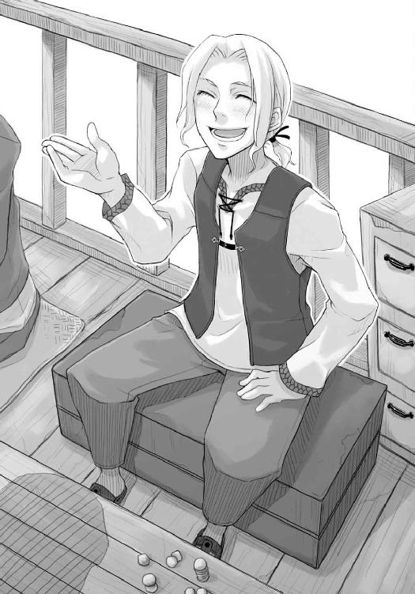
「あ、行く当てがないならうちの所で働かないかな。今ちょうど小間使いがいなくてね。なに、ゆくゆくはうちの跡を継いでもいいし、なんなら嫁にで──」
「ワイズ、頼みがあって来た」
ロレンスがそう遮ると、ワイズが露骨に嫌そうな表情を浮かべた。
「なんだよ。お前もう手籠めにしたのか？」
ワイズの遠慮のないものの言い方は昔からだ。
しかし、ホロのことを手籠めにするどころか逆にロレンスがいいように手玉に取られることが多いような状況なので、それには明確に否と返事をしたのだった。
「だったら口説いてもいいじゃないか」
ワイズはきっぱりとそう言いきって、ホロのほうを向くと微笑んだ。ホロはホロで両手をもじもじさせて「困りんす」などと言っている。おそらくわざとだろうが、やはり面白くない。
もちろん、そんなことおくびにも出せないが。
「それは後にしてくれ。とりあえず俺の用が先だ」
「ち、わかったよ。で、なんだ？」
ホロはくつくつと笑っていた。
「最近発行されたトレニー銀貨を持ってないか？ できれば過去にさかのぼって三回分くらいのものが欲しい」
「なんだ、切り下げか切り上げの情報でもつかんだのか」
さすがこの辺はその道の人間だ。あっという間に気がつく。
「そんなところだ」
「まあ、せいぜい気をつけるこったな。そうそう周りを出し抜けるもんじゃない」
と、いうことは貨幣に通じた両替商でも変化に気がついていないということだ。
「で、あるのか、ないのか？」
「あるよ。先月の教会の降臨祭の時に発行されたのが最新だな。昔のは......と。これだ」
ワイズは後ろの大きな木箱から真ん中をくりぬいた木の間に半分だけ挟まれた貨幣を取り出し、四枚をロレンスに手渡した。木には発行年度が書かれている。
見た目は、まったく変わらない。
「一日中貨幣を触っている俺らでも気がつかないんだ。同じ鋳型、同じ材料で作られていると思うぜ。造幣所の技師達の顔ぶれも昔から同じだ。大きな政変もないし、変わる理由がない」
ワイズがそう言うのだ。重さや色などはとっくのとうに慎重に見比べてあるのだろう。それでもロレンスは太陽にかざしてみたりといろいろ試してみる。やはり、何も変化はないようだ。
「無理無理。そんなんでわかってたら俺らがとっくに気がついてる」
ワイズは笑って、両替台の上に頰杖をつく。諦めろ、ということだ。
「ふん......どうしたものかな」
ため息交じりにロレンスはそう言って、頰杖をつきながらもう片方の掌を見せているワイズに貨幣を返した。ワイズの手の中に落ちたそれは、ちゃりちゃりと小気味よい音を立てたのだった。
「鋳潰して調べる気はないか？」
「馬鹿を言え。そんなことできるか」
貨幣を鋳潰すのはどこの国でもご法度だ。ワイズは馬鹿馬鹿しい、とばかりに笑い飛ばす。
ただ、そうなるとロレンスは判断に迷ってしまう。てっきり貨幣には何らかの変化があって、ワイズならそれとなく気がついていると思ったのだ。
どうしたものか。
そんなふうに考え込んでいた時だった。
「わっちにも見せてくれんかや」
ホロがそう言ったので、ワイズはたちまち顔を上げると最上の笑顔で「どうぞどうぞ」と貨幣を手渡す。手渡す時に、ホロの手を両手で包んでなかなか離さないということも忘れない。
「ぬし様は悪いお人」
ホロが微笑みながら少したしなめるように言ったその言葉に、ワイズは完全に粉々になったようだ。顔をでれでれにして頭など搔いている。
「何かわかるのか？」
そんなワイズを無視してロレンスは聞いてみる。いくらホロでも貨幣の純度は測れないだろうと思った。
「まあ、見とりゃんせ」
それからホロが何をするのかと思いきや、両手で貨幣を包んで耳元に持っていくと手を振ってチャリチャリと音を鳴らしているのだ。
「はは、そりゃあ無茶というものだよ」
ワイズがさすがに苦笑する。
何十年と経験を積んだ両替商の中には音を聞いただけで貨幣のわずかな純度を言い当てる者がいると言われるが、それはほとんど言い伝えに近い。行商人でいえばその行商人が買った商品は必ず値が上がる、というようなものだ。
それでも、ロレンスはもしやと思う。なにせ、ホロの耳は狼の耳なのだ。
「ふむ」
ホロはいったん手を止めて手を開くと、貨幣を二枚選んで残りを両替台の上に置く。
それから、その二枚を何度か打ち鳴らしてみる。そんなことを合計六回、つまりは全部の組み合わせを行ってから、言ったのだった。
「わかりんせん」
照れたようなホロの様子がまた心を鷲摑みにしたのか、ワイズは二度と元に戻らないのではないかと心配になるほど顔をだらしなく緩ませて、「しょうがないしょうがない」、とうなずいたのだった。
「それじゃ、邪魔したな。近いうちに酒でも飲もう」
「おう、絶対だぞ。絶対だからな」
ものすごい剣幕に気圧されながら、ロレンスは絶対だと約束すると、その場を後にした。
それでもワイズはホロにぶんぶん手を振っていたようで、ホロは何度も振り返りながらそれに小さく手を振り返していた。
人ごみに遮られて完全に見えなくなってから、ホロはようやく前を向いた。それから、少し吹き出して笑ったのだった。
「面白い人じゃな」
「無類の女好きだからな」
それは本当だが、少しワイズの評判を落としておかなければ、と思わなくもなかった。
「で、銀の純度は上がっていたのか？ 下がっていたのか？」
ロレンスはまだ笑っているホロを見下ろしてそう尋ねる。とたんに、ホロが笑みを消して驚いたような顔になった。
「かまかけだとしたら、ぬしも上手くなったの」
「お前の耳の位置を知っているのは俺だけだからな。少し動いただろ」
ホロは少し笑って、「油断ならぬ」と呟いた。
「ただ、驚いたのはお前があの場でそれを言わなかったことだ。噓をついた時は正直驚いた」
「あの者がわっちの言うことを信じるか信じないかは別として、あの周りにいた者までそうかはわかりんせん。秘密を知る者は少ないほうがよいじゃろう。それにな、まあ、お礼みたいなものじゃ」
「お礼？」
ロレンスは鸚鵡返しに尋ねていた。何か礼をされるようなことをしただろうか。
「ぬし、少し妬いとったじゃろ。その礼じゃ」
ニヤニヤ笑うホロの視線に、ロレンスはわかっていつつも顔が少し固くならざるを得ない。どうしてホロはそういうことに気がつくのか。それとも、かまかけが上手すぎるだけなのか？
「なに、気にすることはない。雄どもは皆阿呆の妬き餅焼きじゃからの」
図星なだけに耳が痛い。
「ただな、雌もそんなことが嬉しい阿呆じゃからの。どこを見ても阿呆ばかりじゃ」
ホロが少しロレンスに身を寄せてそんなことを言う。
商売だけでなく、色恋でもホロは老練なようだった。
「うふ。まあわっちにすりゃぬしどもはそろってひよっこの上に人間じゃからの」
「そう言うお前も今は人の形じゃないか。好みの狼の前で牙を向かれるなよ」
「なに、わっちの可愛い尻尾一振りで人も狼もいちころよ」
ホロが片手を腰に当てて、小さく腰を左右に振る。なんとなく、それが事実そうでロレンスは言葉に詰まってしまったのだった。
「さて、冗談はさておきな」
そんなホロの言葉でロレンスも息を吹き返す。
「ほんの少しずつじゃが、新しくなるほど音が鈍くなっとったな」
「鈍く？」
ホロはうなずく。音が鈍くなっているということは、銀の純度が下がっているということだ。わずかな差ではわからなくとも、白い銀貨が黒くなるほど純度が下がれば素人でも音が鈍くなるのがわかる。もしもホロの言うことが当たっていれば、それはトレニー銀貨の銀が切り下げられる予兆かもしれない。
「ふん......しかし、そうするとやはりゼーレンは噓をついていると考えたほうが妥当なのか？」
「どうじゃろうのう。ただ、あの若者、ぬしが払った銀貨十枚も、おそらく場合によっては本当に返すつもりじゃ」
「それはなんとなくわかっている。情報を売ってその金だけを目当てにした詐欺なら、酒場にあれほど顔を利かしたりはしないし、教会で話を切り出した時に金を要求したはずだ」
「なんとも不思議な事態じゃの」
ホロは笑うが、ロレンスは頭を巡らせるのに必死だ。
ただ、考えれば考えるほど不思議なのだ。あのゼーレンという若者は、一体何を企んでいるのか。何かを企んでいることは間違いない。そして、誰かが何かを企んでいるのならばその裏を突けば大抵こちらにも利益が出る。だからロレンスはこの話に首を突っ込んだのだが、それでもここまで何を企んでいるのか皆目見当もつかないとなるとちょっと困る。
そもそも、銀貨の価値が下がる銀の切り下げから、どうやって利益を出すというのか。考えられるのは、長期の投資だ。金や銀の価値が例えば二段階に価値が下がっていくとすれば、その一段階目で金を売り、二段階目に下がった時に買い戻す。そうすれば手元には最初と同じ量の金があるのにさらに一段階目に売った時と二段階目に買った時の差額が残る。金や銀は相場が常に揺れ動く。また元の値段に戻るまで待っていれば、やがてそれは利益となる。
ただ、今回はそんな悠長なことをしている時間はない。半年程度ではまず無理だ。
「ゼーレンが取引を持ちかけてきたということは、あいつが得をしなきゃならない。得をしなきゃならないんだ」
「まあ、変わり者じゃなければの」
「ただ、損害分については不問という話だ。だとすると......」
「うふ」
突然、ホロがそんなふうに吹き出した。
「どうした？」
「うふっふっふふふ。ぬし、だまされたんじゃないかや」
ホロの言葉に、ロレンスは一瞬頭の回転が止まる。
「だまされた？」
「いかにも」
「それは......銀貨十枚をだまし取られたということか？」
「うっふふふ。相手から無理やり金を引き剝がすだけが詐欺じゃありんせん」
行商歴七年あまり、様々な詐欺を見たり聞いたりしてきたが、ホロの言うことがちょっとわからない。
「自分は絶対に損をしない構図を描き、相手にだけ損か得かの勝負をさせるのも立派な詐欺じゃろ」
ロレンスは呼吸をするのも忘れるほど頭の中が真っ白になって、すぐさま顔に血が上ってきた。
「あの若者は絶対に損をしない。あの若者は最悪で儲けがゼロじゃ。なにせ、銀貨が値下がってぬしが損をしたとしても、あの若者は受け取った銀貨を返すだけじゃ。逆に値上がれば、利益の一部を貰うことができる。元手なしで始める商売じゃ。利益が出なくってもとんとんじゃ」
膝から下がなくなってしまったかのような脱力感。なんとも浅はかな手に引っかかったものだと脱力する。
言われてみれば、確かにそのとおりだ。勝手にそこに大きな企みがあると思っていた。いや、だましだまされの行商人なら必ずそう思うはずだ。だからこう考えてしまう。
ゼーレンは、「絶対に」利益が出るはずなのだ、と。
「うふ。人というものは聡いの」
ホロは他人ごとのようにそう言って、ロレンスはそれにため息しか出ない。ただ、幸いなことにまだトレニー銀貨にわざわざ投資してはいない。手元にあるのはあるべくしてある銀貨だけだ。ゼーレンと交わした契約書には何枚銀貨に投資するなどの取り決めはない。こうなればあとは相場の変動がないことを祈るばかりだ。そうすれば、ゼーレンの話は噓だったと指摘し、銀貨十枚を取り返せないこともない。もちろん、値下がってもその銀貨が返ってくるのだから、ゼーレンに一杯食わされていたと考えれば安いものだ。
商人が油断して誰かの罠にはまった時は、大抵が何もかもを失うことになるからだ。
それでもやはり、あの若造、と呼んでいたようなゼーレンに嵌められたという事実はロレンスの誇りを傷つけた。口の端で少しだけ笑うホロを前に、ロレンスは小さく背中を丸めてしまったのだった。
「ただ、の」
まだ何かあるのか？、とロレンスが許しを乞うような目でホロのほうを見たが、ホロの顔は獲物を前にした猟犬のようだった。
「銀貨の純度が少しずつでも下がるということは、よくあることなのかや？」
ロレンスはそれが救いの足ががりなような気がして、鉛を溶かし込まれたような背筋に無理やりに力をこめる。
「いや、普通は細心の注意を持って純度が維持されるはずだ」
「ふむ。で、そこに降って湧いた銀貨の純度に関する取引じゃ。偶然かのう」
「う......」
ニヤニヤと笑っているのは単純にこの状況が楽しいからなのかもしれない。いや、きっと楽しいのだろう。
「ただ、ぬしがあの村にあの麦を持ってあの瞬間にあそこに立っていたというのも、偶然じゃ。世に偶然と必然ほどわからんものはない。朴念仁の恋心ほどに厄介じゃ」
「妙な例えだな」
そんな言葉ばかりがすぐに出た。
「さて、ぬしは思考の迷路にて右往左往しているようじゃ。そういう時は新たな視点を入れるべきじゃ。わっちらも獲物を獲る時、たまには木に登る。木の上から見る森はまた違うもの。つまりの」
賢狼ホロが、にやりと左側の牙を唇の下に覗かせながら、言ったのだった。
「何かを企んでいるのがあの若者ではなかったとしたらどうじゃ？」
「あ......」
がん、と頭を殴られたような衝撃。
「何もあの若者の利益は、あの若者が相手をした者から貰わなくてもよい訳じゃ。例えば、誰かに頼まれていて、その手間賃を目当てに妙な取引を持ちかけておるということも考えられるじゃろう」
頭二つ分背の低いホロが、おそろしい巨人のように見える。
「木が一本枯れるところを見れば、それだけを見るなら森にとって害のような気もするが、森全体から見ればその木が栄養になって他の木がよく育つのじゃから森のためになる。目の前のできごとが別の視点から見ればひっくり返ることはよくあること。どうじゃ、何か見えてこんかや？」
一瞬、ロレンスはホロがすでに何かを知っているのではないかと勘繰ってしまったが、ホロの口調からそれがロレンスを試すものではなく、単純に助言なのだと気がついた。商人に大事なのは知識だ。ただ、その知識は単なる商品の値段などではない。
目の前のできごとの考え方。その手法の知識だ。
ロレンスは考える。新たに得たその知識で考える。
ゼーレンが、実際に会話をした相手、すなわちロレンス達から利益を得るのではなく、別の場所から利益を得るのだとしたら。ゼーレンが誰かに銀貨を買わせることで、別の誰かから手間賃を得ることができるとしたら。
ただ、その考えが頭の中に浮かんだ瞬間ロレンスは息を吞んだ。
もしもそのように考えるとするなら、ロレンスはこの事態を上手く説明することのできるからくりに一つだけ心当たりがあるからだ。
以前立ち寄った町の酒の席で別の行商人から聞いたそのからくりは、あまりにも規模が大きくその時は単なる酒の肴として聞いていた。
しかし、そのからくりを用いれば価値の下がる銀貨を買い集めるという意味のないような行為を難なく説明することができる。
そして、ゼーレンが噓をつきながらも公証人の元で契約を交わさせたり、酒場に異様に顔を利かせたりと、詐欺目当てにしては妙な行動を取っていることにも納得がいった。
ゼーレンは、それらのことで取引に説得力を持たせ、極力ロレンスが銀貨を買うようにと仕向けたかったのだ。
ロレンスの考えが当たっていれば、ゼーレンは誰かに雇われて銀貨の回収を行っている。それも、なるべく誰が何の目的でその銀貨を集めているのか誰にも気づかれないようにと。
ある特定の銀貨を目立たぬように集めるためには複数の商人達の欲を突いて彼らに集めさせるのが一番よい。一儲けを企んで銀貨を買う商人達は、他の連中に儲けを渡すまいとして総じて慎重に、また無口になるからだ。それから、頃合を見て商人達が集めた銀貨を上手に引き取るのだ。こうすると、相場に影響を与えず、また誰が銀貨を集めているのかも気取られずに、目的を遂行できる。
ある商品を買い占めて値を吊り上げる時などによく使われる手だ。
また、今回のうまい点は、銀貨の値段が下がれば商人達はなるべく損を小さくするためにその銀貨を手放したくなるということだ。そうすれば買取はさして難しくもないだろうし、損をした商人達は自らの名誉のためにそんな銀貨の投資に手を出したことを言いふらさない。
かくして、銀貨は人知れず一箇所に集まっていくのだ。
それを用いて行われる巨大な構図の企みは、目も眩むような利益を生み出すはずだ。少なくとも、記憶の中の話から生み出された利益は途方もないものだった。
ロレンスは、思わず声を上げそうになっていた。
「うふ。何か閃いたようじゃの」
「行くぞ」
「ん？ え、あ、どこに？」
もうすでに走り出しかけていたロレンスは、もどかしく後ろを振り返って言ったのだった。
「ミローネ商会だ。これはそういう構図なんだ。これは、価値が下がる銀貨を買えば買うほど利益が出る企みなんだよ！」
相手の企みは裏を突けば必ず儲かる。
それは、企みが大きければ大きいほどよいのであった。
ミローネ商会の面々は、突然訪問したロレンスの話を聞くや否や、驚いた表情をあっという間に警戒のそれに変えた。ただ、それもゼーレンがロレンスに持ちかけた取引の裏を突くことをミローネ商会に持ちかけているのだ。ゼーレンの話の時点ですぐに信用できるようなものではないのに、さらにそこの裏を突くようなロレンスの話は、もっと信用できなくても当然といえば当然だった。
それに、ミローネ商会とは毛皮の一件がある。今後の商取引に影響がありそうなほど怒ってはいなかったが、さすがに担当者はロレンスの姿を見て苦笑いだった。
それでもミローネ商会が一応動いてくれたのは、ロレンスがゼーレンと公証人の下で交わした契約書を見せたからだ。取引はミローネ商会が存分に確信を持ててからでいいと。
さらに、ロレンスはゼーレンの背後関係を調べてくれと言って、これが単純な詐欺ではないことを強調した。
ここまですれば例え詐欺にしても手の込んだものだとミローネ商会は考える。そうすれば後学のためにわざと首を突っ込んでくれる。ロレンスはそう考え、そして、実際にそのとおりになった。
なにより、ロレンスの考えが当たっていればこの取引でミローネ商会は莫大な利益を得る。
ミローネ商会は虎視眈々と他の商会を出し抜く機会を窺っているはずなのだ。多少胡散臭い話でも大きな利益の可能性は見逃さないだろうという予想は、当たっていた。
ロレンスがミローネ商会にとりあえずこの話に興味を持ってもらうことに成功したその後にしたことは、まずゼーレンという男の存在を証明することだ。ロレンスとホロは早速その日の日没にヨーレンドの酒場に出向き、ゼーレンと連絡を取りたいとウェイトレスの娘に告げた。ゼーレンは案の定毎日定刻にここに顔を出すわけではないようで店内に姿がなかったが、ウェイトレスの娘はたまたま今日だけいなかったようなことを言い、そして日が沈んでしばらく経ってからゼーレンが姿を現した。
ロレンスは他愛のない商売の話をゼーレンとしていたが、その模様は事前に打ち合わせをしておいたミローネ商会の人間が近くの席で秘密裏に観察していたはずだ。これから数日間、ミローネ商会はロレンスの持ちかけてきた商談が事実であるかどうかの判断を、ゼーレンの身辺を調査することでつける手はずだった。
ロレンスは、まず間違いなくゼーレンの背後には大商人が控えていると思っている。
そして、背後に大商人が控えていれば、まず間違いなくロレンスの思ったとおりの構図がそこにあるはずだったし、だとすればそれをミローネ商会が確かめるのもたやすいことだと思った。
ただ、問題はあった。
「間に合うかや？」
ミローネ商会がゼーレンの身辺調査を開始したその日の夜、宿に帰ってホロはそう言った。
ホロの言うとおり、問題は時間だった。仮にロレンスの仮説がすべて正しかったとしても、場合によってはもう利益など見込めなくなる可能性がある。いや、出るには出るだろうが、ミローネ商会が商会として動いてくれるほどの利益は見込めなくなるかもしれない。そうなればロレンス一人でこの話から利益を出すのは難しくなる。その代わり、ミローネ商会がすばやく決断をして計画に着手すれば、転がり込む利益は途方もないものになる。
ロレンスがゼーレンの背後に見た企みと、その裏を突く企みは、そういった類のものだった。
「まあ、おそらく間に合うだろう。そう思ったからこそミローネ商会に頼んだ」
ろうそくの明かりを頼りに、酒場から小売りしてもらったぶどう酒をコップに注ぎ、ロレンスは中を覗きこんでから半分ほど一息に飲んだ。ベッドの上で胡坐をかいて同じくぶどう酒の注がれたコップを手にしたホロが、中身を干してからそんなロレンスを見る。
「あの商会はそんなに優秀なのかや？」
「異国の地で商売を成功させるには、とにかく強力な耳を持つことだ。酒場での商人達の会話や、市場での客達の会話。それらを周りより飛びぬけて多く集めなければ異国の地に商会の支店を構え、立派な大きさにすることなどできない。その点、あの商会はかなりのものだろう。ゼーレンという男一人の身の回りを調べるくらいは造作ないと思う」
喋りながら、ロレンスは酒を注ぐようにと催促するホロのコップをぶどう酒で満たし、喋り終わる頃にはホロのそれは空になっていた。その上に次を催促する。呆れた早さだ。
「ふうん......」
「どうかしたか？」
ぼんやりとした顔で遠くを見つめて気のない返事をしたのでホロは何か思うところがあったのかと思ったのだが、どうやらだいぶ酔いが回っているだけのようだった。手にコップを持ったまま、まぶたがゆっくりと閉じかけていた。
「しかし、ずいぶん飲むな」
「酒の魅力は大きい......」
「まあ、それなりの酒だしな。普段はこんないいものは飲まない」
「そうなのかや？」
「金がない時は、葡萄の搾りかすでどろどろになっていたり、砂糖や蜂蜜やショウガを入れないと飲めないくらい苦かったりするようなのも飲む。コップの底が見えるようなぶどう酒は基本的にぜいたく品だ」
ロレンスの言葉に、ホロは手元のコップを覗き込んでからぼんやりと呟いた。
「ふむ。これくらいが普通なのかと思っとった」
「はっは。そりゃあよいご身分だ」
ロレンスは笑いながらそう言ったのだが、ホロはロレンスのそんな言葉を聞くと途端に顔をこわばらせて、うつむきがちにコップをベッドの下の床に置くとそのままベッドの上で丸くなってしまった。
あまりにも唐突過ぎて、ロレンスは驚いてそんなホロの様子をただ見つめていたのだが、少なくとも眠いからそうしたとかいう雰囲気ではあり得なかった。
少し自分の言動を思い返す。何かホロの気に障るようなことを言ってしまったのかもしれない。
「どうした？」
しかし、特に思いつかずそう尋ねてみるが、ホロのとがった狼の耳はピクリとも動かない。どうも相当怒っているようだった。
ロレンスはそれ以上声もかけられず必死に頭を巡らせていたのだが、やがて思い出した。ホロと出会った時に交わしたやり取りを。
「もしかして、よい身分だって言ったのに怒ったのか？」
ホロはロレンスに狼の姿を見せろと言われた時、恐れおののかれるのが嫌だと言った。
また、特別な存在に祭り上げられるのも嫌だと言った。
ロレンスは旅の吟遊詩人の歌を思い出す。神が年に一回の祭りを要求するのは、そのあまりの寂しさからだ、という歌を。
「悪かった。特に深い意味があって言ったんじゃない」
しかし、ホロは相変わらずピクリともしなかった。
「お前は......その、なんだ、別に特別じゃないし......いや違うな。平民、というのも違うな。平凡？ これも違うな......」
うまい言葉が見つからずにロレンスはますます焦って混乱してしまう。
ただホロのことを特別ではないと言いたいだけなのに、どうしてもしっくりといくものが見つからない。
ロレンスがそんなふうにあれこれ言葉を模索していると、やがてホロの耳がピクリと動き、「くふ」という笑い声がもれ聞こえた。
それからホロはころんと寝返りを打つと体を起こし、ロレンスに呆れたような笑みを向けたのだった。
「貧弱な語彙じゃな。そんなことじゃ雌も振り向かぬじゃろ」
「ぐ」
ロレンスは反射的に雪で足止めされた時に泊まった宿で惚れた女中のことを思い出してしまう。あの時、ロレンスは実に無残なふられ方をした。その原因というものが、ホロの言うとおり語彙のなさだったのだ。
目ざとい狼はすぐにそれに気がついたようで、「やはりの」と呆れるように言ったのだった。
「しかし、わっちも大人気なかった。つい、の」
ただ、ホロが続けてそんなふうに謝ったので、ロレンスも気をそがれ、改めて「すまなかったな」と言ったのだった。
「ただ、もう本当に嫌なんじゃ。そりゃあ、年経た狼の中には、わっちと親しくしてくれる者もおったが、やはり一線があった。それに辟易してわっちは森を出たんじゃ。言うならば......」
少し視線を遠くしてから、ホロは自分の手元を見る。
「友人を探しに、かの」
言ってから、ホロは自嘲するように笑った。
「友人、か」
「うん」
あまり触れるのはまずい話題かとも思ったが、ホロの返事が妙に明るかったので、ロレンスは興味の赴くままに聞いていた。
「で、見つかったのか？」
ホロはすぐに答えずに、照れたように笑った。
その様子を見れば答えは一目瞭然だ。きっと友人のことを思い出してホロは笑っているのだろう。
「......うん」
しかし、ホロがそんなふうに嬉しそうにうなずいたのが、ロレンスにはあまり面白くなかった。
「それが、パスロエの村のやつじゃった」
「ああ、村の麦畑のことを頼んだってやつか」
「そう。少し間抜けじゃが、底抜けに明るくての。わっちの狼の姿を見ても少しも驚かん。少し変といえば変じゃったが、いいやつじゃった」
のろけ話を聞いているようでついつい鼻の頭にしわのよってしまうロレンスだったが、当然それを悟られたくなくて酒を飲んで隠す。
「本当に間抜けでな。わっちもよう呆れたわ」
楽しそうに、思い出すのが少し恥ずかしいように喋るホロは、ロレンスのほうなどもう見ておらず、自分の尻尾を抱き寄せて毛をひねったりなんかしている。
それからふと、子供同士が秘密を共有して笑い合うように思い出し笑いをすると、そのままもそもそとベッドの上で丸くなってしまった。
おそらくは眠くなったのだろうが、ロレンスから見るとまるで思い出の中に浸ろうとしているかのようで、独り取り残された感じがしてしまう。
もちろん、だからといってホロに声をかけられるわけでもなく、ロレンスは小さくため息をつくと手の中のコップの酒をすべて飲み干したのだった。
「友人......か」
ロレンスは小さく呟き、コップをテーブルに置くと椅子から立ち上がり、ホロの眠るベッドまで歩み寄ってホロに毛布をかけてやった。
少し頰を赤くして無防備に眠るその寝顔につい見入りそうになってしまったものの、あまり見ていると頭の中のもやもやが余計黒くなりそうで、ロレンスは振り切るように自分のベッドに歩いていった。
しかし、獣脂の蠟燭を吹き消してベッドの上に体を横たえると、わずかな後悔が首をもたげてきたのだった。
すなわち、金がないと言って一つのベッドの部屋にするべきだったかなと。
そう胸中で呟いてから、ロレンスはホロと反対側をむいて今度は大きくため息をついた。
荷馬がいれば、ため息のようにいななかれただろうなと、思ったのだった。
「この取引、受けさせていただきます」
ミローネ商会パッツィオ支店店長、リヒテン・マールハイトはそう静かに言い放った。ロレンスがミローネ商会に話を持ちかけてからわずか二日後のことだ。さすがに仕事が速い。
「それはありがたい。ただ、そう仰るということはゼーレンの背後関係が摑めたということですね？」
「彼の後ろにはメディオ商会がついています。言わずと知れた、この町で二番目の規模の商会です」
「メディオ商会ですか」
パッツィオに本店を置く商会だが、いくつか支店も出している。麦をメインにした農産物の取引ではパッツィオ随一で、運搬用の船舶の所有もかなりのものだ。
ただ、とロレンスは胸中で引っかかる。メディオ商会は確かに大きな商会だが、ロレンスはもっと大きなところを考えていたのだ。それこそ、最大の取引相手は王侯貴族であるような。
「我々も、メディオ商会の後ろにさらに何者かがいると思っております。彼らだけでは、ロレンスさんが描いている仮説の実行はおそらく不可能です。ですから、我々はメディオ商会の後ろに貴族が控えているものと思っておりますが、メディオ商会ともなれば貴族との付き合いも多く今のところまだそれが誰かはわかりません。ただ、相手が誰であろうとロレンスさんの指摘どおり、先手を打てばどうにでもなりそうです」
にやり、と笑いながら言うマールハイトのそれは、ロレンスなどから見れば想像もつかない資金力を持つミローネ商会全体を後ろ盾にした自信の表れだろう。なにせ彼らの本店に足を運ぶのは王侯貴族や大司祭ばかりだ。それらを知っている者達としては、この取引など恐るるに足りないのだろう。
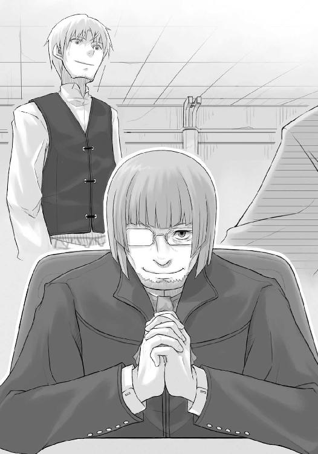
ただ、ロレンスもだからといって臆するはずもない。交渉を行う時、卑屈になったり弱みを見せたら負けだ。どこまでも対等に胸を張っていかなければならない。
だから、堂々とロレンスのほうから言ったのだった。
「それでは、分け前の話に入りたいのですが」
ちなみに、夢の膨らむ交渉であったことは、言うまでもない。
ミローネ商会から店長以下役職を持つ者達に見送られて店を出て、ロレンスは鼻歌を歌いたくなる気持ちを抑えられなかった。
ロレンスがミローネ商会に提示した分け前は、ミローネ商会の得る貨幣売買による利益の五分だ。ミローネ商会の儲けの二十分の一だが、それでもロレンスの笑いは止まらない。
なにせ、ロレンスの提案でミローネ商会が動けばそこでやり取りされるトレニー銀貨の量は千や二千の数ではない。二十万や三十万といった数の貨幣が動くとみて間違いない。概算でもその一割の儲けを見込むことができるとなれば、ロレンスが受け取る分け前はトレニー銀貨千枚以上ということもあり得る。しかも、純利益として、それなのだ。二千枚を超えることになれば、贅沢を言わなければ十分にどこかの町に商店を構えることができる金額だった。
ただ、ミローネ商会が本当に狙っている利益と比べたら、実はそんな貨幣の取引によるものなどはおまけに過ぎない。ミローネ商会が商会として動くのだから、そんな儲けは微々たるものなのだ。
しかし、その儲けをロレンスが手に入れることはできない。あまりにも巨大すぎて、ロレンスの財布には入りきらないからだ。それでも、もしミローネ商会がその利益を得ることができれば、ロレンスは莫大な貸しをミローネ商会に作ることができる。今後店を開くことになれば、その貸しから大きな利益を得られるだろう。
鼻歌が止まらなくとも、当然と言えた。
「ご機嫌じゃのう」
そしてついに、横を歩くホロが呆れたようにそう言ったのだった。
「これで機嫌が悪くなるやつなどいるものか。今日は人生最高の日だ」
ロレンスは大袈裟に両腕を広げるが、気分的にはまさしくそれだ。広げた両手と両腕でどんなものでも摑めそうな気がした。
実際、夢であった自前の店はもうすぐそこだ。
「まあ、上手くいっているようでよかったの......」
対して、ホロは覇気のない口調でそんなことを言ってから、口元を押さえたりしている。
なんのことはない、二日酔いなのだ。
「つらいなら宿で寝てろと言ったろう」
「ぬし一人で行かせたらいいように丸め込まれたりしないか心配での」
「どういう意味だ」
「うふ。そのまんまの意味......うぷ」
「まったく......。ほら、もう少し頑張れ。ちょっと行ったところに店がある。そこで休もう」
「......うん」
外套の下でわざとかと思うような弱々しい声でうなずいて、ホロはロレンスの差し出した腕に捕まってきた。賢狼だからといって自己管理ができているとはお世辞にもいえないようだ。ロレンスが「まったく」、と再度呆れたように呟いても反論はこなかった。
そんなロレンスとホロが入った店は、小さな宿に併設の酒場だ。酒場と名がついてはいてもメインは軽食で、こういうところは朝から晩までひっきりなしに出入りする商人や旅人達の休憩所になっている。扉を開けて中に入れば、狭い店内に客の入りは三割といった感じだった。
「なんでもいい、薄めた果汁一人分とパン二人分頼む」
「あいよ」
ロレンスのそんな適当な注文にも威勢よくうなずいて、カウンターの中にいた店主が厨房に注文を繰り返した。
ロレンスはそんな声を聞きながら、奥のほうの空いている席にホロを連れていって座らせた。
狼というよりもどちらかといえば猫のようにぐんにゃりとした様子で、ホロは椅子につくなりテーブルに突っ伏した。商会から歩いてきて、再び酒が回ってしまったようだった。
「弱いわけじゃなさそうだが、昨日はだいぶ飲んでたからな」
そんな言葉にホロの耳が外套の下でピクリと動いたが、視線を向ける気力はないようだ。
机に横を向いて突っ伏したまま、「ぅぇー......」などとため息なのかうめき声なのかわからない声を漏らしている。
「はいよ、林檎の果汁とパン二人分」
「料金は？」
「今もらえるかね。あわせて三十二リュートだ」
「ああ、ちょっと待ってくれ」
ロレンスは腰にくくりつけてある小銭入れを解いて中身を漁る。銅貨と見まがうばかりに黒いリュート銀貨を用意している最中に、ホロの様子を見た店主が呆れたように笑った。
「二日酔いかい？」
「ぶどう酒の飲みすぎだ」
「ま、若いうちはそういう失敗もあるわな。二日酔いでも何でも決済日はやってくる。しょっちゅう真っ青な顔した若い行商人がこの店からふらふら出て行くよ」
行商人なら誰しもが経験することだろう。ロレンスも、実際のところは何度かそんな失敗を犯したことがある。
「はいよ、三十二リュート」
「うん......確かに。ま、少し休んでいくといい。自分のところの宿にたどり着かなかった口だろう？」
ロレンスがうなずくと、わっはっは、と店主は笑いながらカウンターに戻っていったのだった。
「飲んだらどうだ？ いい具合に薄めてあってうまいぞ」
ロレンスがそう言うとホロはのろのろと顔を上げた。顔の作りがよいので辛そうな顔もそれなりに魅力的だ。きっとワイズが見たら仕事を休んででも看病するだろう。お礼はほんの少しの微笑で結構。ぼんやりとした顔で果汁をなめるように飲んでいたホロは、そんなことを考えてつい笑ってしまったロレンスのほうを不思議そうに見ていたのだった。
「ふう......二日酔いなんてもう何百年ぶりかやあ」
木のコップの中身を半分ほど飲み終えてから、ようやく人心地ついたようでホロはためいきをついた。
「二日酔いの狼なんてちょっと情けないな。熊が酔っ払うとかならなんとなくわかる気がするが」
熊が軒先に吊るしてあるぶどうの詰まった皮袋を持っていくというのはよくある話だ。ぶどう酒を造るために発酵させる過程で皮袋に入れて吊るしておくのだが、それがまた実にいい匂いがするのだ。
それで皮袋を持って逃げた熊を森まで追いかけていったら、森の中で熊が酔っ払っていた、なんて話もあるくらいだ。
「いや、その熊と酒を飲むことが一番多かったかの。人の貢物もあったが」
熊と狼が酒盛りをしている様子など、まるっきり御伽噺の世界だ。教会の連中が聞いたらどう思うだろうか。
「まあ、何べん二日酔いになっても懲りんのじゃがな」
「人と同じだな」
ロレンスが笑うと、ホロも釣られて苦笑いを浮かべたのだった。
「そういえば......ええとなんじゃったか。何かぬしに伝えることがあったんじゃが......とんと頭から出てこん。何か結構重要なことだった気がするんじゃが......」
「本当に重要なことならそのうち思い出すだろう」
「うーん......そうかや。まあ、そうじゃの。ダメじゃ......ぜんぜん頭が働かん」
ホロは言うなりまたずるずるとテーブルに突っ伏し、ため息をつくと目を閉じた。
今日一日はこんな感じだろう。さっきの店主の言葉じゃないが、出発が目前に迫った時ではなくて本当によかった。荷馬車の上は結構揺れるのだ。
「まあ、あとはミローネ商会に任せておけばいいからな。果報は寝て待てというわけだ。治るまで寝てればいい」
「うう......面目ない」
殊更に情けなさそうに言ったのはわざとだろうが、実際にまだだいぶ辛そうだった。
「そんな様子だと今日は一日駄目か」
「う......む。情けないがそのとおりじゃな」
突っ伏したままホロはそう答えてから、片目だけ開いてロレンスのほうを見る。
「何か用事でもあったのかや」
「うん？ ああ、商館に顔を出しがてら買い物にでも行こうかと思ったんだがな」
「買い物かや。ぬし一人で行ってくればいいじゃろ。わっちはここで休んでから宿に帰る」
のそのそとホロは顔を上げ、体を起こすと飲みかけの林檎の果汁を再びなめる。
「それともなにかや。わっちと一緒に行きたいのかや？」
もはやお約束というか、挨拶代わりにホロはそんなことを言ったのだが、ロレンスはそのつもりで言っていたので素直にうなずいた。
「なんじゃ、面白くない」
ロレンスがいたって平静なので、ホロはつまらなそうに下唇を小さく突き出した。ロレンスが返事に窮するとでも思っていたのだろうが、あまりおいしくもなさそうに果汁を飲みながらおざなりに言われれば、いくらロレンスだって平静を保てるというものだ。
ロレンスはパンを手にとってかじりながら、再びテーブルに突っ伏したホロに少し苦笑する。
「お前に櫛とか帽子とか買ってやろうかと思ったんだがな。また今度でいいか」
その瞬間、ホロの頭の上の外套の下で狼の耳がピクリと動く。
「......何を企んでおる？」
瞼を半分ほど開け、実に油断無くロレンスのほうを見つめながらホロはそう言った。
ただし、わさわさという尻尾が落ち着かなく動く音も同時に聞こえてくる。意外に思っていることを隠すのが下手なのかもしれない。
「ずいぶんな言われようだな」
「雄が肉を咥えてやってきた時は、肉を取られそうな時より注意しろと言うからの」
ホロが憎まれ口を叩くので、ロレンスはそんなホロに顔を近づけて耳打ちするように言ったのだった。
「慎重な賢狼を演じるならな、せめて落ち着かない耳と尻尾をどうにかしたらどうかな」
ホロは慌てて手で頭の上の外套を押さえ、それから「あ」、と小さく声を上げた。
「この前の借りは返せたな」
ロレンスが得意げにそう言うと、ホロは唇を尖らせながら悔しげにロレンスのほうを睨んだのだった。
「せっかく綺麗な髪をしてるんだ。櫛くらい持っていたほうがいいんじゃないかと思ってな」
ホロにようやく一矢報いたことは嬉しかったものの、あまりいつまでも喜んでいるとまたすぐにやり返されかねない。
だからロレンスはさっさとそう話を切り出した。
しかし、ロレンスの言葉を聞くとホロは途端につまらなそうに鼻から息を吐き、起こしかけていた体をまたぐんにゃりとテーブルの上に伸ばしたのだった。
「なんじゃ。髪のことかや」
そして、短くそう言った。
「麻紐で縛っているだけだろう？ まったく漉いてもいないし」
「髪などどうでもよい。櫛は確かに欲しいが、尻尾のためじゃの」
言葉の後にわさわさと音がする。
「......まあ、お前がそう言うならそれでいいか」
ロレンスはホロの流れるような髪の毛は世辞抜きで綺麗だと思っていたし、それに長い髪の毛そのものが珍しい。毎日湯を浴びて髪の手入れができる貴族以外はそうそう髪を伸ばすことができないからだ。長くて綺麗な髪の毛は生まれの高貴さを示すといってもよい。
だからロレンスも世の庶民のご他聞に漏れず、女性の長く綺麗な髪には無条件に弱いところがあるのだが、貴族でも滅多にいないと思えそうなくらいに綺麗で長い髪の毛を有しているホロにはその価値がわからないらしい。
狼の耳を隠すのも、頭の上からすっぽり外套をかぶるのではなくきちんとしたベールにして、服も行商人用の無骨な服ではなくローブにでもすれば、それこそ吟遊詩人の詩に出てきそうな麗しの修道女にでもなりそうなものだが、さすがにそこまで言うのは憚られた。
そんなことを言えば、どうつけ込まれるかわからないからだ。
「で、ぬしよ」
「ん？」
「櫛はいつ買いに行くかや」
テーブルに突っ伏したままロレンスのことを見上げているホロだが、その目は期待の色にらんらんと輝いている。
ロレンスは少し首をひねり、他意なく聞き返していた。
「櫛はいらないんだろ？」
「櫛をいらぬとは言っていない。櫛は欲しい。できれば歯の細かい物がよい」
髪を漉かないのに櫛など買ってもしょうがない。ロレンスの頭の中では尻尾の毛を漉くのは毛織物職人の使う刷毛だ。
「刷毛を買ってやるよ。なんなら良い毛織物職人を紹介してやろうか？」
毛皮の扱いなら専門の道具と本職の人間のほうが良い。半ば本気、半ば冗談でロレンスはそう言ったのだが、そう言い終わってから自分のことを見つめるホロのほうを見て言葉に詰まった。
ホロが、今にも嚙みつきかねないほどに怒っていた。
「ぬし......わっちの尻尾をそこいらの毛皮と一緒にしたな？」
抑揚のない声で静かに言うのは尻尾云々のことを周りにいる客に聞かれないためではないだろう。
ロレンスはその迫力に少したじろいだものの、ホロは相変わらず調子が悪そうだ。大した反撃もできないだろうと高をくくっていた。
「もう......我慢せぬぞ」
案の定、ホロの脅し文句もひねりがない。
どうせ泣き出すくらいのことだろうとロレンスは思い、余裕を見せるために林檎の果汁を飲みながら軽く指摘してやったのだった。
「泣いて駄々でもこねるつもりか？」
突然やられたら確かに動揺したかもしれないがな、とは思ったもののもちろん口には出さなかった。
ただ、そう言われたホロはそれが図星だったのかなんなのか、少し目を見開いてロレンスのほうを見て、顔を反対側にぷいと向けた。
そんな子供っぽい仕草が妙に可愛げがあり、ロレンスは少し笑いながらいつもこのくらいだといいんだが、なんて思ったりしていた。
そして、ホロはしばしの沈黙の後、小さく言ったのだった。
「......もういかん。吐く」
その瞬間、ロレンスは飲みかけの果汁をひっくり返しそうになるくらい慌てて椅子から立ち上がり、大声で店主に桶を持ってくるようにと叫んだのだった。
日もすっかり落ちて、木窓の向こうの通りの喧騒も収まって久しい頃になってから、ようやくロレンスは机から顔を上げた。手に羽ペンを持ったまま思い切り背筋をそらし、両手を上げて伸びをする。ごきりごきりと良い音を立てる背骨が気持ちいい。首も左右に勢いよく曲げると、負けじと良い音を立てた。
そして、再度机の上に目を向ける。そこには質素だがそれなりの商店の店構えが描かれた紙があった。どんな町で、どんなものを商い、どう商売を拡大していくかの綿密な計画までもその横には書いてある。さらには商店の出店にかかる費用から、その町の市民権確保まで様々な角度から費用を概算し、記述もしてある。
ロレンスの夢、自前の商店の出店計画だった。
つい一週間前までは遠い夢だ夢だと思っていたそれも、ミローネ商会との今回の取引でにわかに現実味を帯びた。もしもトレニー銀貨二千枚からなる収入があれば、貯金と呼べる装飾品や宝石を多少処分すれば店を出すことができる。そうすればもうロレンスは行商人ではなく、町商人ロレンスなのだ。
「むう......何の音かや......」
と、改めて惚れ惚れと自分の書いた店の絵を見ていると、ホロがいつの間にかベッドの上で身を起こしていた。眠そうに目をこすってはいるが、もうだいぶ回復したらしい。何度か目をしばたかせてロレンスのほうを見ると、のそのそとベッドから這い出してきた。少し目が赤く腫れぼったいような気がしたが、顔色は良さそうだった。
「体調はどうだ」
「うん、だいぶよい。ただ、少し腹減ったの」
「食欲が出れば問題ないな」
ロレンスは笑って、テーブルの上にパンがあると教えてやった。ライ麦の黒パンだ。硬いし苦いしパンの中では底辺に位置する安物のそれだが、ロレンスはその苦味が逆に気に入っていてよく買うことがある。
案の定ホロは一口かじって不平を漏らしたが、結局それしか食べるものがないので諦めたようだ。
「何か飲み物は......」
「水差しがあるだろう」
パンと並べて置いておいた水差しの中身を確認して、ホロは一口水を飲むとパンをかじりながらロレンスのそばに寄ってきた。
「......店の絵？」
「俺のな」
「ほほう、なかなか上手いのお」
しげしげと眺めながらそう言って、ホロはパンをかじる。
異国の地で言葉が通じない時など、時折絵で取引をするものだ。欲しい商品の単語がどうしても出てこないことが結構あるし、通訳がいつも見つかるとは限らない。だから行商人は皆結構絵が上手いのだが、ロレンスは大きな儲けがあると大体決まって店の絵を描く。酒を飲むよりもそれは心地よい。
それに、なかなかの腕前だと自負してはいたが、やはり褒められると嬉しいものだ。
「これらの文字は？」
「ああ、店の出店計画や、費用なんかだ。もちろんこのとおりにいくわけもないけどな」
「ふうん。町の絵も描いてあるけど、これはどこの町かや」
「実際の町じゃない。俺が店を出したい理想の町だ」
「ほほう。しかし、こんなに綿密に描いておるということは、近いうちに店を出すのかや？」
「ミローネ商会との取引が上手くいけばな。おそらく出せる」
「ふうん......」
ホロはあまり気乗りしないふうにうなずいて、パンの残りを小さい口に放り込むとテーブルのほうに歩いていった。こくりこくりと音がしているので、水でも飲んでいるのだろう。
「自前の店を持つことは行商人の夢だからな。俺も例外じゃない」
「うふ。それくらいわかりんす。理想の町まで描いているんじゃ、よほど何遍も描いているんじゃろ」
「描けばいつか俺の手の中に入るような気がしてね」
「大昔に出会った絵描きもそんなことを言っとったの。見ている景色を絵にしてすべてを自分のものにしたいと」
二切れ目のパンをかじりながら、ホロはベッドの隅に腰掛ける。
「その絵描きの夢はおそらく未だかなわずじゃろうが、ぬしの夢は実現間近というわけじゃな」
「ああ。それを考えるといてもたってもいられなくなるな。ミローネ商会に出向いて全員のケツを叩いて回りたいくらいだ」
少し大げさにそう言ってみたが、噓なわけではない。だからだろうか。ホロは別にからかうでもなく、くつくつと笑うと「夢が叶うといいの」、とだけ言ったのだった。
「しかし、そんなに店を持つことがよいことかや。行商でもそれなりに儲かるじゃろう？」
「儲けるだけならな」
ホロが少し首をかしげる。
「それ以外に何かあるのかや」
「行商人は、人にもよるが大体二十から三十の町をぐるぐると回って行商をする。行商人が町に残っていても金は一銭も増えないからな。一年のうちのほとんどが荷馬車の上だ」
ロレンスは机の上に置いてあるカップを手に取って、少しだけ残っていたぶどう酒を飲み干した。
「そんな生活だから、友人もろくにできやしない。せいぜいが取引先に知り合いだけだ」
ロレンスの説明にハッとしたホロは、途端に悪いことを聞いたというバツの悪そうな顔をする。
やはりホロは根がいいやつなのだ。ロレンスは気にするなという意味もこめて、少しおどけるように後を続けたのだった。
「店を構えれば俺も町の一員だ。友人もできるし嫁探しも簡単になる。それに何より死んだ後に入る墓が決まっているというのが安心だ。もっとも、一緒に入ってくれる嫁が見つかるかは......運次第だがな」
ホロは小さく吹き出して笑う。
ただ、行商人が新しい町に掘り出し物の商品を探しに行くことを「嫁を探す」とも言い、その言葉には良いものはなかなか見つからないという意味が含まれている。
実際、町に店を構えたからといってすぐに町の人間と親しくなれるわけでもない。
それでも、やはり一つの土地で長い間暮らすということは行商人にとって夢だった。
「ただ、ぬしが店を持つとなるとわっちはちょっと困りんす」
「ん？ なんでだ？」
ロレンスが振り向くと、ホロはまだ口元に笑みの余韻を残していたものの、その表情が少し翳っていた。
「ぬしが店を持ったらその店から出なくなるじゃろ。わっちは一人で旅を続けるか、誰か新しい伴侶を見つけなければならん」
そういえば、とホロが少し世界を見て回ってから北の地に戻りたいと言っていたことを思い出した。
ただ、ホロのこの賢さだ。毛皮の売買の時に稼いだ金があるし、一人でも何も困ることはないだろう。
「一人旅でも困らないだろう？」
だからなんの気もなしにそう言ったのだが、ホロは意外なことにその言葉を受けとると、パンをかじったまま少しだけうつむいてしまった。
それから、ぽつりと言う。
「一人は飽いた」
そんなふうに言いながら床に届いていない足をぷらぷらさせるホロの仕草がとても子供っぽく見える。とたんにベッドに腰掛けるその姿がとても小さく、ろうそくの明かりの前に塗りつぶされてしまいそうに見えた。
ロレンスは、ホロが何百年も前の友人のことを思い出して実に楽しそうに、嬉しそうにしていたのを思い出した。
昔の友人を懐かしむのは今が寂しい証拠だ。あの時にホロが思い出に浸るように体を丸めた仕草が、寂しさの雨風から体を守る仕草のように思えてくる。
ただ、滅多に目の当たりにしない他人のそんな様子を前に、ロレンスは少し動揺してなるべく傷つけないようにと言葉を選ぶ。
「ま、まあ、お前が北に帰るまでくらいなら付き合ってもいいぞ」
と、言う他なくそう言ったロレンスだったが、それでもホロが「本当に？」といった感じで上目遣いに見てくるので、大きな商談を前にした時よりも高鳴る鼓動を隠しつつ軽い口調で言ってやった。
「金が入ってもそれですぐに店が持てるわけじゃないしな」
「ほんとかや？」
「噓ついてどうするんだ」
思わず苦笑して、ホロもそれに釣られて笑う。ただ、ホロのそれはほっとしたような笑顔だ。口は笑いつつも伏し目がちの目にはどことなく寂しさが漂っている。ホロのまつげはこんなにも長かったのか、と少しだけ場違いなことをロレンスは思った。
「その、なんだ、だからそんな顔するな」
町で暮らす商人達ならもう少し気の利いた言葉を言えるのだろうが、ロレンスは生憎と女っ気などない生活を強いられる行商人だ。それでもなんとかそう言うと、ホロは少し視線を上げて小さく笑ってから、「うん」、とうなずいたのだった。
そんなふうにしおらしくしていると、体の小ささもあってホロの姿はものすごく儚げだ。凜凜しく尖っていた狼の耳も伏せられたまま所在なげに動いていて、立派な尻尾も不安げに体のそばで丸められていた。
それから訪れた、沈黙。
ロレンスはホロから視線が離せず、ホロはロレンスのほうを見られないようだった。
ただ、一度だけホロはロレンスに視線を向けて、すぐに伏せてしまった。いつかどこかで見たようなそれ。ロレンスは少し記憶を手繰ってみてすぐに気がついた。パッツィオについてすぐ、林檎をねだった時の目だ。
あの時は林檎だったが、今ホロがねだるのはなんだろうか。
相手が何を望んでいるか察知するのは商人にとって必須技能だ。
ロレンスは少しだけ深呼吸をすると、椅子から立ち上がった。その音に少しびっくりしたのかホロが耳と尻尾を少し立ててロレンスのほうを見たが、自分に近づいてくるのを見ると慌てるように視線をそらした。
それから、ロレンスが目の前に立つと少しだけ手を伸ばしてきたのだった。
おずおずと、おっかなびっくりといった感じで。
「目が腫れぼったいのは、夢でも見て泣いていたのか」
ロレンスはホロの手を取るとそのとなりに腰掛け、そのまま引き寄せて軽く抱いてやった。
ホロは無言でされるがままになって、ロレンスの腕の中で少しだけうなずいた。
「......目を」
「ん？」
「目をな......わっちが目を覚ますとな......誰もおらん。ユエも、インティも、パロやミューリもおらん。どこにもおらんかった」
夢の中で、ということだろう。ぐす、という洟をすする音がして、ロレンスはホロの小さな頭を撫でてやった。出てきた名前は仲間の狼の名前かもしれないし、もしかしたら狼の神かもしれない。ただ、さすがのロレンスもそれを尋ねるような無粋な真似はしなかった。
「わっちらはな、何百年でも生きることができる。だからな、わっちは旅に出たんじゃ。絶対に、絶対にまた会えると思ってな。でもな......おらんかった。誰もおらんかった」
しっかと服を握るホロの手が小刻みに震えている。そういった夢はロレンスも見なくはない。
故郷に帰ると誰も彼もがロレンスのことなど忘れている。そんな夢をたまに見る。
実際、行商に出て二、三十年ぶりに故郷に帰ると村ごとなくなっていた、なんていうことはよくある話だ。戦渦に巻き込まれて燃えてしまうこともあれば、疫病で全滅したり、飢饉で餓死してしまったりと理由は様々だ。
だから行商人は店を持つことが夢なのだ。
そこに自分の故郷を作り、そこに自分の居場所を作るのだ。
「もう、目を覚まして誰もおらんのはいやじゃ......。一人は飽いた。一人は寒い。一人は......寂しい」
そんなホロの感情の吐露に、ロレンスはあいずちも打たずただ抱きしめて頭を撫でてやるだけだった。これだけ取り乱していれば何を言っても耳には届かないだろうと思ったし、何より的確な言葉を言えるとも思えなかった。
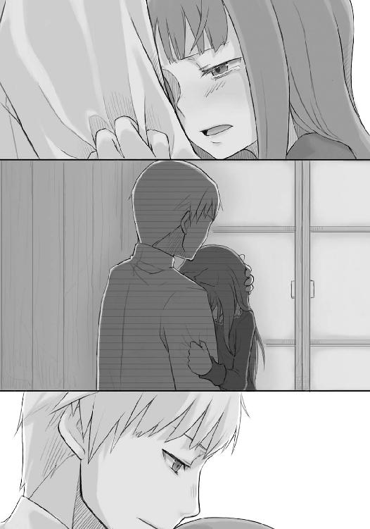
ロレンスも御者台の上や、初めて訪れた町などで突風のような寂しさに襲われることがある。
そんな時は何をしても駄目だ。何を聞いても駄目だ。ただ何かにしがみついてその突風が過ぎ去るのを待つしかない。
「ぐす......」
なので、そんなふうにホロのことをしばらく抱いていたら、やがて感情の波が収まってきたのか、ホロは摑んでいたロレンスの服を離し、少し顔を上げた。
ロレンスがそれに応じてゆっくりと腕を離すと、ホロは鼻をぐずぐずいわせながら体も起こしたのだった。
「......面目ない」
目も鼻も真っ赤にしたままホロはそう言ったが、声はだいぶ落ち着いていた。
「行商人も同じような夢にうなされることがある」
ロレンスがそう言ってやると、ホロは照れたように笑って、詰まった洟をすすり上げた。
「あーあー、顔中べたべたじゃないか。ちょっと待ってろ」
ロレンスは立ち上がり、机の上に置いてあった紙を差し出した。絵や文字が描いてあるがもう乾いている。洟をかむくらい大丈夫だろう。
「う......じゃが、これ......」
「描いては捨ててるんだ。それにまだあの取引はうまくいってない。皮算用にもほどがある」
そう言って笑うと、ホロもつられたように笑って紙を受け取った。それから思い切り洟をかんで目元をぬぐうと、だいぶすっきりしたようだった。ため息をついてから深呼吸して、もう一度恥ずかしそうに笑ったのだった。
ロレンスはホロのそんな様子を見てまた抱きしめてやりたくなったが、さすがにそれは思いとどまった。いつもの調子を回復しているようなので、軽くあしらわれるかもしれなかったからだ。
「ぬしに、大きな借りができたの」
ロレンスがそんなことを思っているのを知ってか知らずか、ホロはそう言いながら握りつぶしてしまったらしいパンのかけらを拾って食べている。
ロレンスはとりあえず突っ込まれなかったことをほっとしつつそんな様子を見つめていたが、ホロはあらかた食べ終わると手を軽くはたいて小さくあくびをした。泣いたので、疲れたのかもしれない。
「まだ眠い。ぬしは寝んのかや？」
「ああ、そろそろ寝るかな。起きていてもろうそく代の無駄だ」
「うふ。商人らしい考えじゃ」
ホロはベッドの上に胡坐をかいて笑い、そのまま横になった。ロレンスはそんなホロを見てからろうそく台に息を吹きかけ、その明かりを消す。
とたんに落ちる闇。明かりに目が慣れていたので完全に真っ暗だ。今夜も空は晴れて星が出ているようだったが、木窓の隙間から入ってくるわずかな光はまだ見えない。目が慣れるのを待つのももどかしく、ロレンスは手探りで自分のベッドへと向かう。部屋の奥の木窓の下だ。ホロの寝るベッドの角に足をぶつけないかだけに注意しながら歩いていた。
ようやく自分のベッドにたどり着くと、ベッドの端を確かめてからゆっくりと身を横たえる。以前、適当に身を投げたら思い切りベッドの角に体をぶつけて怪我をしたことがあった。それ以来慎重になっている。
しかし、さすがにそれに気がつきはしなかった。
ベッドに身を横たえようと思ったら、そこに誰かがすでに横になっていたのだ。
「な、にを」
「野暮なこと言うもんじゃありんせん」
少し怒ったような口調が異様に艶かしい。
されるがままに引き倒されると、ホロがぴったりと横についてくる。
さっき抱きしめた時に感じた儚さとは違う、しっかりとした、それでいて柔らかい娘特有の体。
ロレンスは再び動悸が高まるのを抑えられない。ロレンスも健康な男だ。気がついた時にはホロの体を抱きすくめていた。
「苦しぃ」
そんなホロの批難がましい声でようやく我に返り、腕にこめた力をわずかに抜いたが、決して離しはしなかった。ただ、ホロも振りほどこうとはしない。
代わりに、耳元に口を近づけてきて囁いたのだった。
「ぬし、目は慣れたかや？」
「どういう」
意味だ？、という言葉はホロの細い指に口を押さえられて出なかった。
「ようやくぬしに何を言おうとしていたか思い出したんじゃがな......」
ひそひそと囁くホロの言葉がとてもむずがゆい。むずがゆいが、それが甘い睦みごとのように聞こえなかったのは、ホロの口調にただならぬ雰囲気があったからだ。
そして、実際に睦みごとなどではなかった。
「少し遅かった。扉の外に三人。おそらくまともな客じゃないの」
ようやく気がついたが、いつの間にかホロは外套を羽織っていた。それからもそもそと動くと、ロレンスの胸の上に身の回りの品が現れた。
「ここは二階じゃ。幸い外に人はおらん。心の準備はよいかや？」
別の意味で動悸が高鳴り、ホロがゆっくりと体を起こす。ロレンスは毛布をかぶる振りをして上着を身につけ外套をまきつける。腰に銀の短剣を差したところで、ホロが扉の外に聞こえよがしに言ったのだった。
「わっちのこの肢体、月明かりの下でとくと見やしゃんせ」
その直後、がたり、と木窓を開け放つ音がした。ホロは足を窓枠にかけるとためらうことなく飛び降りる。
ロレンスも慌てて体を起こし窓枠に足をかけた。さしてためらいもなく飛び降りることができたのは、慌てて部屋の扉をこじ開けようとする音と、ばたばたと走り出す音が聞こえたからだ。
ふわり、と体が宙に浮く嫌な感覚の直後、すぐに硬い地面が足の裏に当たる。
体を支えきれずに体が蛙のように跳ね、無様にもんどりうってすっころんだ。
足をくじかなかったのは幸いだが、その様をホロに大笑いされた。大笑いされたが、ホロはすぐに手を差し出してきてくれた。
「走りんす。荷馬車は諦めんとダメじゃな」
ロレンスはその言葉にハッとして厩のほうを見る。安くて丈夫な馬だということもあるし、なによりあの馬はロレンスが初めて買った馬なのだ。
それを思うと思わず厩のほうに走り出しそうになっていたが、頭の中の冷静な部分がそれを押しとどめる。ホロの言うことが正解なのは火を見るよりも明らかだ。
ロレンスは奥歯をかみしめて踏みとどまった。
「やつらが馬を殺してもなんの得にもならぬ。落ち着いてから取り戻せばよいじゃろう」
すると、ホロが見かねたのかそんなことを言ってくれたが、今はそう願うばかりだ。ロレンスはうなずいて一回深呼吸をすると、ホロの差し出してくれた手を取って立ち上がったのだった。
「あ、そうじゃ」
と、ロレンスが立ち上がるとホロは首から提げていた皮袋を手に取り、口を縛ってある紐を無造作に解くと中身を半分ほど取り出した。
「念のためじゃ。ぬし、いくつか持ってくりゃれ」
ホロは無造作に取り出したそれを、ロレンスの返事を待たずに胸のポケットに詰め込んだ。
何か熱いものを入れられたかのように感じたが、それはホロの体温だったのかもしれない。
なにせ、その麦はホロが宿るという麦なのだから。
「ほれ、さっさと走りんす」
信頼する友人に笑いかけるようなホロに、ロレンスは口を開きかけたものの結局何も言わずにうなずいて、夜の町へと走り出したのだった。
「で、ぬしに言おうと思ってたことはこれじゃ。あの商会があの若者のことを調べ上げられるなら、その逆もまた簡単じゃろう。向こうも警戒はしとるはずなんじゃ。わっちらが商会に協力を頼んだとあれば口を封じようとするのが普通じゃろ」
石畳の道なので月明かりでも十分に走ることができる。人通りの途絶えた道を二人して走り、途中細い道を右に折れた。
真っ暗でロレンスの目にはほとんど道など見えなかったが、ホロが手を引いてずんずんと行ってくれたのでロレンスはつまずきながらもなんとかその後をついていく。
一区画ほど走ったあたりで、後ろのほうの通りを数人の男達がわめきながら走っていくのが見えた。少しだけ聞こえた単語に、ミローネ商会、というのがあった。
向こうもこちらが駆け込む先はミローネ商会しかないとわかっているようだ。
「しまった。道がわからん」
ロレンスの手を引っ張って走っていたホロが、三又に分かれた路地の交差点の真ん中で呟いた。ロレンスは顔を上げて月の位置と暦を確かめ、頭にパッツィオの地図を思い浮かべる。
「こっちだ」
進路を西に取って走りはじめる。パッツィオはこのあたりでは古い町だ。建物は増築を繰り返され、路地はのたうつ蛇のように曲がりくねっている。それでも何度も来ている町だ。時折大きな通りに顔を出して位置を確認してまた路地の中に戻る、ということを繰り返しどんどんとミローネ商会へと近づいていく。
しかし、相手も馬鹿ではないようだった。
「止まりんす。張られとる」
その角を右に曲がり、まっすぐ進んで突き当たった大通りを左に折れてまっすぐ行けば、四区画先にミローネ商会がある。大きな規模の商会ならば、少なくとも荷物番の荷揚げ夫達がいるはずだ。そこに駆け込めば暴漢達は手出しできない。商業都市で、最高の警備員はその看板から連想される金の量だからだ。
「ちっ。あと少しなんだが」
「うふふ。狩りなんて久しぶりじゃが、狩られるのは初めてじゃ」
「のんきなこと言ってる場合か。仕方ない、遠回りをしよう」
ロレンスは来た道を引き返し、途中を右に折れる。いったん別の区画の路地に入り、遠回りをして改めてミローネ商会のほうへ向かうという算段だった。
ただ、右に折れ、先に進もうとしてその足が止まった。
ホロがロレンスの服を引っ張って壁に体を押し付けたのだ。
「いたか！ この辺にいるはずなんだ！ 探せ！」
ぞっ、とする恐怖は森で狼に襲われて以来だ。すぐ近くの路地を二人の男が怒気もあらわに走り抜けていった。あのまま進んでいれば鉢合わせをしていただろう。
「くそ、相手はかなり人数を割いているぞ。地理も把握している」
「うーん......だいぶ旗色が悪いの」
外套を外して狼の耳をむき出しにして、あっちこっちに向けながらホロがそう言った。
「二手に分かれるか？」
「名案じゃが、わっちにも考えがある」
「例えば？」
ばたばたばた、という足音が遠くのほうで聞こえている。大通りをくまなく見張っているのだろう。路地から出てきたところを追い詰める算段のようだ。
「わっちが大通りに出て引きつけられるだけ引きつけて逃げるから、ぬしはその間に──」
「ちょっと待て。そんなこと」
「よいか？ 下手に二手に分かれても捕まるのはぬしじゃ。わっちは一人なら捕まりゃせんが、ぬしはやがて捕まる。その時、あの商会と掛け合うのは誰じゃ？ わっちがこの耳と尻尾晒してぬしを助けてくりゃれ、と頼むのかや？ 無理じゃろう？」
ロレンスはぐっと言葉に詰まる。ミローネ商会にはすでに今回の銀切り下げが行われる貨幣の種類を教えてしまっている。下手をすればロレンス達のことなど切り捨てる可能性もあるのだ。そうなったらロレンス達は自らの体を切り札にするしかない。すなわち、相手に寝返るぞ、などと脅すほかないのだ。
そして、そこを交渉できるのはロレンスしかいない。
「しかしどちらにしろ駄目だ。お前の耳と尻尾を見たらミローネ商会だってお前を教会に連れていくかもしれないんだ。メディオ商会は言わずもがなだ」
「捕まらなければよいんじゃろ？ それに例え捕まっても一日くらいなら耳と尻尾は隠すことができる。その間に助けにきてくりゃれ」
ホロはよほど自信があるのか、なんとかそれを止めたいロレンスに笑いかけた。
「わっちは賢狼ホロじゃ。耳と尻尾がばれても気の触れた狼のように振る舞えば連中もなかなかに手出しできまいて」
にやり、とホロが笑うと牙が見えた。
しかし、ロレンスの脳裏には、独りは寂しいといって泣いたホロを抱きしめた感覚がよみがえってくる。あんなに華奢で儚げな体なのだ。おそらく金で雇われているごろつき連中に引き渡すなどとても考えられない。
それでも、ホロはにかりと笑うと言ったのだった。
「ぬし、金稼いで店を持つんじゃろ。それに、わっちはぬしに大きな借りがあると先ほど言ったばかりじゃ。ぬしはわっちを不義理な狼にするつもりかや？」
「馬鹿を言うな。捕まれば殺されるのが目に見えてるんだぞ。そんなのが釣り合うわけないだろ。今度は俺がお前に返しきれない借りを作っちまう」
ロレンスは声を押し殺して怒鳴ったが、対するホロは薄く微笑みながら首を横に振り、ロレンスの胸にその細い人差し指を軽く突き立てた。
「孤独は死に至る病じゃ。十分釣り合う」
ホロの感謝を示すような落ち着いた笑みに、ロレンスは言葉が詰まってしまう。
ホロの続く言葉がそんな隙間を狙って放たれる。
「なに、ぬしの頭の回転の速さはわっちが保証する。わっちはそれを信じとる。必ず迎えにきてくりゃれ」
そう言ってホロは何も言えないロレンスに一回軽く抱きつくと、慌てて抱きとめようとしたロレンスの腕をひょいとすり抜けて走り出していた。
「いたぞ！ ロイヌ通りだ！」
ホロが路地から飛び出すとすぐさまそんな声がして足音が遠のいていく。
ロレンスはきつく目を閉じるとすぐにかっと見開いて走り出した。この機会をものにしなければもう二度とホロには会えない気がした。暗がりの路地を走り抜け、何度もつまずきながら駆け抜けていく。大通りをいったん渡り、別の区画の路地に飛び込んでからさらに西を目指す。喧騒はまだ続いている。向こうとしてもあまり長時間大騒ぎはできないはずだ。町の自警団に嗅ぎつけられては厄介なはずだからだ。
ロレンスはとにかく走り、再び大通りに飛び出しそのまま向かいの区画の路地に飛び込む。もうあとは途中どこかを右に曲がり、突き当たった大通りを左に曲がればミローネ商会だ。
「一人？ 相手は二人いるはずだ！」
そんな声が斜め後ろのほうで聞こえた。ホロは捕まったのだろうか。それとも上手く逃げおおせただろうか。逃げてくれていればそれでもいい。いや、それを望むほかなかった。
ロレンスは月明かりが照らす大通りに飛び出し、左右も見ずに左へと折れた。左に曲がってすぐ、後ろから「いたぞ！」と声が響く。
しかしロレンスはそれを無視して全力で走り、ミローネ商会の前にたどり着くと荷揚げ場の柵を力の限りに叩いて叫んだ。
「昼間来たロレンスだ！ 助けてくれ！ 追いかけられている！」
騒ぎを聞きつけて目を覚ましていた当直の男達が慌てて駆け寄ってきた。鉄製の錠を外し柵を開く。
ロレンスが体を滑り込ませた直後、手に木の棒を持った男達が殺到する。
「待て！ おい、その男をこちらに渡せ！」
がちゃん、と鼻先で閉じられた柵を棒で打ちのめし、男達が柵に取り付き力任せに開けようとする。
それでも柵を押さえるほうも力仕事をする荷揚げ場の男達だ。そう簡単には開きはしない。
そして、髭を生やした初老の男が奥から出てくると外に向かって一喝したのだった。
「貴様ら！ ここをどこだと思っている！ ここはラオンディール公国第三十三代ラオンディール大公が公認する大ミローネ侯爵経営のミローネ商会パッツィオ支店だぞ！ その柵はミローネ侯爵の持ち物でありその敷地内にいる者は侯爵の客人！ そして侯爵の客人はラオンディール大公の庇護の下に保護される！ 貴様ら、その棒でここのものを打つということは大公陛下の台座を打つものと心得よ！」
その見事な口上に柵の向こうの男達が怯み、同時に遠くから自警団の笛の音がした。
柵の向こうの男達は引き際を察したようだ。すぐさま取って返し走っていった。
しばらく柵の内側にいる者達は微動だにしなかったが、やがて足音も消え呼子も遠くに遠ざかっていってから、最初に口を開いたのは見事な口上を述べた初老の荷揚げ夫だった。
「夜中にえらい騒ぎだな。一体なんだってんだ」
「非礼はお詫びする。それに何より、助けてくれた礼を言いたい」
「礼は遠くの大ミローネ侯爵にでも言ってくれ。それよりあいつらはなんなんだ？」
「メディオ商会に雇われた連中だろう。私がこちらの商会に商談を持ち込んだことが気に入らないと見える」
「ほほう。あんたもなかなか綱渡りな商人だ。最近はとんとそういうやつを見ないがな」
ロレンスは額にびっしりと浮かんでいた汗をぬぐい、笑いながら答えた。
「相棒が輪をかけた向こう見ずでね」
「そりゃあ大変だ」
「しかし、考えたくないがその相棒が捕まっているかもしれない。支店長のマールハイト氏に連絡は取れるか？」
「うちらは異国の商会だぜ。討ち入り、焼き討ちは日常茶飯事よ。とっくに連絡はいってるだろうよ」
そう言って笑う声が、とても心強い。
しかし、だからこそそんな支店を預かる支店長は恐ろしく手ごわいだろう。
果たしてこちらの身の安全を保証させることができるだろうか。
そんな不安が胸のうちで渦巻いていたが、すぐにロレンスは思い直した。保証させなければならない。そして、さらにその上で利益を確保しなければならない。
それが、行商人としての意地と、ホロが危険を冒してくれたことに報いることなのだ。
ロレンスは深呼吸をしてうなずいた。
「ま、中で待っていたらどうだい。ぶどう酒だってじっと待たなきゃ良いものはできやしない」
荷揚げ夫がそう言ってくれはしたが、ホロのことを考えるととてもそんな気にはなれない。
ただ、初老の荷揚げ夫はこんな事態には慣れっこだという感じに、落ち着いてロレンスに言葉を向けていた。
「どの道無事ならここに来るんだろう？ 名前と人相さえ言ってくれりゃ、たとえ教会が追いかけていたってかくまってやるぜ」
大げさな物言いだが、ロレンスはそれでようやく幾分か冷静になることができた。
「ありがとう。きっと、いや、必ず娘がここに来る。名前はホロだ。見た目は、小柄な、外套をかぶっている娘だ」
「ほう、娘か。別嬪か」
ロレンスの気をほぐすためにわざとそんなことを聞いてきたというのがわかったので、ロレンスは笑いながら答えてやった。
「十人が十人とも振り返る」
「はっはっは。それは楽しみだな」
荷揚げ夫は大声で笑いながら、ロレンスを商会の建物の中へと案内したのだった。
「十中八九、メディオ商会の手の者でしょう」
おそらくは寝入りばなを起こされたのだろうが、まったく昼間と変わらない様子でマールハイトは口火を切った。
「私もそう思います。私が銀貨のからくりに気がつき、そこを突くためにこちらの商会に商談を持ちかけたことがばれたのでしょう。それを阻止するためのものだと思います」
慌てているところを見られたくはないが、ロレンスは喋っている最中もホロのことが心配で仕方がない。ホロのことだから上手く切り抜けていそうな気もするが、予測は常に最悪の一歩手前に合わせるべきだ。それに、とにかく一刻も早くロレンス自身とホロの身の安全を確保しなければならない。
そのためには、ミローネ商会の協力が必要だった。
「私の連れが捕まっている可能性があるのです。もしそうなれば正当に交渉しても埒が明かないのは目に見えています。こちらの商会の力で取り返せませんか」
テーブルに身を乗り出さんばかりの勢いでそう言ったのだが、マールハイトはロレンスのほうに視線を向けずに何か考え込んでいる。
それから、ゆっくりと視線を上げた。
「お連れの方が捕らえられたかもしれない、と？」
「はい」
「なるほど。うちの商会の者があの騒ぎを聞きつけ、何人か尾行していたようなのですが、無理やりといった様子で連れられていく若い娘の目撃情報があります」
マールハイトの言葉は半ば以上予測していたものの、実際に聞くと心臓をわし摑みにされたような衝撃が体のうちを駆け巡った。
しかし、ロレンスはすぐさまそれを息と共に腹の奥に飲み込んで、代わりに言葉を吐いたのだった。
「多分、私の連れ、ホロでしょう。私がここに来られるようにと囮になって......」
「なるほど。しかし、彼らはなんのために捕まえたのでしょうか？」
その瞬間、ロレンスは怒鳴りそうになったのをなんとかこらえ、喉から搾り出すように言葉を吐いた。マールハイトほどの人物がそこに頭が巡らないわけがない。
「私達が、こちらの商会と手を組んで、メディオ商会の邪魔をすることを防ぎたかったのでしょう」
マールハイトはそんなロレンスのうなり声に近い言葉を聞いても、表情をほとんど変えずに小さくうなずき、そしてまた視線をテーブルに落として何かを考え始めた。ロレンスは焦れて足の貧乏ゆすりが止まらない。たまらず椅子から立ち上がって叫ぼうとした時だった。
「それは、ちょっとおかしくはないでしょうか？」
「どこがですか！」
がた、と立ち上がるとさすがにマールハイトは目をしばたたかせたが、すぐに冷静な顔に戻ると、そのまま嚙み付きかねない様子のロレンスを手で制した。
「落ち着いてください。なにかがおかしい。おかしいんです」
「どうしてです！ そちらの商会がゼーレンの背後関係を簡単に調べ上げられたように、メディオ商会もここの商会が自分達の邪魔をしようとしていると気がつき、また、一体どこの誰がその原因となったのか、調べ上げるのも簡単でしょう！」
「......確かに、ここは彼らの本拠地ですからそうなのですが......」
「どこがおかしいんですか」
「はい、わかりました。これは明らかにおかしいです」
マールハイトがまっすぐにロレンスの目を見てそう言うので、さすがにロレンスも話を聞くしかなかった。
「そもそも、向こう側がどうしてロレンスさんと、当商会が結託したと気がつくことができるのかと考えます」
「それは私が度々ここを訪れたからでしょう。そして、それと前後してこちらの商会がトレニー銀貨を集め始めたことにも気がついたのでしょう。その二つがそろえば簡単に推測できることです」
「それはおかしいのです。なぜなら、ロレンスさんは行商人なのですから、当商会と度々交渉を持ってもなんらおかしくはありません」
「ですから、それとあわせて、そちらがトレニー銀貨を集めているという事実、さらにゼーレンと取引をした者とあわせて考えてみれば」
「いえ、それでもおかしいのです」
「なぜ？」
ロレンスはわからない。それが苛立ちとなってどうしても声に出る。
「なぜなら、我々がトレニー銀貨を集めている時点で、ロレンスさんとの商談がまとまってしまったと考えるのが当然だからです。ロレンスさんも考えてみてください。『どんな儲け話かは言えないが、とにかくトレニー銀貨を買い集めてみてくれ。儲けは保証する』。こう言われても、我々は絶対に動きませんよね？」
「......た、確かに」
「我々がトレニー銀貨を集めていれば、それは即ちこの取引の詳細を我々が把握しているということです。そして、それくらいのことはメディオ商会の連中もわかっているはずです。ですから、本来ならロレンスさん達を人質に取る理由がないのです」
「ま、まさか」
マールハイトは少し悲しそうな表情を浮かべてから、小さくうなずいて残念そうに言ったのだった。
「はい。我々は儲け話のために必要な情報をすべて手に入れていますから、ロレンスさん達がどうなろうと関係がないのです」
ロレンスはぐらりと体が傾くのを抑えられない。そうなのだ、ロレンスは後ろ盾のない一人の行商人なのだ。
「私もそのように言うことが辛いことを理解していただきたい。しかし、ロレンスさんが持ち込んできた商談によって、こちらもかなりの金額をすでに投資しています。また、そこから手に入る利益は途方もない。ロレンスさんに恨まれることと、その利益を手放すことを天秤にかければ......」
マールハイトはため息をついて、静かに言った。
「申し訳ありませんが、私は商会の利益を取る。ですが......」
その後のマールハイトの言葉は耳に届かなかった。破産を宣告された時の商人というのはこういう感じなのだろうか、とロレンスは頭のどこかで思っていた。手も、足も、口も、何もかもが固まってしまったようで、自分が呼吸をできているのかすら怪しかった。
今、この瞬間、ロレンスはミローネ商会に見放されたのだ。
そうすれば、自動的にホロも見放されることになる。ほとんど身代わりになって捕まったホロは、ロレンスがミローネ商会と交渉し、助けにきてくれるものと思って捕まった。
ホロはロレンスのことを信用してくれていたのだ。それでも、結果はこれだった。
少し旅をしてから北の故郷に帰りたい、と言ったホロの顔が脳裏に浮かぶ。
人質として捕まり、それが交渉の材料に使えなければ、その後の処遇は火を見るより明らかだ。男なら奴隷船に売られ、女なら娼館だろう。ホロは狼の耳と尻尾を有してはいるが、世の中には悪魔憑きの娘ばかりを集めている狂った金持ちもいるのだ。メディオ商会ならそういった客の一人や二人、知っているだろう。
ロレンスの頭にホロが売られていく様が浮かび上がる。悪魔を信仰し狂った儀式に没頭する金持ち共に売られる娘がどんな処遇をそこで受けるか。
ならない。そんなことはさせてはならない。
ロレンスは椅子の上で崩れかけた体を立て直し、即座に頭を回転させ始めた。絶対に、ホロを助け出すのだ。
「待ってください」
ロレンスは数瞬後にそう言った。
「こちらの商会がそのように判断すると、向こうも当然わかっているはずですよね？」
メディオ商会も馬鹿ではないのだ。だとすれば、メディオ商会はその上でロレンス達をさらおうとしたのだ。それも、あれだけの人数を割いて、自警団に嗅ぎつけられる危険を冒してまでも。
「はい。ですから、私はさらにおかしいと思うのです。先ほどの話はあくまでも途中です。場合によってはロレンスさんに恨まれることを覚悟でそういった選択肢を取る、ということです」
ロレンスはそれでようやくマールハイトが「ですが」と続けようとしていたことを思い出した。ロレンスは顔に血が上るのを抑えられず、恐縮して頭を下げた。
「よほどお連れの方が大事とみえます。ですが、そのせいで早とちりをしたり思考を鈍らせては本末転倒です」
「申し訳ない」
「いえ、私も妻が同じ状況になれば落ち着いてはいられないかもしれないですからね」
そう言って笑うマールハイトにロレンスは再び頭を下げた。ただ、妻、という言葉にどきりとした。ただの旅の道連れなら、ここまで自分は慌てないだろうとロレンスは気がついたし、ホロだって囮になって捕まろうとはしなかったかもしれない。
「それでは話を戻しましょう。向こうも狡猾な人間のそろっている一筋縄ではいかない商会です。ですから本当なら交渉の材料になり得ないロレンスさん達を狙ったのには何かわけがあるはずなんです。何か、心当たりはありませんか？」
そう言われてもロレンスには心当たりなどない。
しかし、順々に考えていくと、自分達を捕らえることに何か特別な理由があると考えるのが妥当そうなのだ。
ロレンスは考える。
思い当たることが、一つだけあった。
「いや、でも、まさか」
「何か思い当たることが？」
ロレンスは自分の頭に思い浮かんだことをとっさに否定してしまう。そんなことはあり得そうもない。しかし、それ以外には思いつかない。
「我々が目の前にしている儲けは途方もないものです。ぜひとも成就させたい。何か思い当たることがあれば些細なことでも教えていただきたい」
マールハイトの言うことはもっともだ。ただ、それでもおいそれと言えるようなことではない。
ロレンスの頭に浮かんだのは、ホロのことだ。ホロはどう見てもまともな人間ではない。世間一般では悪魔憑きと呼ばれる類のものだ。ホロが人間だとはもう思っていないが、仮に悪魔憑きの人間であれば、彼らは一生家の中で飼い殺されるか、または教会の元に差し出されるのが普通だ。まずまともには生きていくことなどできない。教会の目に留まれば、間違いなく処刑されるからだ。
そんな悪魔憑きの人間と見た目が変わらないホロだ。だからメディオ商会の連中はホロを使ってミローネ商会を脅すことができるのだ。
悪魔憑きと商談をかわした商会として教会に告発されたくなければ、今回の話から手を引け、と。
教会裁判になれば、メディオ商会は悪魔憑きの人間を捕らえて彼らと邪悪なる契約を結んだミローネ商会を告発した神の代理人として扱われる。裁判の結果など簡単にわかる。ミローネ商会はロレンス共々火刑に処されるだろう。もちろんホロが焼かれるのは言うまでもない。
しかし、ロレンスは「まさか」と思う。
一体、どこの誰がいつホロは狼の耳と尻尾を有する者だと気がついたのだろうか。
ホロの様子を見る限り、そんな簡単に誰かに正体がばれるほど間がぬけているようには見えない。今のところ自分以外に誰も気がついていないだろう、という確信がロレンスにはあった。
「ロレンスさん」
そんなマールハイトの声に、ロレンスは黙考からハッと我に返る。
「心当たりが、あるんですね？」
マールハイトの嚙んで含めるようなものの言い方に、ロレンスはうなずきそうになる首を止めることができない。
しかし、うなずいてしまったらそれを言わなければならない。そして、もし、万が一その可能性が間違っていたとしたら、ロレンスは余計なことをマールハイトに伝えることになる。
最悪の可能性として考えることができるのが、ミローネ商会が先手を取ってメディオ商会のことを逆に悪魔憑きの娘を使いミローネ商会を貶めようとした悪魔の商会であると告発するということだ。
そうなると、どの道、ホロは助からない。
対面のマールハイトの視線が重くのしかかる。
ロレンスは逃げ道が見つからない。
そんな折だった。
「失礼します」
そう言って部屋に入ってきた者がいた。ミローネ商会の人間だ。
「どうした？」
「先ほど文が投げ込まれました。一連の関係のものだと」
商会の者が差し出したのは、綺麗に封のされた手紙だ。マールハイトはそれを受け取り、表と裏を交互に見る。差出人の名はなかったが、宛名はあったようだ。
「狼と......狼の住む森へ？」
ロレンスはその瞬間、自分の予測が当たったと気がついた。
「申し訳ありませんが、先にそれを見せていただけませんか」
ロレンスのそんな申し出に、マールハイトは少し怪訝そうに何かを考えていたが、やがてうなずくとその封書を差し出した。
ロレンスは礼を言って受け取り、一度深呼吸をした後に封を破った。
中から出てきた一通の手紙と、そして、ホロのものと思われるこげ茶色の動物の毛。
手紙には、短く書かれていた。
「狼は預かった。教会の扉は常に開かれている。家に狼が入らないように家人とともに扉を閉じておけ」
疑う余地もなかった。
ロレンスは、手紙を封書ごとマールハイトに手渡すと、絞り出すように声を出した。
「私の連れていた娘、ホロは、豊作を司る狼の化身なのです」
マールハイトの目が、これ以上ないほどに見開かれたのは言うまでもなかった。
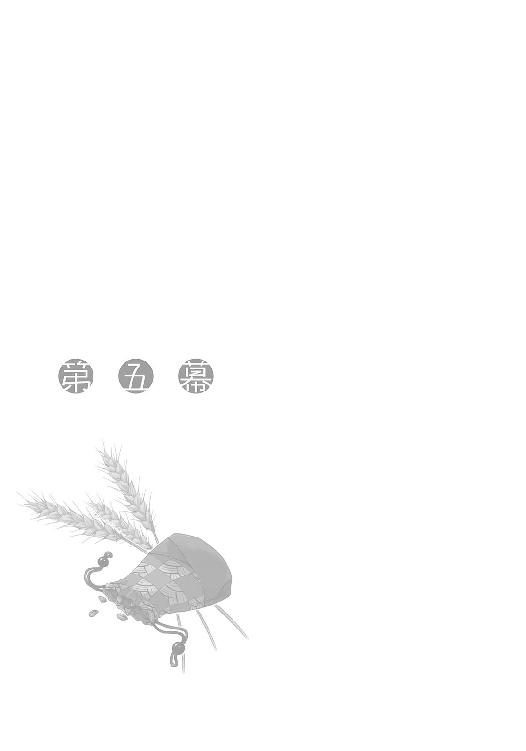
マールハイトはさすが異国の地に店を構える商人といった感じだった。
ロレンスの告白にしばらく声もないほど驚いたものの、すぐに我に返ると冷静に頭を巡らせ始めたようだ。メディオ商会に捕まったホロのことや、そんなホロをつれて歩いていたロレンスのことを責める言葉など一切ない。そんなことよりも如何に今の状況からミローネ商会を守り、また利益を出そうとするか、そちらのほうに意識の一切を向けているようだった。
「この手紙は紛れもない脅迫の手紙です。ロレンスさんのお連れの方を教会に連れていかれたくなければ、扉を閉じてじっとしていろと」
「トレニー銀貨の取引が終了するまでじっとしていろということでしょうが、しかし、それが終わった後に教会に行かないとも限りません」
「まったくそのとおりです。その上、我々はすでにトレニー銀貨にかなり投資しています。今さら後に引くことは大損害につながります。なぜなら、トレニー銀貨は必ず値下がるからです」
だとすると、こちらが取れる選択肢などほとんどない。
座して死を待つか、こちらから打って出るか。
前者を選択することは、あり得ない。
「こちらから打って出るしかないのではないでしょうか」
ロレンスの言葉に、マールハイトは大きく息を吸って、うなずいた。
「しかし、単純にお連れの方を取り戻せばいいというわけではありません。なぜなら、こちらでかくまうにしても、告発され、教会が教会法を振りかざして探索すれば、我々は従順な子羊にならざるを得ない。この町にいる限り隠しようがありません」
「町の外に連れて逃げるのは？」
「見渡す限りの大平原ですからね。よほど運が良くないと......。それに、町の外では捕まるともう二度と取り返しがつきませんし、別の町に連れていかれて告発されるかもしれない。そうなれば止めようもありません」
八方塞がりだ。このままメディオ商会の言うようにおとなしくしていても、きっと彼らが大儲けをした後にホロを教会に連れて行くだろう。異国の地から来た商店を壊滅に追い込んで損はない。商売敵は少ないほうがよいからだ。
しかし、こちらから打って出るにしても様々な困難が付きまとう。いや、困難などという生易しいものではない。今考え付く選択肢はどれも圧倒的に無謀なものばかりなのだ。
「何かよい手はないでしょうか」
マールハイトが独り言のように呟く。
「このままでは、わが商会の利益確保どころか、告発すら防げません」
ロレンスは針の筵に座らされているような心持ちでその言葉を聞くほかないが、黙って頭を垂れているだけで事態がよくなるのならいくらでも垂れる。商人達に騎士や貴族が持つプライドなどはない。儲かるためならいくらでも他人の靴の裏をなめる覚悟はできている。
だから、ロレンスもその言葉を嫌味や皮肉として聞くのではなく、単純な現状分析として受け止める。実際、マールハイトのその言葉は現状をこの上なく示すものなのだ。
「要は、こちらにも向こうに対抗できるカードがないと駄目、ということですね」
「そう言えます。しかし、例えばどれほど金を積んだとしても、向こうがトレニー銀貨を使って得る利益に比べたら微々たる物です。まず金では解決できない。選択肢としては、こちらが先にロレンスさんのお連れの方を、メディオ商会が手元に置いていると教会に告発することですが......そうすれば、ロレンスさんはお困りでしょうし、最悪ロレンスさんはこちらに不利な証言をするかもしれない」
「おそらく......するでしょう」
噓をついてもしょうがないので、ロレンスはそう言った。ホロを切り捨てることだけはできない。ただ、切り捨てればこの現状を打開できるのだけは確かだ。
マールハイトもそれがわかっているはずだ。いよいよとなれば、その線でロレンスを説得してくるのは目に見えている。そうなればロレンスはきっと首を縦に振りはしない。ホロと共に死を選ぶような気が自分でもした。
しかし、当然だがそれは回避したかった。
ロレンスは頭を巡らせてこの八方塞がりの状況を打開する妙案を見つけるしかなかった。
「思いつく限りでは」
ロレンスは口火を切った。
「向こうが告発する前に、こちらの商会がトレニー銀貨の交渉を終わらせ、その最大の利益を交渉のカードにする、というのがありますが」
ロレンスのその言葉に、マールハイトが目を見開く。ロレンスがホロを失いたくないように、マールハイト達ミローネ商会も、その最大の利益を失いたくはないのだ。
価値が下がるとわかっている銀貨を集めることで発生する魔法の利益。
その利益は千載一遇のチャンスにしか生まれない、一世一代ともいえる巨大なものだ。
しかし、だからこそカードとしては最強だ。メディオ商会も、それとならば迷わずホロを引き渡すだろう。
それでも、だからこそマールハイトは目を覆った。それを失うことは、我が子を失うに等しいのだ。
この魔法の取引の相手は、それほどに巨大な利益をもたらすことができる。
トレニー国国王。一国の王がその取引の相手なのだから。
「......このトレニー銀貨の最大の利益は国王から特権を引き出せることです。我々の調べで、王家の財産が実はかなり逼迫しているらしいということがわかっています。つまり、この取引が成功すれば、王家からかなりの特権を引き出せるはずなのです。それを放棄するのはさすがに......」
「さすがに特権丸ごとと引き換えでは釣り合わないでしょう」
「買い取らせるということですか？」
ロレンスはうなずく。ただ、これほど大きな取引は話に聞いたことはあっても実際にしたことなどない。だから実際にできるかどうかの自信はなかったのだが、自分の商売の延長で考えればできるはずなのだ。
「ミローネ商会をつぶすことと、王から引き出した特権を買い取ること、この二つを天秤にかけて、王から引き出した特権を買い取ることのほうが良いと判断できる程度までなら、メディオ商会から対価を引き出せるのではないでしょうか」
ほとんど思いつきのままに言っているようなものだが、これはこれで筋が通っているはずなのだ。
そもそも価値が下がるとわかっているトレニー銀貨を集めれば集めるほど儲かるというその構図は、ほかならぬトレニー銀貨を発行するトレニー国がその銀貨を買い取ってくれるから成り立つ構図なのだ。
そして、なぜトレニー国が銀貨を買い取ってくれるかといえば、トレニー国は現状出回っている貨幣を一旦鋳潰して、銀貨の純度を下げて枚数を増やして発行するためだ。当然、純度を下げれば下げるほど、同じ量の銀からより多くの銀貨を発行できるし、鋳潰す銀貨の数を増やせば増やすほど、たくさんの水増し銀貨を発行することができる。そうすれば、例えば元々十枚しかなかった貨幣が十三枚になるのだ。三枚分得することができる。
こういった芸当は当座の資金を生み出すものとしては最適だが、国の威信を下げることになるため長期的には不利益のほうがはるかに大きい。それでもあえてそれを行うということは、トレニー国の王家がのっぴきならぬほど金に困っているということだ。しかしそこで肝心の銀貨がなければその息継ぎのための金作りをすることができない。
メディオ商会は、そこを突いて大量のトレニー銀貨を持って交渉に臨もうとしたのだ。場合によっては市場に流通するすべての銀貨を回収して望むつもりだろう。
そして、王の面前で頭を垂れて、こう言うのだ。
この銀貨を適当な値段で買い取り、また、我々の望む特権を我々に下さるのならば、この銀貨をお売りいたしましょう、と。
一部の国を除いては、基本的に国王と名前がついていてもそれは他の貴族よりも財産や領地が多く、その上で上手に立ち回り王となる正当性を周囲に認めさせただけということに過ぎず、国王だからといって国の全領土を完全に支配しているわけではない。だから、王家が他の諸侯達と共同で管理している国家の財産を勝手に処分することはできない。
そのため、王家が持っている財産など他の貴族とあまり変わらない。特別なものがあるとすれば、それは国王の名の元に管理されることになる特殊な権力の数々だ。即ち、鉱山の採掘権、造幣権、関税設定権、市場管理権、王国都市の市長任命権など、実体を伴わないけれども使いようによっては金の生る木になるもの達だ。
おそらくメディオ商会は、トレニー国国王の管理するそれらの権力のうちのどれかが欲しかったのだろう。それが何かはわからないが、メディオ商会が企んでいた取引がうまくいけば商売にとって決定的ともいえる権利を引き出すことができる。
ロレンスがミローネ商会に持ち込んだのは、この取引を横取りするものだ。
すなわち、メディオ商会よりも多くの銀貨を回収し、より早く王に取引を持ちかける。
王の側としては、二つの商会の取引に応えるとなればそれぞれの望む特権がかち合ってしまうかもしれない。そうなると王の側としては困ってしまう。そのためこの取引に応じるとすればその取引先は一つだけだ。
ミローネ商会が先に取引を終わらせてしまえば、メディオ商会はもう特権を引き出せない。
その特権は、唯一無二だ。
メディオ商会としては、金で買えるのならいくらでも出したがるだろう。それはミローネ商会も同じだが、首根っこを押さえられている身としては、相当の対価がもらえればかまわないはずなのだ。
「しかし......こちらはこの支店を取り潰されるどころか我々が火刑台に送られるようなカードを向こうに握られています。向こうが対価の支払いに応じるでしょうか」
ここが肝なのだ。ロレンスは身を乗り出してうめくように言葉をつむぐ。
「火刑台に送られるような商会と王が取引したとわかれば、王はさぞ困るでしょう」
マールハイトはハッと気がついたようだった。教会は国境を越えた権力集団だ。大国の国王や大帝国の皇帝相手ならばまだしも、トレニー国の国王程度ならば教会の権力は絶大な効果を持つ。
それでなくてもどういう理由かはさておき金策に困っているらしい王なのだ。教会との揉めごとは極力避けたがるだろう。
「こちらが王と契約を交わせば、メディオ商会は下手にこちらを告発できません。下手に告発して我々が教会に目をつけられると、そんな商会と取引をした王も教会に目をつけられる。そうなればメディオ商会は王の恨みをどれほど買うかわからないからです」
「なるほど。しかしかといって向こうも黙って引き下がれない。残るは無理心中くらいのものですか」
「はい」
「そこで、こちらが相当の対価とロレンスさんのお連れの方の身柄を条件に、特権を引き渡す、と」
「はい」
マールハイトは顎を撫でながら感心したふうにうなずいて、視線をテーブルに落とす。ロレンスは次にマールハイトの言う言葉がわかっている。その言葉に返事をするため、今から深呼吸をし腹に力をこめる。これは唯一にして無二の、この状況を打開しつつこの商会とロレンスに利益をもたらす妙案なのだ。
ただ、それには困難が伴う。
しかし、それを渡りきれなければ、ロレンスはホロを切り捨てるか、共に教会の火にくべられるかを選ぶことになる。
そして、前者はない。絶対にない。
マールハイトが、顔を上げて言った。
「方法論としてはいいかもしれません。ですが、お気づきかと思いますが、これにはとても大きな困難が付きまとう」
「どうやってメディオ商会を出し抜くか、ですね」
マールハイトは顎に手を当ててうなずく。
ロレンスは頭の中で組み上げた言葉を放った。
「私が推測する限り、メディオ商会はまだあまり銀貨を集めていないと思うのです」
「その根拠は？」
「その根拠は、ホロを捕らえた時点で教会に行かなかったことです。もし向こうがすでに十分な銀貨を持っているのなら、その時点でこちらを取り潰すために教会に走ってもよかったはずです。しかし、それをせずにこちらの動きを封じるようにしたのは、教会の裁判が始まりこちらの商会の処分が決定するまでのわずかな間に、国王との取引に走られては困ると思ったからではないでしょうか。ですから、こうも言えるかもしれません。メディオ商会は、こちらの商会がすでに取引を開始するのに十分な量の銀貨を集めていると思っている。それは、端的に向こうの自信のなさの表れです」
マールハイトは目を閉じて聞き入っている。ロレンスは息継ぎをして、さらに続けた。
「それに、おそらくメディオ商会は表立ってトレニー銀貨を回収していると悟られたくないのだと思います。この取引は、明らかに王の弱みに付け込む取引です。交渉の矢面に立つ貴族からすれば、偶然手元に銀貨があったので売りにきた、という体裁を整えたほうが、いくらあからさまであっても今後のことを考えればよいはずです。それに、ゼーレンのような者が私達行商人にあのような取引を持ちかけてきたのは、私達行商人に銀貨を回収させ、頃合を見てそれを買い上げるためだと思います。値の下がり始めた銀貨をいつまでも持っていたいと思う商人はいません。多少ゼーレンの挙動に怪しいところがあったとしても、銀貨を買ってくれると言われれば皆喜んで売るでしょう。これらは私の推測に過ぎませんが、間違いないと思います。そして、そんな地道なことをしているくらいですから、派手な買い付けをしているとは思えません。大体、メディオ商会が派手な買い付けをしていれば、ミローネ商会だけではなく、別の商会の方達もトレニー銀貨を巡る不穏な動きに気がつくのでは」
マールハイトはゆっくりとうなずく。
「以上のことから、いけると思います」
それから、苦しげにうなって目を閉じた。
一見正しそうな推論だが、あくまでも推論だ。単純にメディオ商会がミローネ商会の本店から恨みを買いたくがないためにホロを教会に連れていけないだけかもしれない。
しかし、なんにせよ何らかのためらいがあるはずなのだ。
せっかくそのためらいがあるのだ。そこを利用しない手はない。
「それでは仮に向こうがまだあまり準備が整っていない状況だということにしましょう。その場合、ロレンスさんはどのように動こうと思っているのですか？」
ロレンスはその言葉を正面から受け取った。ここで自信のなさを見せてはならない。
深呼吸をして、大きく息を吐く。
それから、はっきりと言った。
「ホロを探し出して奪い取り、こちらが交渉を終えるまで逃げ続けます」
一瞬、マールハイトが息を吞む。
「そんな、無茶な」
「逃げ切ることは不可能だと思いますが、多少の時間なら稼げると思います。そして、その多少の時間の間に銀貨を集めまくって交渉に臨んでください」
「不可能だ」
「なら、ホロをこちらから告発しますか？ 私はミローネ商会が不利になる証言をしますよ」
紛うことなき脅し文句だ。
マールハイトはそんな裏切りに似た脅し文句を言うロレンスに、泣きそうな顔を向けて口をパクパクさせた。
しかし、どの道ミローネ商会から告発をしてもロレンスとホロと売買契約を結んだことは事実なのだ。教会裁判で無罪を勝ち取るのは四分六分といった感じで分は悪い。仮に無罪を勝ち取ってもかなり大きなペナルティを科されるだろう。その上、ロレンスがミローネ商会に不利な証言をすることは目に見えている。
マールハイトは悩む。悩み切っている。
だからロレンスはそこを押した。
「ミローネ商会の協力を得られれば一日二日は逃げられるでしょう。なにせ、一緒に逃げる相手は狼の化身なのです。逃げるためだけにその能力を使えば人間など足元にも及びません」
もちろんそんなことロレンスにはわからないが、説得力はあると思った。
「う......む......」
「今回捕まったのは私をここに来させるため、わざと人目に付くように逃げたからです。目的地もなくただ逃げればいいとなれば絶対に捕まりはしなかった。お尋ねします。どれくらい時間があれば、王と交渉できるくらいの銀貨が集まりそうですか」
「......ど、どれくらい、ですか」
ロレンスの迫力に押され気味になりつつも、頭の中はよく巡っているようだった。マールハイトの視線がすぐに宙を泳ぎ、思考に没頭したのがわかった。
ロレンスは、ホロを上手く奪回でき、またミローネ商会が協力してくれるならば、丸二日は逃げ切れるものと踏んでいる。
パッツィオの町は古い。建物の数は多く、路地は入り組んでいる。隠れようと思えば隠れるところは山ほどある。
メディオ商会だけが相手であれば逃げ切れる。ロレンスはそう確信している。
そして、マールハイトが目を開いた。
「今すぐトレニー城に馬を走らせれば、上手くいって日没頃に着きます。交渉を即決で行ったとして、帰って来るのは夜明け頃。交渉が長引けばそれだけ遅くなります」
「今すぐ交渉の馬を走らせるなんてことができるのですか？ まだ手元の金額もわかっていないのに」
「銀貨のある場所というのは限られています。ですから我々が手に入れられる銀貨の量というのはおおよそ想像がつきます。その限度いっぱいに交渉を持ち込んで、実際に銀貨のやり取りを行うその日までに用意できれば問題ありません」
皮算用で交渉しても、決済の日に貨幣がそろっていれば問題ない。
確かにそれはそうだが王を相手取っての交渉で、そんな乱暴な発想ができるのはやはり大商会の人間だからだろうか。それに、王との交渉の時は、少なくとも王が自らの力でもっと安価に銀貨を回収できはしないだろうかと考えるのを諦めさせるくらいの銀貨の枚数を言わなければならない。それを考えるとあまりにも大胆すぎる皮算用だが、そんな乱暴な発想が出てくるということは、マールハイトがその気だからだとロレンスは思った。
「しかし、本当ならメディオ商会の後ろにいる人間が誰かを把握してから商談に臨みたかった。後ろにいる者が誰かわかれば、一斉に資金繰りの経路も見えてきます。そこを横取りもできますし、概算もできる。ただ、今はそれを考える時間も推測する時間もその手がかりを得る時間もない」
ロレンスは無駄だとわかりつつも頭を働かせたが、一瞬で思いつくはずもない。無力感を吐露するようにため息をつく。
ただ、今は前だけを見なければならない。ロレンスはぐっと背筋を伸ばしてマールハイトを見た。
「しかし、国王相手に即決の交渉ができますか？」
交渉が即決だろうが長引こうがロレンスは逃げなければならない。その事実に変わりはないが、やはり心の持ちようが違う。
マールハイトは、小さく咳払いをすると鋭く言い放ったのだった。
「ミローネ商会がその気になれば、どのような商談も即決以外にあり得ません」
思わず苦笑いのロレンスだが、今はそんなマールハイトの言葉が頼もしい。
ロレンスは右手を差し出しながら、今日の天気を尋ねるようにマールハイトに質問した。
「それで、ホロの居場所は摑めているんですよね？」
「我々はミローネ商会です」
この商会を選んでよかった、とロレンスはマールハイトと握手をしながら胸中で呟いたのだった。
「商会の者が闇討ちされたり店に火をつけられたりといったことは日常茶飯事なんですよ。だから我々はその町の誰よりもその町に詳しくなる。非常用の対策も万全です。例え大騎士団がこの町を包囲したとしても、我々だけは生き残ってみせる。ただ、我々にもライバルがいる」
「教会ですか」
「そうです。彼らも様々な国の様々な町に行く。特に前線で布教活動を行うような人達は我々と同じかそれ以上にそういったことに長けています。ご存知でしょう？」
「確かに、彼らは神出鬼没です」
「ですから、教会が本腰を入れて捜索に乗り出したらその時は下手に逃げずに閉じこもりましょう。もっとも、そうなる前に決着をつけるつもりですが。それと、合言葉はピレオン、ヌマイ、です」
「二大金貨ですか」
「縁起が良いでしょう？ それではご無事と成功を祈っていますよ」
「わかりました。必ず期待にお応えします」
ロレンスとマールハイトはもう一度握手をしてから馬車に乗り込んだ。どこにでもあるような目立たない造りの馬車だ。ただ、屋根付きなので外から中に乗っている者の顔は見えないが、それはここにホロを乗せて逃げるためではない。ロレンスが無事ホロのいる元へたどり着くためだ。しかも、それはロレンスを運ぶためというよりも、ロレンスがどこに行ったかわからなくするためのものだ。
ミローネ商会の人間が昨夜の捕り物騒ぎを聞きつけて、それが一体何の騒ぎであるのかも知らずに彼らの後をつけ、ホロの居場所を特定しているように、ミローネ商会の支店もメディオ商会の連中に監視されているはずだ。念には念を入れても入れすぎることはない。
商人達は面と向かっても化かし合うのだ。目に見えない場所では恐ろしいほどに化かし合う。
ロレンスは一緒に乗り込んだ商会の者とともに床板をはがし、ゆっくりと流れていく石畳を見つめながら確認した。
「地下に入ったら右側の壁に手をつけたまま前進、ですね」
「行き止まりが目的地です。奪回が成功すれば上からの扉が開きます。そこでラッヘと言われたらお供の者が来るのを待ってください。ペローソと言われたら、ただちにお二人で予定の通路を逃げてください」
「好景気に不景気ですか」
「わかりやすいでしょう」
ロレンスは苦笑して、わかったとうなずく。ミローネ商会はこういう合言葉が好きなようだった。
「それでは、そろそろですね」
商会の者がそう言った直後、御者台に座る御者がこつこつと壁を打ち鳴らした。停止の合図だ。
その直後、馬がいなないて馬車が急停止し、誰かを怒鳴りつける御者の声が響く。ロレンスはすぐさま馬車の床に開けた穴から下に降り、石畳の一枚をはがすと横にずらす。その下にあるのは暗い穴だ。間を空けずに飛び込み、ばしゃん、と足元で水しぶきがあがったがなんとか転ばずに着地した。上からもそれを確認していたのか、即座に石畳が元に戻されて地下道に完全な暗闇が訪れる。
その数瞬後には、馬車が何事もなく走り始める音がした。
「こんな準備までしてるとはな」
ロレンスは半ばあきれ気味にそう言って、右側の壁に手を当てるとゆっくりと歩き出した。
昔の地下水道跡地で、市場までの用水路が引かれてからは使われなくなっている。ロレンスが知っているのはそこまでだが、ミローネ商会はここを完璧に把握し、勝手に拡張していくつかの建物を地下でつなげてしまっているらしい。
こういったことは教会も得意だ。地下に墓を作ると言っては町の下に独自の通路を構築しているという。用途は異端の諜報だったり脱税だったりと色々だ。教会は権力を持つ分、敵も多い。彼らの逃げ道にもなっている。
教会の総本山や、ミローネ商会のような大商会の本店が置かれる町というのは悪魔や化け物の住む場所となんら変わらないという。まるでクモの巣の上で生活するようだと、仲間の行商人が言っていた。
今はそれが恐ろしく実感できる。
真っ暗でじめじめとしている地下道だが、足元は下手な路地よりもしっかりしているのをみても手入れが行き届いているのがよくわかる。
ただ、だからこそ安心感もあった。ミローネ商会は、強い。
「ここか」
足元の水の反響音から行き止まりに着いたと判断して、少し手を前に伸ばすとすぐに壁に当たった。
月のない山道で野犬に襲われたりが当たり前の行商人だ。いざとなればここを走ってもすぐにどこが壁かわかる自信がロレンスにはあった。
ここの右上はメディオ商会に縁のある雑貨商の住居兼倉庫になっているらしく、ホロはその倉庫にいるとのことだった。真上はミローネ商会が有事の際のために身代わりを立てて借りている住居で、内緒でとなりの建物との間に通路を勝手に作ってしまっているらしい。まったくぞっとするような周到性だが、異国の地で店舗を構えて商売をするというのはそういうことなのかもしれない。ロレンスも、肝に銘じておこうと呟いたのだった。
そんなことを考えている間に、どこか遠くのほうで鐘の鳴る音がした。市場開放の鐘だ。これを合図に突入すると言っていたから、今頃上は修羅場になっているかもしれない。市場開放の鐘から仕事の始まりを告げる鐘の間に奪還できなければ状況が厳しくなる。上の雑貨商に取引相手などがやってくるからだ。
メディオ商会の子飼いの雑貨商なのだろうが、そこに大事な人質がいようがいまいが決済日はやってくる。営業だけはやめられないはずだった。
問題はホロを見張る者達の数だ。手数を増やせばミローネ商会に一目瞭然でばれるし、あまり少なくすると万が一の場合に頼りないと考えるだろう。ロレンスはできればホロを隠すことを第一に考えた人数配置であって欲しいと願うばかりだ。
なぜなら、見張りの数が多ければ戦いは必至となる。突入する者達の手に持たれるのが目隠しと縄ではなく、刃物と鈍器になりかねないからだ。
そうなれば、ただでさえややこしい問題がさらにややこしくなる。なるべくそれは避けて欲しかった。
そんなことを思ってどれくらい待っていただろうか。初めのうちは冷静だったものの、気がつくと足元の水が音を立てるほどに震えていた。それがこれ以上ないほどに自分の不安を表しているようで、必死に足が震えるのを止めようとしたがうまくいかない。
何度か屈伸をしてみても、動悸が激しくなって余計に自分が不安がっているようで駄目だった。
蓋が開くのはまだかと上を見る。
そして、ロレンスは突然背筋が凍りついた。
まさか、場所を間違えたのでは。
「そ、んなまさか」
ロレンスがそう思ってここが行き止まりであることを確かめようとした瞬間だった。
「ラッヘ」
そんな声が真上から聞こえてきた。遅れてめきめきという床板をはがす音。さらに「ラッヘ」と声が聞こえ、ロレンスは「ヌマイ」と答える。「ピレオン」という返事は、蓋が外されると明かりと共にロレンスの元に届いたのだった。
「ホロ！」
その顔を見てロレンスは思わず叫んでしまっていた。
しかし、ホロはそんなロレンスの声など聞こえなかったかのように顔を上げて、上にいる他の者に何ごとかを言っていた。それからもう一度穴の中のロレンスを見下ろして、短く言ったのだった。
「ぬしがどかんとわっちが下りられん」
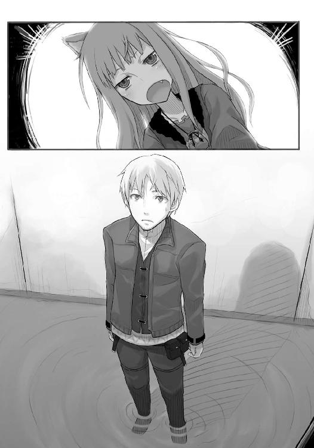
今までどおりといえば今までどおりの様子のホロのそんな言葉だったが、ロレンスはその言葉を聞いて、自分がホロの喜ぶ顔と弾んだ口調を期待していたことに気がついた。
ホロの言うとおりに穴の下から体をどけ、ホロが下りてくるのを待ったが、その時に胸にあったのはホロに会えた喜びより、そんな声が聞けなかった失望感だった。
もちろん、それは完全にロレンスの身勝手であるとわかっていたので何を言えるわけでもなかったが、地下道に下り立つとロレンスのことなど気にしていないかのように上から下ろされる荷物を受け取っているホロを見ると、ロレンスの胸の中のざわめきは大きくなるばかりだった。
「なにぼさっとしとる。これ、ぬしの分。ちゃっちゃと持って、奥へ」
「む、う、あ、ああ」
押し付けられるように荷物を受け取ると、押されるように通路の奥へと進んでいく。押し付けられた荷物がガチャリガチャリと音を立てる。押し込み強盗に思わせるために、金目の物を奪ってきたようだった。直後に、穴からもう一人下りてきて、蓋が閉じられる。再び真っ暗になったが、それは出発の合図だ。ロレンスはホロに声もかけられず歩き出した。
この次は突き当たりを右に曲がり、左手の壁に手を当て突き当たるまで前進だ。いったん地上に出て、そこに待機しているはずの馬車に乗って今度は別の地下道に入る。
誰も一言も口を聞かず地下道を歩き、やがて行き止まりに着いた。
ロレンスは言われていたとおりに備え付けの梯子を上り天井をぼこぼこと三回叩く。
手違いで待機できていなかったら別のルートだったな、と思う間もなく天井にぽっかりと穴が開く。もう、すぐそこは馬車の中だった。
「ピレオン」「ヌマイ」、というやり取りの後、ロレンスは馬車の中に這い上がった。
「うまくいっているようで──」
馬車の中にいた商会の者が喋りながらホロを引っ張り上げると、むき出しの狼の耳にさすがにぎょっとしたようだった。
「商売には驚きがつきものです」
しかし、そう言って笑うとさっさと石畳を元に戻して蓋をしたのだった。
「まだもう一人中にいるが」
「いえ、彼は梯子を片づけて別の場所から地上に出ます。メディオのやつらの情報を仲間に伝えてから、町を離れます」
恐ろしいほどの手際のよさは、日頃から丹念に対策を練っているからだろう。馬車の床板もはめ終えると、「それでは御武運を」と言い残して彼もホロとロレンスが持ってきた荷物を持って馬車から降りた。御者が合図を出して馬車が走り始めたのはその直後で、今のところ何もかも予定通りのようだった。
目の前の、ホロの反応を別にしては。
「無事で、なによりだ」
詰まらずに言えたのは上出来だ。ただ、それだけで精一杯で、向かい側の席に座って首に巻いていた布を広げてフードのようにかぶっているホロにそれ以上何も言うことができなかった。
だから返事が帰ってきたのは、ホロがフードを不機嫌な様子でかぶりなおして神経質そうに調整し終わってからだった。
「無事でなにより、じゃと？」
「ああ」、と言おうとした返事は喉の奥に吞み込まれた。ホロが今にも嚙み付きそうな顔でフードの下からロレンスのほうを睨んでいたからだ。
まさか、無事ではなかったのか。
「わっちの名を言ってみろ」
しかし、ホロの言葉はそんなもので、ロレンスが心配していた類のものではなかった。それでも体格差では倍近いロレンスがたじろぐほどの迫力だ。ロレンスはわけがわからなかったが、思いつくままに答える。
「ホロ......だろう」
「賢狼ホロじゃ」
ウグルルルル、と喉の奥から聞こえてきそうな剣幕だが、何に怒っているのかわからない。ホロが謝れと言うのならいくらでも謝る用意はできている。なにせホロはロレンスの身代わりになってくれたのだ。
それとも、やはり口に出せないようなことをされたのだろうか。
「わっちがこれまで生きてきた中で、わっちに恥をかかせた者の名をわっちはすべて言うことができる。そこに新しい名前を付け加えんといかん。つまりぬしじゃ！」
やはり、そういう類のことをされたのだろうか。ロレンスはそう思ったが目の前のホロは暴漢や山賊に襲われた村で見てきた娘達とは違った怒り方をしているように見える。それに、下手なことを言えば余計に怒りに油を注ぐかもしれない。
そのため無言の時間が続き、そのうちホロはロレンスが黙っていること自体に腹が立ってきたのか、座席から立ち上がると詰め寄ってきた。
わなわなと握りしめられている拳は真っ白になっている。
逃げ場などない。すぐにホロがロレンスの目の前に立つ。
ちょうど顔の高さが同じせいで、ホロの視線がこれ以上ないほどにまっすぐロレンスの目を貫いてくる。ホロの小さい握り拳が開き、力の限りにロレンスの胸倉を摑む。力の程度は見た目どおりのようで、たいした握力でもなかったが振りほどこうとは思わなかった。
長いまつげだ。そんなことをまた、頭のどこかで思った直後だった。
「わっちはぬしに言ったよな。ぬしが迎えに来てくりゃれと」
ロレンスはすぐにうなずく。
「わっちはな......わっちはてっっっっきりぬしが来たものだとばかり思って......うう......思い出すだけでも忌々しい！」
その瞬間、ロレンスは夢から覚めたような気がした。
「ぬしも雄なら牙を研いで戦いに赴くのが当たり前じゃろう！ あんな穴ぼこの中にいおって、そのせいで、そのせいでわっちはいらぬ恥を──」
「無事だったんだろう？」
最後まで言わせずロレンスがそう言うと、ホロは思い切り不機嫌そうに口をゆがめてそっぽを向く。
それから、しばらくためらった後に苦いものを飲み下すようにうなずいた。
ホロは目隠しでもさせられていたのかもしれない。そこに助けに入ってきたミローネ商会の人間を、ロレンスと勘違いして何か言ったのかもしれない。ただ、そのことをホロがいらぬ恥をかいたといって怒るのは、それくらいのことを言ったからだろう。
ロレンスはそれが単純に嬉しかった。自分が行けば、ホロはきっと自分が期待していた表情を見せてくれたのだとわかったからだ。
ロレンスは自分の胸倉を摑むホロの細い両腕をゆっくりと摑んで、少しだけ力を入れる。
ホロはすねるように少しだけ抵抗したが、あっけなく力を抜いた。フードの上からでもわかるくらいにいきり立っていた狼の両耳もだんだんとしおれていった。
怒りにゆがんでいた顔が、すねたそれに変わっていく。
世界を股にかけてどれほど金を積んだとしても手に入らないものがそこにはあった。
「無事でよかった」
ロレンスがそう言うと、ホロはつい数瞬前まで怒りに見開いていた目をゆっくりと伏せ、小さくうなずいた。ただ、口は少し尖ったままだ。
「ぬしがその麦を持っとる限りわっちは死にはせんがな」
ロレンスの手を振り払うこともなく、ホロはロレンスの服の胸ポケットを突いてそう言った。
「娘なら、死なずともそれに劣らない責め苦はあるだろう」
ロレンスがホロの手を引っ張ると、ホロはゆっくりと身を寄せてきてロレンスの肩の上に顎を乗せた。ホロの体の軽さが、重い麦の詰まった麻袋よりも強烈に感じられた。
それから、ホロがいたずらっぽく囁く。
「うふ。わっちは可愛いからの。人の雄もいちころじゃ。ただの、わっちの相手が務まるような雄は人にはおらなんだ」
ホロはロレンスから体を離すと、もういつものニヤニヤとした笑みを浮かべていたのだった。
「わっちに触れればナニがもげるぞと言ったら皆真っ青になって怯えての。うふふふ」
そう言って笑うと鋭い二本の牙が淡い桃色の唇の下にきらめいた。確かに、そう言われれば皆怯むかもしれない。
「ただの、例外がおった」
突然、ホロは笑みを消すと無表情になった。それが今までのものとは違う静かな怒りであると、なんとなくロレンスにはわかった。
「わっちを捕まえた者の中にな、誰がおったと思う？」
忌々しげな、という表現がぴったりかもしれない。そんな怒った顔に唇の下から覗く牙は強烈に映る。ロレンスは思わずホロの細い手首から手を離していた。
「誰が、いたんだ？」
ホロがそれほど怒るような人物とは誰だろうか。昔の知り合いでもいたのだろうか。
ロレンスがそんなことを思っていると、ホロは鼻の頭にしわを寄せながら言ったのだった。
「ヤレイじゃ。知っとるじゃろう」
「ま」
さか、とは最後まで言えなかった。その瞬間、ロレンスは頭の中で別のことが炸裂していたからだ。
「そうか！ メディオ商会の後ろにいるのはエーレンドット伯爵か！」
これからいざ思うところを思う存分怒りのままにぶちまけようと準備していたらしいホロは、ロレンスのそんな叫び声にあっけにとられて目を点にしている。
「麦の大産地ならば麦の取引の際に好きな銀貨で代金を支払わせることができる。そのうえ麦に関する様々な関税の撤廃はメディオ商会と伯爵、それに村の人間達全員にとって天恵だ。そうだ、それで同時に理解できる。なぜお前が狼であることを知っている人間がいたのかということが！」
ホロはきょとんとしたままそんなロレンスの様子を見ていたが、ロレンスはそんなホロをお構いなしに脇にのけると御者台の連絡窓に飛びついた。小さく木の窓を開くと御者の一人が耳を傾けた。
「聞こえていましたか。今の話」
「ええ、聞こえました」
「メディオ商会の後ろについているのはエーレンドット伯爵です。伯爵領で麦の取引をしている商人が銀貨の大口回収先です。これをマールハイト氏に伝えてください」
「お安い御用で」
そう言って一人が早速馬車から降り、走っていった。
すでにトレニー城に交渉のための早馬が出ているだろうが、交渉が長引きそうであれば追加の条件を提示できる。メディオ商会が銀貨をどこから回収しようともくろんでいたかわかれば、ミローネ商会の看板と資金力を持ってすれば横取りも不可能ではないからだ。
しかし、これをもっと早くに気がついていればホロはさらわれずに済んだかもしれない。そうすればもっとこの取引はスムーズにいっていたのだ。
それを思うと悔しかったが、今となってはどうにもならない。今気がついただけでも良しとするところだった。
「......話が見えん」
椅子に座りなおし、腕組みをしてそんなことをぐるぐる頭の中で呟いていたら、さっきとは座る位置が逆になったホロが不機嫌そうに言った。それでようやくロレンスは思い出す。ホロの話の腰を思い切り折ってしまったことを。
「説明すると長くなる。ただ、お前の情報から何もかもが見えたってことだ」
「ふうん」
ホロのことだから少し頭を巡らせればたちどころに理解できるのだろうが、そんなふうにしようとするそぶりもない。
興味なさそうにうなずいて、目を閉じてしまった。
やはり、話の腰を折られたことが不愉快だったようだ。
ただ、そんなことですねる大人気ないところがなんとも可愛かったが、ロレンスは自分のそんな浅はかな気持ちを戒める。
話の腰を折られた憂さを晴らすための、ホロの罠かもしれない、と。
「いや、話の腰を折ったのは悪かった」
ただ、それだけは素直に謝った。
ホロはロレンスの言葉を聞くとちらりと左目を薄く開いて見やったが、「別に」と小さく言っただけだった。
ロレンスはそれでも怯まずに口を開く。ホロは子供っぽいか老獪かの両極端のようだった。
「ヤレイは本当なら収穫祭の儀式のために穀物庫に閉じこもってるはずなんだが、町にいるということはあいつも今回の取引に一枚嚙んでいるんだな。あいつなら麦の取引に来る商人達に面識があるし、村長も取引を任せている。そして、麦の取引は収穫祭の後が最も多い」
ホロは目を閉じて少し考えるふうにすると、間を空けて両目を開けた。いくらか機嫌を直してくれたようだった。
「わっちの名はあの若者、ゼーレンから聞いたようじゃ。ヤレイのやつ、村じゃ着ないような服を着て、実に偉そうじゃった」
「メディオ商会に深く関わっているのか。それで、話したのか？」
「わずかばかりの」
そう言ってからついたため息は怒気を孕んだものだ。ヤレイとの会話を思い出して再び腹が立ったのかもしれない。
しかし、何を言われたのだろうかとロレンスは少し考える。確かにホロは村の連中に怒りはしていたが、村を出ると決めた以上、ホロがあれ以上怒るとも思えなかった。
そんなことを考えていると、ホロが口を開いた。
「わっちはあそこの土地に居着いて何年経つかわからん。尻尾の毛の数ほどおったかもしれん」
ばさり、と外套の下で尻尾が音を立てる。
「わっちは賢狼ホロじゃ。豊作の年がなるべく多く出るようにと、時には土地を休ませるため不作にしたりもした。それでもこのわっちの管理じゃ、他の土地よりかはよほど良い麦の産地になったはずじゃ」
それを聞くのは二度目だが、ロレンスは素直にうなずいて次を促す。
「確かに村の者達はわっちを豊作の神として扱ったが、どちらかといえば敬うよりも拘束のほうが近い。最後の麦の束を刈り取った者は皆に捕まえられるじゃろ。そして、捕まった者は縄でぐるぐるまきにされる」
「それから穀物庫にご馳走と来年用の種籾と共に一週間入れられるらしいな」
「豚やカモは確かに旨かったがの」
そんな感想は少し面白い。穀物庫に入れられた者が食べた記憶のないものまで消えている、というのはどうやら事実らしいのだが、その犯人が目の前にいるというのは面白いことだ。
どこか漠然としたその話に対する恐れが、豚や鴨肉をがっついている狼姿のホロに変わる。
「しかし、の」
そんな強めの声がでて、ロレンスは身構える。ホロの口から、怒りの核心が飛び出してきた。
「ヤレイはわっちになんて言ったと思う」
ホロは下唇を嚙んで少し言葉につまり、目尻を手のひらでこすった。
「やつはな、わっちの名をゼーレンから聞いただけでもしやと思ったそうじゃ。わっちは、わっちはな、情けないが、それが嬉しかった......」
しかし、そう言うホロはうつむいてぽろぽろと涙をこぼす。
「じゃが、やつはこう言ったんじゃ。私らがあなたのご機嫌伺いをする時代は終わった。あなたの気まぐれにびくびくする必要はもう、ない。教会にも目をつけられていたところだから......あなたを教会に突き出して我々は古い時代から決別する、とな！」
エーレンドット伯爵が自然学者達と交流を持ち、新しい農法を次々導入して収穫高を上げているというのは知っている。
ただ、どれだけ拝んで祈ってもいざという時に無慈悲で役立たずな神や精霊を廃し、自分達の力で何ごとも成し遂げられるというのならそれはとても魅力的なことだ。その上、新しい農法を導入したり、作業を効率よくすることで収穫高が上がるのなら、豊作の神や大地の精霊達は豊作や不作を気まぐれで操っている、と思わなくもない。
ロレンスだって、時の運を操る神は気まぐれで人の運命を弄んでいると思っている。
しかし、目の前にいるホロは違うようだった。
パスロエの村にいた理由は大昔に村人と仲良くなり、またその友人から村の麦畑のことを頼まれたからだったと言うし、少なくともホロはなるべく豊作になるようにと考えていたようだ。
なのに何百年もその土地にいて、だんだんと自分の存在が周りに認められなくなっていき、最後に一方的な決別の言葉を聞くというのはどういう気持ちなのだろうか。
ホロの目からぼろぼろ涙が零れ落ちる。悔しいと悲しいが一緒くたになったような顔だった。
ホロは、一人は嫌だといった。
神が自らを崇めるようにと人に強いるとするのであれば、やはりそれは寂しいからなのかもしれない。
そんな大それたことを思ったくらいだから、ホロの涙を拭ってやるくらいなんでもなかった。
「まあ、ものは考えようだ。北に帰るためにはどのみち土地を去らなきゃならなかった。後ろ髪を引いてくれないなら後ろ足で砂をかけてやればいい。そっちのほうが思い切りもいいだろう。ただし、ただじゃ出て行かない」
どうにか泣き止んだものの洟をぐずぐず言わせているホロの頭を撫でてから、ロレンスは可能な限り不適に笑って言ったのだった。
「俺、いや、俺達は商人だ。儲かればなんでもいい。笑うのは金が入ってから、泣くのは破産してからだ。そして、俺達は笑うんだ」
俺達、というのにはもちろん力をこめて言ってやった。
ホロは一瞬ロレンスのほうを見てから、一度うつむいてまたぽろぽろと涙をこぼす。
そして、ホロはうつむいたままうなずいてから、顔を上げた。ロレンスが再度涙を拭ってやると、ホロは深呼吸をした。まだ滲んでいた涙は自分の手で乱暴に拭う。
それから数瞬後には、涙で湿った目とまつげが、凜とした光に輝いていた。
「......ああ、すっとした」
まだ涙の残りを片手で拭いながら、ホロは照れ隠しするように笑ってロレンスの胸を握り拳で軽く突いた。
「ここ数百年まともに会話しとらんのじゃ。喜怒哀楽に脆くなっとる。これでぬしの前で二度泣いたがな、ぬしの前でなくても泣いたじゃろう。何が言いたいかわかるかや」
ロレンスは両手を上げて肩をすくめた。
「勘違いするな、と」
「うむ」
ただ、ホロは楽しそうにぐりぐりとロレンスの胸をついている。
そんなホロのことがたまらなく愛しくて、だからロレンスは笑いながら言ってやったのだった。
「俺も稼ぎのために相手してやってるんだからな。ミローネ商会が話を纏めてくれるまで逃げることが俺らの仕事だ。そんな最中にめそめそされると足手まといだ。だから俺の前で泣いてるのがお前じゃなくても、俺は──」
と、その先のロレンスの言葉は出なかった。
ホロが傷ついたような顔をして、ロレンスのほうを見つめていたからだ。
「......お前、ずるくないか」
「ん、雌の特権じゃろ」
いけしゃあしゃあと言うので、ロレンスは軽くホロの頭を小突いたのだった。
そして、そんなやり取りを見計らっていたかのように御者台との連絡窓が開いて、その向こうに少し苦笑を浮かべた御者の口元が見えた。
「到着しましたよ。そちらもひと段落つきましたかな？」
「ん、万全だ」
わざと気負ってそう答え、ロレンスは馬車の床板を外す。横ではホロがくつくつと笑っていた。
「やはり儲け話を持ってくる人達というのはちょっと違いますな」
「この耳のことかや？」
ホロがいたずらっぽくそう言ったが、御者はしてやられたといったふうに笑う。
「また行商人に戻ろうかなと思いましたよ。今の貴方達を見ててね」
「やめたほうがいい」
石畳を外し地下道の中を確認して、いったん馬車に上がるとホロを先に行かせてからロレンスは言ったのだった。
「あいつみたいなのを拾う羽目になる」
「なに、荷馬車の御者台は一人じゃ広いです。願ったりかなったりですよ」
口に浮かんだのが苦笑いだったのは、皆似たり寄ったりなことを思ったりしているようだと思ったからだ。
しかし、ロレンスはそのまま何も言わず地下道の中に飛び込んだ。何を言っても気恥ずかしい言葉しか出てこなくなりそうだったし、何より、地下道の中にはホロがいたからだ。
「わっちもぬしに拾われて飛んだ羽目じゃ」
ごごん、と御者が客車に入って石畳の蓋を閉じてから、ホロが暗闇の中でそう言った。
石畳の蓋の向こうから小さく聞こえる馬のいななきを聞きながら、ロレンスはどう切り替えそうかとあれこれ考えたが、何をどう言っても結局はホロが優位に立ちそうだったので、素直に降参した。
「やっぱりお前ずるいぞ」
「そんなわっちも可愛いじゃろ」
当たり前のようにそう言うのだ。ロレンスはこれをどう切り返せばいいのだろうか。
いや、うまく切り返そうと思うからホロの策にはまるのだ。
ロレンスはそう思い、最も意外そうな選択肢を選んだ。ホロの動揺を誘い、そこを笑ってやろうと思った。
ロレンスは少し咳払いをする。
それから、横を歩くホロとは逆を向いて、小さくぼそぼそと照れるように言ったのだった。
「まあ......可愛いとは......思うがな」
まさかこうくるとは思うまい。
ロレンスは暗闇の中、口元がにやつくのをなんとか抑えたが、案の定ホロは言葉に詰まったようだ。
さて、ここで痛快な止めを刺そう。
ロレンスは、ホロのほうに向きなおろうとしたその瞬間、手の中にふと柔らかい感触が滑り込んできたことに気がついた。
それがホロの小さい手だと理解したのは、一瞬頭が空白になってからだ。
「......嬉しい」
はにかむような、甘えるような、そんな少女っぽい口調の小さい言葉にロレンスは動揺せざるを得ない。その上、ホロはロレンスの手を握る力をほんの少し強くするのだ。それこそ、嬉しい、と言ったことを恥ずかしがるように。
だから、結局止めを刺したのはホロだった。
「ぬしもほんとに可愛い男の子じゃの」
ちょっと呆れたように言うところがまた余計に腹が立った。言った本人であるホロにではなく、そう言わせる隙を作ってしまった自分に対し。
ただ、それでホロの手を振りほどこうと思わない自分が少し情けなくもあったし、ホロが手を離さないことが嬉しくもあった。
それでもロレンスはやっぱり胸中で呟いた。
ずるい、と。
地下道は静かだ。
ホロの忍び笑いが、くつくつと響いていたのだった。
ぴたり、とホロの足音が止まったのは、足元で鼠が驚きの声を上げて走り去ったからではないだろう。
ロレンスは粘りつくような闇の中、ホロのほうを向く。結局いまだに手をつないでいるので方向だけはばっちりだ。
「どうした？」
「空気がかすかに震えとらんか？」
今、自分達が町のどの辺にいるのかをロレンスは把握できていなかったが、先ほどから綺麗な水の匂いがしているので市場の近くだろう。さすがに町の横を流れる川から離れているということだけはわかるからだ。
そして、だとすれば真上をたくさんの人や荷馬車が行き交っていることも楽に想像できる。空気が震えるのも当たり前だろう。
「上じゃないのか？」
「いや......」
ホロが言いながらきょろきょろしているのがわかる。ただ、通路は前か後ろにしかない。
「髭さえあればもっとはっきりするんじゃが......」
「気のせいじゃないのか？」
「いや......する。音がする。これは音じゃ。水？ 水がはねる音......」
ロレンスは目を見開いて直感した。追っ手だ。
「前からじゃ。これは、まずい、下がりんす」
ロレンスはホロが言う前に踵を返し走り出していた。ホロも慌ててついてくる。
「ここは一本道なのかや」
「俺達が進もうとしていた先は一本道だ。戻る道には脇道が一本ある。その先は複雑な迷路だ」
「さすがのわっちもここで迷わない自信はないのう......う？」
ホロは言って立ち止まった。急に立ち止まるのでつないでいた手が離れ、ロレンスはたたらを踏む。慌てて戻ると、ホロは後ろを向いているようだった。
「ぬし、耳をふさいどれ」
「どうした」
「走っても追いつかれる。向こう、犬を放ちおった」
一本道で訓練された犬に追われたら万事休すだ。ホロがこの暗闇の中でかなり視界が利いているように、犬も鼻と耳を使い的確に襲ってくるだろう。こちらには犬と戦えるような武器らしい武器もない。いつも携帯している銀の短剣くらいだ。
しかし、こちらにも犬と似たような者がいる。賢狼の、ホロだ。
「ふふん。頭の悪そうな鳴き声じゃ」
ホロがそんなふうに言った直後、確かにロレンスの耳にも犬の鳴き声が小さく聞こえてきた。
反響しているだけかもしれないが、折り重なって聞こえるその鳴き声から察するにおそらく二頭以上だ。
ホロはどうするつもりなのか。
「犬が馬鹿すぎて理解できんかったらどうしよう。まあ、ぬしは耳をふさいどれ」
ロレンスは言われたとおりに耳をふさぐ。予想がついた。遠吠えだ。
「......すぅ」
息を吸い込む音がして、ホロの小さい体のどこにそこまで息が入るのかと思うほどそれが続いた直後、一瞬の間を空けて放たれたそれは地鳴りのごとき狼の咆哮だった。
「アオオオオオオオオオオオオオオオオオオオ！」
びりびりと手や顔のむき出しの皮膚が震えるほどにすさまじい。地下道が崩落するのではないかと思ったほどだ。
どんな屈強な大の男の肝でも強引にすりつぶすようなその狼の咆哮に、ロレンスは途中からそれがホロのものであることも忘れて必死に耳をふさいで体を丸めていた。
ロレンスは山や草原で狼の群れに追われたことを思い出す。圧倒的な数に地理の把握と、人では太刀打ちできない彼らの運動能力。それらが一緒くたになって襲ってくる。遠吠えはその象徴だ。だから疫病がはやると疫病を追い払うために村人全員で遠吠えの真似ごとをする村もあるくらいなのだ。
「かはっ......けへっ......のと......喉が......」
と、咆哮が雷鳴のような余韻を残して消え去った後、耳から手を離して顔を上げれば暗闇の中でホロが咳き込んでいた。細い喉であんな大声を出せば当たり前だ。
しかし、水などここにはない。
「林檎......食べたいのう......けへっ」
「後でいくらでも食え。で、犬はどうなった」
「尻尾巻いて逃げた」
「なら俺らも逃げるぞ。今ので俺らがいると完全に向こうもわかっただろうからな」
「道はわかるのかや」
「一応な」
走り出す前にホロのほうに向かって左手を出すと、ホロはしっかりと握ってきた。
それを確認してロレンスは走り出す。その頃には、ロレンスの耳にも人の怒鳴り声がかすかに届いていた。
「しかし、なんでばれたんじゃ」
「的確にここだ、とわかったわけじゃないだろう。おそらく地上で発見できなかったから地下に潜ったらたまたま出会ったという感じだろう」
「そうかや」
「もしわかってて来たのなら、今頃は挟み撃ち......だ......？」
「なるほど。そのとおりじゃな」
ロレンスとホロが歩いてきたまっすぐな道の先からくぐもった音が聞こえてきたかと思うと、暗い地下道の先にわずかな光が差し込むのが見えた。先ほどロレンス達が入ってきた場所だ。
ここでミローネ商会の者が助けにきてくれたと思えるほど楽観的な人生をロレンスは歩んでいない。
ロレンスは冷たい水を頭からかぶった時のように短く息を吸い込んで、その足を速めた。
直後に、地下道内に声が響く。
「ミローネ商会はお前らを売ったぞ！ 今さら逃げても無駄だ！」
そんな言葉を避けるように地下道のわき道を折れると、再度似たような言葉が後ろから響いてくる。
こういう事態になれば世界中どこでも聞く言葉だ。ロレンスは無視して走っていたが、ホロが不安げに口を開いた。
「わっちら売られたらしいが」
「さぞ高値で売れただろうな。なにせお前がいればミローネ商会の少なくともここの支店をつぶすことができる」
「......なるほど、そりゃあよほどの高値じゃ」
仮にロレンスとホロが売られるとすれば、マールハイトがミローネ商会の支店と引き換えに、という選択肢しかない。マールハイトがそんな選択肢を取るとすれば、支店をつぶして私腹を肥やし、その金を持って逃亡することを企てているという場合だが、ミローネ商会という巨大な商会がそんなことを許すとも思えなかったし、その追跡から逃げられるとマールハイトが思うことも考えられなかった。
すなわち単なる挨拶代わりの噓なのだが、こういうことに慣れていない感じのホロには効果があったようだ。
返事を聞いて物分かりよさげにうなずいていたものの、ロレンスの手を握る小さな手には少しだけ力がこめられていた。
ロレンスは、ホロの小さな不安を握りつぶすかのように手を握り返す。
「よし、ここを右に曲がれば」
「待った」
と、ホロに言われるまでもなく、角を曲がった直後にロレンスはその足を止めていた。
ゆるやかに曲がった地下道の向こう。その奥からゆらゆらとゆれるランプの明かりと、「いたぞ！」という言葉が飛んできたのだ。
ロレンスはすぐさまホロの手を引いて進んできた道をまっすぐに走り出す。続いてロレンス達に気がついた連中も走り出したが、ロレンスの耳にそんな足音は届いていなかった。
「ぬし、道は」
「わかる。大丈夫だ」
語気荒く答えてしまったのは息が上がり始めたからではない。地下道は奇妙に入り組んで作られているせいで、ロレンスはあらかじめ教えられていた出入り口同士をつなぐ道しか覚えていなかったのだ。
道がわかるというのは噓でもないが、真実でもない。
自分がいくつの脇道を通り過ぎ、どこを右に曲がりどこを左に曲がったか覚えていればそれは真実だが、一つでも間違えれば噓になる。
木立が揺れるように鼠の群れが逃げていく音や、崩落しかけた石壁の残骸につまずいた時など頭の中身がすべて消えてしまいそうな錯覚に襲われる。売掛債権や買掛債権のほとんどを記憶しなければならない行商人は、皆それなりに記憶力に自信はあるものの、それでも自信を持って道順を覚えていると思えていたのはそれからわずかの間のことだった。
地下道は、あまりにも複雑すぎたのだ。
「また、行き止まりか」
Ｔ字路を右に曲がったらそこはわずかな距離だけで終わっていた。息が上がり始めたロレンスは言ってからつい壁を蹴ってしまう。焦っていると公言しているようなものだが、ホロも荒い息をついてさっきよりもますます手に力をこめてくる。
メディオ商会の連中はここで絶対にロレンス達を捕まえる構えのようで、かなりの人数を放っているようだ。
もっとも、それはこの地下道の中に反響する怒号や足音から判断していたことだったが、あまりにも反響しすぎてホロですら正確な人数がわからない。
そうなれば焦っている今、耳に入ってくる足音は蟻の群れよりも多い追っ手の数をロレンス達に想起させる。
「くそ、いったん下がろう。これ以上道を覚えられない」
無理に先に進んで記憶の中の道が交錯すれば、取り返しのつかないことになる。
すでに現時点でもかなり怪しかったが、ホロが同意するようにうなずいたのでそれについては言わなかった。ホロを不安にさせたくなかったのだ。
「まだ走れるか？」
ロレンスは健脚が自慢の行商人だから、息は上がっているもののまだまだ走ることは可能だったが、ホロは返事も顔を動かすだけになってきていた。
人の形だと狼のようにはいかないのかもしれない。
「多少ならの」
そう言った短い言葉も、荒い息の合間だった。
「どこか、適当な場所を見つけて」
休もう。そう言おうとしたが、その言葉はホロの視線によってなんとか吞み込んだ。
暗闇の中でもふとした弾みに鈍く輝くホロの瞳は、真っ黒な森の中で冷静に状況を把握する狼のそれだった。
今は味方であるホロを心強く思い、ロレンスは耳を澄まして呼吸を小さくする。
じゃり、じゃり、と警戒するように一歩ずつ進む足音が近くから聞こえてきた。
ロレンスの立っている位置から、右のほうに進んで行った先にある脇道のどこかから聞こえてくるのだろう。
二人が来た道は、後ろを振り向いた正面だ。それを戻れば左右に脇道がいくつかある。タイミングを計ってもと来た道を走り、脇道に逃げ込むのが得策だ。
ロレンスはホロの手を軽く前に引いてそれを知らせると、ホロが小さくうなずく気配が伝わってきた。
じゃり、じゃり、と足音がゆっくりと近づいてくる。まだその音は壁の向こうにあるという安心感はあるものの、その背後では絶え間なくメディオ商会の連中がわざと足音を立てているかのように走り回り、彼ら独自の符丁を用いて会話をしている。
すでにロレンス達は彼らの罠の中にどっぷりとはまっていて、向こうはその網を狭めるだけ、という気がしてくる。
ロレンスはひりつく喉で固唾を吞み、前に出るタイミングを計る。
できればメディオ商会の誰かが大声を出した時がよい。
それを願った直後だった。
「へ、へ......」
足音のしていたほうからそんな間抜けな息遣いが聞こえてきた。くしゃみだ。
神からの福音だとロレンスは判断し、ホロの手を握る手に力をこめる。
「っくし」
向こうもしまったと思っていることを示すように、なんとか手で隠そうと努力した感じが伺える小さなくしゃみだった。
しかし、二人が静かに走り出すにはそれで十分だった。
ロレンスとホロは走り出し、そして、一つ目の脇道を左に入った。
その瞬間、黒い物が顔の前を横切った。
鼠ではないと気がついたのは、ホロのものと思われる唸り声が聞こえたからだ。
「ウルルグルルルル！」
「うああ、くそ、ここだ！ ここだあ！」
小柄な子供ほどの黒い塊が右に左に揺れているのが暗闇の中で見える。遅れて左頰に熱いものを感じた。ナイフによる切り傷だろうと思ったのは、そこに触れるとぬるりとしたからだ。
そして、今左右に振られているのがとっさに相手のナイフを持つ腕に嚙み付いたホロだと気がついた時には、ロレンスは無我夢中で動いていた。
時には自分の体重ほどの荷物を担いで山を越え、野を行く行商人の拳は銀貨よりも硬い。
ロレンスは思い切り右拳を握りしめると目一杯に振りかぶり、ホロに嚙み付かれ叫んでいる男の口の少し上をめがけて拳を放った。
メゴリ、という嫌な音に続いて蛙がつぶれたような声がロレンスの拳に絡みつく。
ロレンスは残る手でホロの背中に手を伸ばし、服を摑むと自分に引き寄せた。
拳を伸ばした先にいた影はそのままゆっくりと後ろに倒れ、ロレンスは口を開く間もなく後ろに下がって別の道を探すべく走り出そうとした。
しかし、あのくしゃみが偶然ではなくロレンスとホロをいぶりだす罠だったのだと思ったのは、それからすぐのことだった。
どん、という衝撃のあと、全身の血が逆流するような感覚に襲われた。
後ろに下がって身を翻そうとした瞬間、ロレンスに体当たりを食らわせるように刃物が突き立てられていたのだ。
「神よ、我が罪を許したまえ」
耳元で聞こえた言葉に、ロレンスは相手が自分を殺すつもりなのだと確信した。
実際、暗闇の中で息を潜めて機会を窺っていたのだろう相手は、ロレンスを殺したと思っていたはずだ。
しかし、神はまだロレンスを見放してはいない。ナイフはロレンスの左腕、手首の少し上辺りに刺さっていた。
「罪の前に」
ロレンスは言いながら足を振り上げ、男の股ぐらを蹴り上げる。
「日頃の行いを悔いるんだな」
声もなく昏倒した男を突き飛ばし、ロレンスは右手でホロの腕を摑むと走り出した。
あっちこっちから叫び声に呼応しメディオ商会の連中が走ってくる音がする。
脇道を左に折れ、すぐに再び右に曲がる。何か策があるわけでも、道を覚えているわけでもない。
とにかく走り続けたかった。とても止まれる雰囲気ではなかった。左腕が沼地にはまっているかのように重く、また真っ赤に焼けた鉄の棒が刺さっているかのように熱かった。そのくせ左手の手首から先が冷たいのは、血がどんどん流れ出ていっているからだろう。
この分だともう長くは走れない。ロレンスも旅の途中で怪我をすることがしょっちゅうなのだ。ある程度自分の体の限界はわかっていた。
それからどれだけ闇雲に走ったのかわからない。だんだん怪しくなる意識の中、飛び交う怒号と足音の反響音が、夜の草原で大雨に降られた時のように頭の中を浸食していった。
それすらが遠いものとなったのは、ホロのことを気遣う余裕どころか自分の体があとどのくらい前に進むかもわからなくなってからのことだった。
「ロレンス」
自分の名前を呼ぶ声がして、ついに死神がやってきたのかと思った。
「ロレンス。大丈夫かや？」
そして、ハッと我に返った。気がつけば、ロレンスは自分の体が石壁に寄りかかっていたことに気がついた。
「ああ、よかった。ぬし、何度呼んでも動かんから」
「......く......う、大丈夫だ。ちょっと眠かっただけだ」
にやりと笑えたかどうかはわからなかったが、ホロは少し怒ったようにロレンスの胸を叩いてきた。
「しっかりしてくりゃれ。もう少しなんじゃ」
「......。何がだ？」
「聞こえてなかったのかや。光の匂いがする。地上に通じとる場所があると言ったじゃろ」
「あ、ああ」
まったく記憶になかったが、ロレンスはうなずくと壁から体を離し、ふらつきながら前に出ようとして気がついた。いつの間にか左腕に包帯代わりの布が巻かれていた。
「......包帯、か？」
「服の袖を破っての。ぬし、それすら、気がつかんかったのかや」
「いや、気がついていた。大丈夫だ」
今度こそきちんと笑いながら言えたので、ホロはそれ以上何も言ってこなかったが、歩き出したら前に出たのはホロだった。
「もう少しじゃ。あの道を突きあたって、右に曲がれば......」
ホロがロレンスの手を引き、振り返りつつ言った言葉が途中で切れた理由はロレンスにもよくわかった。
後ろから足音が聞こえてきたからだ。
「早く、早く」
ホロがほとんどかすれた小さな声で急かし、ロレンスは最後の力を振り絞って足を前に出す。
足音はロレンス達に近づきつつあったがまだかなり距離がある感じだ。このまま一度地上に出てしまえば、ロレンスは大怪我を負っているのだ。町の人間に助けを求められなくもない。
そうすればメディオ商会の連中も表立って騒ぎを起こしたくないはずだから、その間にミローネ商会に連絡をつけ、改めてホロだけを逃がせばいい。今はとにかくミローネ商会の者と連絡を取り、仕切りなおすことが重要だ。
ロレンスはそんなことを思いながら石のように重い体を引きずって前に進み、やがてホロの言葉どおりに光が眼に入ってきた。
光は突きあたりの右から左に向かって差し込んでいるようだ。後ろの足音も近くなってきている。しかしこのまま行けばなんとかなりそうだった。
ホロが急かすように力強くロレンスの右腕を引っ張り、ロレンスもできる限りそれに答える。
そして、ついに突きあたりを右に曲がる。
道の最奥に、明白な光があった。
「地上に通じとる。もう少しじゃ」
ホロの言葉にも活力が戻り、ロレンスは元気づけられるように前に進んでいく。
狩りは獲物側が僅差で勝った。
ロレンスは少なくともそう確信した。
ホロが、泣きそうな声を上げるまでは。
「そん、な......」
ロレンスはその声で顔を上げた。
うつむいていても地下道の暗闇に慣れた目には痛いくらいの光だったため、しばらくまともに目を開けられなかったが、やがて光に目が慣れてくるとそこがどうなっているのかがよくわかった。
地下道が地下水道として機能していた頃のものだろう。今は使われていない井戸がそこにはあり、ぽっかりと空いた円形の穴から光が差し込んでいるのだ。
しかし、地下道の中からその井戸を通して見上げる空はあまりにも遠い。ロレンスが背伸びをして手を伸ばせばどうにか届くかといった天井のさらに先に、井戸の出口がある。
ロープも梯子もない今、二人がその穴を登ることはまず無理だった。
まるで高利貸しが天国への道のりの遠さを絶望するかのように、ホロとロレンスの二人は沈黙する。
そして、そんな二人を追い詰めたことを確信するかのような足音がついに角から現れた。
「いたぞ！」
叫び声で二人はようやく振り返った。
ホロがロレンスの顔を見上げたが、ロレンスはまだ動く右手で腰の短剣を抜き、水の中にいるような動きでゆっくりとホロの前に立ちはだかった。
「下がっていろ」
本当はもう少し前に出るつもりだったのだが、ロレンスの両足はすべての力を使い果たしてしまったようだ。それ以上一歩も動かず、そこに根を張ってしまったかのようだった。
「ぬし、そんな、無理じゃろ」
「なに、まだいけるさ」
軽く言えたのは僥倖だ。ただし、振り向いて肩越しに言うことまでは無理だったが。
「そんな、わっちの耳じゃなくても噓じゃと聞き分けられる」
ホロがわずかに怒りながらそう言ったが、ロレンスは聞く耳を持たずに前を見据えていた。
メディオ商会の面々は視界に入っているだけで五人。それぞれ棍棒やナイフを持っている上に、その後ろからさらに複数の足音が聞こえている。
しかし、圧倒的に有利なはずの彼らはすぐに前進してくるわけでもなく、角を曲がったところでこちらを見つめていた。
応援を待っているのだとは察しがつくものの、五人もいれば十分すぎるほどに十分だろう。なにせロレンスはどう見ても戦力にならず、ホロは見たまんまの娘なのだ。
それでも彼らは動かず、やがて複数の足音が到着した。対峙していた五人が振り返り、道をあける。
「あ」
そして、角から現れた人物を見て、ホロが声を上げた。
ロレンスも思わず声を上げそうになっていた。
角から現れたのは、ヤレイだったのだ。
「報告される人相からそうじゃないかと思っていたんだよ。まさか本当にお前とはな、ロレンス」
町の城壁の中で暮らす者とも、埃と汗にまみれて生きる行商人とも違う、土と太陽の色をしたヤレイは少し哀しそうな顔をして前に出た。
「こっちも意外だったな。金物の匂いといえば鎌と鋤だけだったはずのパスロエの村が、こんな大それた銀貨取引を企んでいたとはな」
「この取引を理解している村人は少ないがな」
まるで自分は村人ではない、と言わんばかりのヤレイだったが、身にまとっているものを見ればそれも納得がいく。ヤレイが深くメディオ商会と付き合っているのはその服の色と生地を見ればよくわかる。
つつましい農村生活を営んでいてはとても手に入らないようなものばかりだった。
「まあ、積もる話は後にしよう。時間がない」
「つれないじゃないかヤレイ。せっかく村に寄ったというのに会えなかったんだぜ」
「その代わり、別の者に会っただろう？」
ヤレイはロレンスの肩越しに後ろのホロに視線を向けて、後を続ける。
「俺もまさかとは思ったが、昔話の中に出てくるそれとあまりにもそっくりだ。村の麦畑に住みつき、その豊作凶作を自在に操れる狼の化身に」
ホロがぴくりと動いたのがわかったが、ロレンスは後ろを振り向かなかった。
「そいつをこっちに渡せ。俺達は、そいつを教会に差し出して古い時代と決別する」
ヤレイが一歩前に進み出る。
「ロレンス。そいつがいればミローネ商会をつぶすこともできる。その上関税を撤廃できれば、うちの村の麦は莫大な利益を生む。それはうちの麦を扱う商人にも同様だ。積荷に税金のかからない商品ほど儲かるものはないだろう？」
ヤレイが二歩前に進むと、ホロがロレンスの服を摑んできた。ふらつくロレンスにもわかるほど、その手は震えている。
「ロレンス。重税のせいで苦しかったうちの村の麦を買ってくれたお前には全員が未だに感謝している。お前に優先的に麦の買い付けを認めるくらい造作もない。その上、俺とお前との付き合いじゃないか。なあ、ロレンス。商人なら、損得勘定くらいできるだろう？」
ヤレイの言葉が頭にじんわりとしみこんでくる。税金のかからない麦。それは麦穂の先に金が実っているのと同じだ。ヤレイの取引に乗ればきっと財産は倍々で増えていくだろう。
そして、資金ができればパッツィオに自前の商店を構えることも可能かもしれない。そうすればパスロエの村との優先的な麦の取引という武器を手に、どんどん商売を拡大していけることだろう。
ヤレイの言葉の先には、あまりにも大きい夢が広がっている。
「損得勘定くらいはできるさ」
「おお、ロレンス」
ヤレイが顔を明るくして両手を広げ、ホロが服を摑む手に力をこめる。
ロレンスがなけなしの体力を使って後ろを振り向くと、ホロもロレンスのことを見上げてきた。
琥珀色のホロの目は、ロレンスのことを哀しげに見つめたのち、すぐに伏せられた。
ロレンスは、ゆっくりと前を向く。
「しかし、契約を守ることこそ良き商人の第一条件だ」
「ロレンス？」
ヤレイがいぶかしげに問い返し、ロレンスはさらに続けた。
「何の因果か拾ってしまった変な娘は北に帰りたいと御所望だ。俺はその旅に同伴する契約を結んじまったからな。ヤレイ、契約を反故にすることは俺にはできない」
「ぬし......」
ホロのそんな驚いた声を聞きながら、ロレンスはまっすぐにヤレイを睨みつける。
ヤレイは頭を振って理解できないというふうにすると、大きなためいきをついてから、顔を上げたのだった。
「ならば俺も俺の契約を遂行するまでだ」
ヤレイが軽く右手を上げると、やり取りを黙って見つめていたメディオ商会の連中が身構えた。
「ロレンス。短い付き合いだった」
「行商人に別れはつき物だ」
「男は殺してもいい。娘は必ず生け捕りにしろ」
ヤレイは別人のような冷たい声でそう言って、メディオ商会の連中が前に出た。
ロレンスは右手に持つ銀の短剣を摑む手に力を込め、地面に張り付いてしまったかのような足を何とか前に出そうとする。
ほんの少しでも時間を稼げれば、ミローネ商会の面々がここに来てくれるかもしれない。そんな希望を抱きながら短剣を不恰好に振り上げた。
ホロの腕が体に巻きついたのは、そんな瞬間だった。
「く、ホロ、何を」
ホロの細い腕がロレンスの体を抱きかかえ、ロレンスの体を無理やりに引き倒したのだ。
ホロの体のどこにこんな力があったんだと思ったものの、それは多分ロレンスの体にまったく抵抗する力がなかっただけだろう。
実際、ホロはロレンスの体を支えきれなかったようで、ロレンスはほとんど地面に尻餅をつく格好だった。その衝撃で手にしていた短剣も手から飛んでいってしまう。
ロレンスは短剣を拾おうと慌てて体を起こそうとするが上手くいかない。伸ばした腕すら支えきれず、前のめりに倒れてしまった。
「ホロ......短剣を」
「もうよい」
「ホロ？」
ロレンスの言葉にホロは返事を返さず、前のめりに倒れたまま動けないロレンスの左腕に手をかけた。
「少し痛いかもしらんが、我慢してくりゃれ」
「何を」
ロレンスがそう言い終わる前にホロはロレンスの左腕に巻かれていた布を解き、顕わになった傷に鼻を近づけ匂いを嗅ぐ。
ロレンスの記憶が蘇る。ホロと出会った時のやり取りだ。ホロが本物の狼であるのなら、その狼の姿を見せてみろと言った時。
ホロはこともなげに答えたのだ。
元の姿に戻るには多少の麦か──
または、生き血が必要なのだと。
「何をしている！ 早く捕らえろ！」
ヤレイの声が響き、ホロの異様な行動に足が止まっていたメディオ商会の面々がハッと我に返ったように武器を構えなおし詰め寄ってくる。
その直後、ホロの眼が閉じるのと入れ替わりに唇の下から二本の牙が露出し、ロレンスの傷口に突き立てられた。
「血、血を吸っているぞ！」
そんな声が上がった。
ホロはそんな声に目を少しだけ開き、ちらりとロレンスのことを見上げた。
その時、自分がどんな顔をしていたのかは、ホロが哀しそうに笑ったことからわかってしまった。
血を吸うのは、悪魔と化け物以外にいないのだ。
「ひるむな！ 単なる悪魔憑きの娘に過ぎない！ 捕まえろ！」
そんなヤレイの声も男達の足を前に進ませる役には立たなかった。
ホロがゆっくりとロレンスの腕から口を放すと、すでにその変化は始まっていたからだ。
「ぬしが」
ざわりざわりと、ホロの長かった髪の毛が明らかに人の物ではない毛に変わっていき、破られた袖から覗く腕も獣のそれに変わっていく。
「わっちを選んでくれたことはずっと覚えておく」
唇の端から滴る血を、手ではなく真っ赤に燃える舌でなめ取ったことが印象的だった。
「ぬしよ」
ホロは立ち上がり、ロレンスのほうを向いて、やはり哀しそうに笑いながら最後に小さく言ったのだった。
「もう、見ないでくりゃれ」
次の瞬間、ホロの体が膨れ上がったかと思うと布地を引き裂く音とともにその下から爆発的に褐色の毛があふれ出し、切り裂かれた布地に混じって麦の詰まった皮袋が落ちる。
ホロが宿るというそれにロレンスはほとんど反射的に手を伸ばし、次に顔を上げた時にはすでにそこに巨大な狼がいた。
突如現れた巨大な褐色の狼は眠りから覚めたかのように頭を左右に振り、体の具合を確かめるように前足で何度か地面を叩く。
狼の掌は鎌のような爪を有し、むき出しにされた牙は一本一本の形がはっきりわかるほどに大きく、口は人を軽く丸飲みできるほどにでかい。
体の周囲の空気が重く感じるほどの重量感に、近くにいるだけで溶けてしまいそうな熱気。そのくせ、狼の目はどこまでも冷静に澄み切っているのだ。
逃げられない。
人間ならすべからくそう思うことだろう。
「う、うあああああああああああ」
一人がそう叫んだのがきっかけだった。その場にいた大半の者が武器を放って走り出し、二人がおそらく恐怖のあまりだろうが武器を狼に向かって投げつけた。
巨大な狼は実に俊敏に口を動かすと、投げられた武器二つを口で捕らえ、なんのこともないように鉄製のそれらを嚙み砕く。
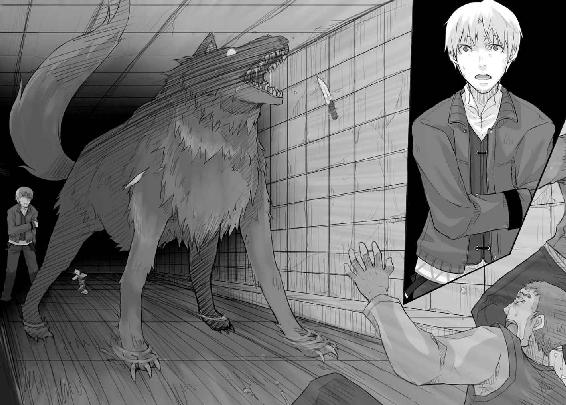
これが神。
北の地では、人間にはどうしようもないモノ達、という意味で神という言葉が使われる。
ロレンスはその意味がよくわからなかったが、今ならわかりすぎるほどにわかる。
どうしようもない。こんな狼、どうしようもない。
「ぐ」
「お」
武器を投げた二人が上げた声はそんな短いものだったが、それが声と呼べるかどうかは疑問だ。
狼の巨大な前足で薙ぎ払われ、壁に叩きつけられたのだ。蛙がつぶれる時に鳴くようなものだろう。
そして、狼はまるで地面を滑るかのように走り出した。
『ぬしら、生きて帰れると思うなよ』
野太く地を這うような声が響いた直後、爪と金属のぶつかる音や、途中で途切れるはめになる悲鳴が響き、ロレンスは必死に体を起こしてその後を追おうとした。
しかし、惨劇は一瞬だった。
狼の体の動きが止まると、おそらく最後まで残されていたのだろう男の声が聞こえてきた。
「か、神はいつもそうだ。いつも......いつも、理不尽だ」
ヤレイの声だった。
それに対する返事はない。その代わりに、ぐわ、と巨大な口を開ける音が聞こえ、ロレンスはたまらずに叫んでいた。
「やめろホロ！」
がちん、という音は巨大な口が閉じられた音だろう。
ロレンスはヤレイの上半身が食われたところを想像してしまったが、ヤレイが逃げられたとはとても思えない。猟犬に睨まれた鳥は絶対に空を飛べないからだ。
しかし、しばしの沈黙の後、狭い通路でも難なくくるりと振り向いたホロの口は血に濡れてはいなかった。
代わりに、気絶してぐったりとしているヤレイがその牙にひっかかってぶら下がっていたのだった。
「ホロ......」
ロレンスは安堵のため息とともにその名前を呟いたが、ヤレイをどさりと地面に落としたホロは視線をロレンスに向けなかった。
代わりに、短く言葉を呟いた。
『麦を』
体つきにふさわしい地を這う声に、ロレンスは一瞬体をびくりとすくませてしまう。
それがあのホロだとわかっていても、どうしようもない。まっすぐに視線を向けられたら、ロレンスだって正気でいられるかどうかわからない。
その狼は、あまりにも神々しい。
『麦を』
再度言われ、ロレンスは無意識のうちにうなずき手の中の皮袋を差し出そうとした。
そして、ふと思いとどまった。何か、嫌な予感がした。
「麦を、どうするつもりだ？」
ロレンスが尋ねると、ホロはしばし無言だったが不意に足を前に出した。
その瞬間、重圧のようなものを感じてロレンスは体をのけぞらせてしまう。
それが決定的な過ちだったと気がついたのは、ホロが牙だらけの口を少し歪めたからだ。
『それが答えじゃ。麦を』
麦を持って立ち去るつもりだ、とロレンスは気がついたものの、ホロの言葉はまるで何かの魔法のようにロレンスの腕を前に差し出させてしまう。
ただ、ロレンスの体には腕を支える力も、小さな皮袋を持つ力も残されていなかった。
いったん宙で止められていたその手から、まず皮袋が落ちて、次いで腕がぱったりと落ちた。
落としたそれを拾うこともできない。
ロレンスは絶望的な目で皮袋を見ていた。
『世話になったの』
ホロがそんなことを言いながら歩み寄ってきて、ロレンスの手から落ちた皮袋を大きな口で器用に拾い上げた。
その琥珀色の瞳は最後までロレンスのことを見ず、二、三歩後ろに下がるとまたくるりと器用に体を反転させ、歩き出そうとした。
ホロが得意げに自慢していた先っぽの白い尻尾が目に入る。見事な毛並みのそれが哀しげに垂らされ、ゆらゆらと遠のいていく。
ロレンスはとっさに叫んでいた。叫んでいるとは言えない声だったけれども、力の限りに叫んでいた。
「ま、待て！」
それでもホロは足を止めずに歩いていく。
ロレンスは、ホロが一歩足を前に出した時、反射的にのけぞってしまった自分が憎かった。ホロは何度も言っていた。自分の姿を見て恐れおののく目が嫌だったと。
そして、ロレンスの体は無条件にホロのことを恐れていた。人間にはどうしようもない、明らかに別種の存在としてのホロを前に恐れおののいていた。
それでも、とロレンスは思う。それでもロレンスは、ホロを呼び止めたかった。
「ホロ！」
かすれた声で叫ぶ。
駄目か。ロレンスがそう思った直後、ホロの足が止まった。
ここだ。ここでホロを思いとどまらせなければ、もう二度とホロと会えない気がした。
しかしなんと言えばよいのか。ロレンスの脳裏にたくさんの言葉がよぎっては消えていく。
今さらホロのことを怯えていないなどと言っても説得力などかけらもない。今だってホロの姿が怖いのだ。それでもロレンスはホロを呼び止めたい。そんな相反する気持ちの交錯を上手く表現する言葉が見つからない。
それでもロレンスは必死に頭を動かし、ホロに笑われた少ない語彙の中で、ホロを呼び止めるための言葉を懸命に紡ぎ上げた。
「お前が......破いた服、幾らすると思っているんだ」
そして、できあがったのはそんな言葉だった。
「神だろうがなんだろうが......弁償してもらうぞ。お前が稼いだ銀貨七十枚。あんなのじゃ足りやしない」
できる限り、いや、半ば本気で怒ったロレンスはホロに言葉をぶつけていた。
行かないでくれ、と頼んだところで絶対にだめだと思った。だからロレンスは、ロレンスがたとえホロの狼の姿に恐れていてもなおホロを行かせないようにするにはこれしかないと思った。
商人の金の恨みは谷より深く、金の取立ては夜空に浮かぶ月よりもしつこい。
それを伝えるためにロレンスは憎悪を込めて叫んでいた。ホロがロレンスの前を立ち去るのを引き止めるのではない。立ち去っても無駄だということを伝えるのだ。
「俺が何年かけて稼いだ金で......買い揃えたと思っているんだ。追いかけてやる......北の森まで追いかけてやるからな！」
ロレンスが叫ぶとわずかにその声は地下道内に反響し、やがて消え去った。
ホロはその場にじっとしていたままだったが、ふと大きな尻尾が揺らめいた。
振り向いてくれるのか。
ロレンスはついに力尽き、その場に崩れ落ちながらもそんな焦燥に似た期待感に胸が詰まるほど緊張した。
しかし、ホロは再び歩き出した。
たし、たし、と小さな音を立てながら歩いていく。
ロレンスは視界がぼやけるのを感じた。
泣いている訳じゃない。奈落の底に落ちていく意識の中、そう思うのが、精一杯だった。
真っ暗な闇の中に立っている。そこがどこで何をしているのかわからない。
上も下も右も左も真っ暗で、そのくせ自分の体はよく見えた。
一体どこなのだろうか。
そんなことを思っていると、ふと視界の隅を何かがよぎった。
ロレンスは反射的にそちらを振り向くが、何もない。気のせいかとも思ったものの、目を凝らしたりこすったりしていると、再び視界の隅を何かがよぎった。
炎？
とっさに思ってそちらを振り向くと、今度は視線の先にそのよぎった何かがきちんと見えていた。
ゆらゆらと揺れる、こげ茶色の何か。
ロレンスは目を凝らしてそれを見つめると、やがてそれが炎ではないことに気がついた。
毛だ。長いこげ茶色の毛の塊が揺れているのだ。
ふさふさとした、その先っぽが白い毛の塊。
ロレンスはその瞬間、目を見開き息を吞むと、全速力で駆け出していた。
あの毛の固まりは。あの先っぽの白さは。
ホロだ。ホロの尻尾に間違いない。
ゆらゆらと揺れながらだんだんと小さくなっていくそれを、必死に追いかけながらロレンスは叫んでいた。
しかし、声は出ず、ホロの尻尾との距離も縮まらない。
ロレンスはどんどん重くなる足に苛立ち、歯を食いしばりながら無駄だとわかりつつも右手を前に伸ばしていた。
そして、ホロの尻尾は唐突に視界から消えた。
その直後、ロレンスの目は見慣れない部屋の天井を見つめていた。
「うっ」
とっさに体を起こそうとしてロレンスは左腕に走った激痛に呻いてしまう。一瞬何がなんだかわからなかったが、その激痛が引き金になって様々な記憶が蘇る。
メディオ商会に追いかけられていたこと。左腕を刺されたこと。彼らに追い詰められたこと。
そして、ホロが立ち去ってしまったこと。
あの時、最後に見たホロの尻尾が哀しげに揺れながら遠のいていくところを思い出し、ロレンスは大きくため息をついた。
もっとましな言葉があったのではないかと、体を起こすのも億劫になった頭でそう思った。
ここがどこなのかという疑問すら、その後悔の前には塵芥だった。
「あ、お目覚めですか」
しかし、不意にそんな声に振り向けば、開け放たれたままの扉の向こうにマールハイトの姿があった。
「傷の具合はいかがですか」
書類を手にしながらマールハイトはロレンスのほうに歩み寄り、ロレンスの枕もとの木窓を開け放つ。
「ええ......お陰さまで」
木窓から入ってくる爽やかな風と、それに乗って聞こえてくる喧騒から、ここがミローネ商会の一室だということがわかった。
と、いうことは、ロレンスはあの後に救援に来たのだろうミローネ商会の者に無事保護されたということだ。
「こちらの不手際で危険な目にあわせてしまい、申し訳ありませんでした」
「いえ。元はといえば私の連れが原因ですから」
ロレンスの言葉に、マールハイトはなんとも言えないといった表情でうなずき、それから言葉を選ぶようにしばし沈黙して、ゆっくりと口を開いた。
「教会には運良く見つかりませんでした。騒ぎも地下道内で起こったのが幸いしました。もしもロレンスさんのあのお連れの方の姿が教会の目に止まっていたら......もしかしたら支店だけではなく、本店まで火にくべられていたかもしれません」
その言葉に、ロレンスは驚いて聞き返していた。
「ホロの姿を見たのですか？」
「はい。地下道内に慌てて救援に入った部下から報告がありまして、ロレンスさんを発見したものの巨大な狼が私を連れてくるまでロレンスさんは渡さないと言っていると」
マールハイトが噓をつく理由はどこにもない。だとすれば、ロレンスが気を失った後、ホロは戻ってきてロレンスのそばにいてくれたのだ。
「それで、それでホロは、今どこに？」
「市場のほうに行かれましたよ。気の早いことに、旅装を整えてくると」
事情を知らないのであろうマールハイトは軽くそう言ったが、ロレンスからすればそれはホロが一人で旅に出ることを示していた。
きっと今頃は北に向かう道の上だろう。
それを考えると胸にぽっかりと大きな穴が空いたような気持ちだったが、逆にそれで吹っ切れたような気もした。
元々ホロとは偶然ともいえないほど奇妙なことで数日間一緒に過ごしただけなのだ。
数日の間夢を見ていたのだと思えば、我慢できないこともなかった。
ロレンスはそう思うことで無理やりにでも一応気持ちの切り替えをつけ、頭の中を商人のそれに戻していった。
マールハイトの言葉には、ホロのことと共に重要なことがもう一つ含まれていたからだ。
「ホロが市場に行ったということは、メディオ商会との取引はうまくいったということですか」
「はい。今朝、トレニー城に走らせた者が無事帰りまして、王との取引をまとめてきました。メディオ商会が最も欲しがりそうな特権を無事引き出せましたよ。そして特権を餌にメディオ商会に交渉を持ちかけましたら、メディオ商会も事態を把握し完全な負けを察していたようです。実に円滑に事が運びました」
マールハイトは誇らしげに答える。
「そうですか。それはよかった......。しかし、そうすると私は丸一日くらい眠っていたということですか」
「え？ ええ、そうなりますね。あ、昼食はいかがですか。先ほど昼を回ったばかりなので、まだ厨房も火を落としていないでしょうから、温かいものを用意できますが」
「いや、結構です。それより、取引の詳細を聞かせてもらえませんか」
「はい。わかりました」
無理に飯を勧めないあたりが南の人間だとロレンスは少しおかしく思った。これがこの辺の人間となると意地でもロレンスに飯を食わせようとしただろう。
「我々が回収した銀貨の総枚数は三十万七千二百十二枚。王はかなり大胆に銀の切り下げを行うようで、即金にて三十五万枚相当の貨幣で支払っていただけるとのことです」
さすがに目も眩むような数字だ。ただ、ロレンスはその数字に怖気づくことなく自分の利益を計算する。
契約ではミローネ商会の得た利益に対して五分。ざっと計算すれば、銀貨二千百枚の儲けだ。
それだけあれば、ロレンスの夢、自前の商店を開く夢は現実のものとなる。
「ロレンスさんとの契約によれば、お渡しするのは我々が得た利益の五分です。相違ございませんね？」
マールハイトの言葉にロレンスはうなずき、マールハイトもうなずく。
そして、マールハイトは一枚の書類をロレンスに手渡したのだった。
「ご確認ください」
その言葉はロレンスの耳に入らなかった。
手渡された紙には、信じられない数字が書かれていたのだ。
「こ......れは」
「銀貨にして百二十枚。それが我々の利益の五分です」
マールハイトの言葉はあまりにも冷徹だ。
ただ、ロレンスはそれに対して怒ることもできない。なぜなら、ロレンスの手の中にある書類には、ロレンスの分け前がそんなはした金になった理由が実に詳細に書かれていたからだ。
「我々が用意した貨幣の運搬料、また王が支払う銀貨の運送料、銀貨運送に伴う関税、それに、契約そのものに対する契約手数料。王に入れ知恵したのは御用商人でしょう。特権を引き渡す代わりに、せめて銀貨買取の際の損くらいは取り返そうと思ったのでしょう」
明細を見れば、王はその立場を実にうまく利用して、ミローネ商会から金を取り返そうと画策しているのが見て取れる。
ミローネ商会が集めた銀貨の運搬料をミローネ商会に負担させた上に、王が支払う銀貨も為替ではなく銀貨そのもので支払うと言い張っている。数十万枚に及ぶ銀貨の運搬には莫大な費用がかかる。馬や人、銀貨を入れる木箱、それに護衛の者達。
その上、王は契約の際の契約書作成料という名目で、ものすごい金額をふんだくっている。
南の国の爵位を持つ大商人が経営する商会の支店との契約であっても、それはやはり爵位持ち商人と王という身分違いの者同士の契約に過ぎない。力関係は歴然としているのだ。ミローネ商会はその手数料に文句を言える立場にはなかった。
「我々が計算した結果、我々が得る利益は銀貨にして二千四百枚。その五分ということで、ロレンスさんにお渡しする銀貨はその枚数になります」
必死に頭を巡らせ、腕を刺されまでして、銀貨百二十枚。
その上、この件に首を突っ込まなければホロと別れることもなかっただろうということを考えると、ロレンスの頭の中には赤字の二文字しか浮かばない。銀貨百二十枚ではとても割に合わなかった。
しかし、契約は契約だ。ロレンスはそれに納得するしかない。得をすることもあれば大損することもある。それは商人にとって当たり前の事実だ。命を落とさず、また少ないとは言ってもあの状況から銀貨百二十枚を手に入れることができたのは僥倖かもしれない。
ロレンスは書類を前に、ゆっくりとうなずいたのだった。
「これらは我々としても予想できませんでした。残念な結果になったと思います」
「商売に予想外のできごとはつきものですから」
「そう言っていただけるとありがたいです。ですが」
そう続けたマールハイトのほうを、ロレンスは思わず振り向いていた。
マールハイトの口調が、どういうわけか明るかったからだ。
「予想外のできごとというのは良いほうにも起こります。こちらを」
ロレンスはマールハイトの差し出した二枚目の書類を受け取り、そこに書かれている短い文字に目を通す。
その直後、ロレンスは驚いて再びマールハイトのほうを見た。
「メディオ商会はよほど特権が欲しかったとみえます。それに、価値が下がるとわかっている銀貨を集めてもいたのですから、それは負債を抱え込んだのと同じです。確実に儲けが見込める特権を用いた商売がどうしてもやりたかったのでしょう。向こう側から即決の値段を提示してきましたよ」
ロレンスの手元にあった書類には、特別利益の分け前としてロレンスに銀貨千枚を贈呈すると書かれていたのだ。
「千枚も......宜しいんですか」
「ええ、安いものです」
笑顔で言うのだ。よほど儲かったのだろうが、さすがにそれを聞くほどロレンスは無粋ではない。大体、契約外の分け前としてこれほどの金額をくれるなど、道を歩いていて金塊を拾うようなものだ。
契約とはそれほどに重要なものだし、契約を介さない金のやり取りなど存在しないに等しいのだ。
「それと、ロレンスさんのその傷が癒えるまでの滞在費用と、ロレンスさんの荷馬車の管理も我々が請け負わせていただきます」
「荷馬は無事だったのですか」
「ええ。さすがに馬は人質にとってもしょうがないとメディオ商会も判断したのでしょう」
マールハイトが笑いながら言うのでロレンスもつい釣られて笑う。
しかし、それにしても破格の待遇だ。
「細かい実際の支払いなどに関してのご相談はまた後日に致しましょうか」
「そうですね。いやしかし、本当に、ありがとうございます」
「いえ、こちらとしましても、ロレンスさんほどの商人と今後とも良い関係が築けるならと思えば、安いものですからね」
損得勘定に抜け目のない目でマールハイトはロレンスを見て、おそらくはわざとだろうが、商談用とわかる笑みを浮かべた。
ただ、それはロレンスがミローネ商会という大商会の支店を預かる人間から銀貨千枚を渡してでも懇意にしたいと思うくらいには価値のある商人として評価されたということだ。
それは一介の行商人であるロレンスとしては喜ぶべきことだ。
ロレンスは目礼して、ベッドの上から礼を言ったのだった。
「あ、一応お聞きしておきますが、支払いは銀貨が宜しいですか？ 何か商品に変えたほうが宜しければ、手配いたしますが」
銀貨も千枚となるとかさばるだけでなんの得にもならない。マールハイトの好意の申し出にロレンスは少し黙考し、マールハイトから受け取れる銀貨の枚数と自分の荷馬車の大きさを考慮して、良い商品が一つ思い浮かんだ。
「胡椒とかありますか。軽いしかさばらないし、これから冬に向けて肉料理が増えれば値段も上がりますからね」
「胡椒、ですか」
「どうかしましたか？」
マールハイトが小さく笑ったので、ロレンスは聞き返した。
「あ、いえ申し訳ありません。つい最近南から送られてきた戯曲を読んだのですが、そこでの話を思い出してしまいました」
「戯曲？」
「ええ。大金持ちの商人の前に悪魔が出てきて、こう言うのです。ここで最も美味い人間を連れてこい、さもなければお前を食らうと。その商人は自分の命が惜しいためにうら若く美しいメイドや、下男の中でよく太った男などを差し出すのですが、悪魔は首を横に振るのです」
「ほう」
「そして、結局家中どころか町中に金を撒いて美味そうな人間を探すわけですが、ついに蜂蜜とミルクの香りがする見習い修道士の小さい男の子を見つけます。その男の子を修道院ごと金で買った商人は早速悪魔に差し出すのですが、その時に男の子が悪魔に向かって言うのです。神に逆らいし悪魔の者よ、この世で一番美味い人間は私などではないのです、と」
ロレンスは完全に話に吞み込まれて無言でうなずいた。
「この世で最も美味い人間はあなたの目の前にいたのです。即ち、来る日も来る日も香辛料を担いで金を儲け、その肥え太った魂にたっぷりと香辛料のうまみを効かせた男がね、と」
実に楽しげに話すマールハイトは身振りまで加え、最後に恐れおののく商人の顔真似をすると、ふと我に帰ったようで恥ずかしげに笑ったのだった。
「教会が商会向けに商売の節度を説く宗教劇用のものですね。それを思い出してしまったのです。確かに、これから大きく稼ごうとしている商人には香辛料がぴったりだな、と」
その言葉が褒め言葉であることくらい、商人同士なら実によくわかる。
ロレンスは話の面白さとその褒め言葉にまんざらでもない笑みを浮かべて、口を開いていた。
「早く香辛料の効いた体になりたいものです」
「期待しております。今後とも、当商会をよろしくお願いしますよ、ロレンスさん」
マールハイトは抜け目なくそう言って、再度二人で笑いあったのだった。
「では、胡椒は手配しておきます。私は仕事がありますのでこれで......」
と、マールハイトが身を翻そうとした時だった。
部屋の扉をノックする音が控えめに鳴ったのだ。
「お連れの方でしょうか」
マールハイトはそう言ったが、それはないとロレンスは確信を持てた。
マールハイトが扉を開けるためにベッドを離れたので、ロレンスは枕もとの窓を見上げた。
そこからは、綺麗な青空がよく見えたのだった。
「支店長。こんな請求書が」
扉を開けると共に、そんな控えめの声が聞こえ、かさりという紙を差し出す音が聞こえた。
きっと急の請求書か何かだろう。ロレンスは、早く自分も店を持ちたいものだなと思いながら、空に浮かぶ小さな白い雲を見つめていた。
マールハイトの言葉が耳についたのは、それからすぐのことだった。
「あて先は確かにうちの商会だが......」
それから、ロレンスがマールハイトに視線を向けると、マールハイトもロレンスのほうを見た。
「ロレンスさん。ロレンスさんの名前で請求書が届いているのですが」
ロレンスの頭の中に、一斉に取引先の名前と債務関係が展開される。
そのうちの中で決済日の近いものを色々とあげてみるが、基本的に町と町の移動にかかる日数がとても不安定なのだ。例え決済日が昨日であっても行商人のロレンスに決済日を厳格に守れと言うような人間はいないはずだ。
第一、どうしてロレンスがここにいるとわかったのだろう。
「見せていただけますか」
ロレンスの言葉に、マールハイトは部下から書類を受け取り、ロレンスの側に持ってきて手渡した。
ロレンスはそれを受け取ると、契約の際のお決まりの文句を飛ばして明細欄に目を向ける。
何の商品か分かればどこの誰からのものかすぐにわかるからだ。
そして、そこにあった商品名は身に覚えのないものだった。
「えーと......」
と、首をひねりかけたが、その瞬間にベッドの上で跳ね起きていた。
マールハイトが驚いて声をかけようとするが、ロレンスはそれを待たずにベッドから飛び下りる。痛む左腕のことなど無視して扉に駆け寄った。
「あ、あの」
「どいてくれ！」
ロレンスは怒鳴り、あわてて道をあけた商会の者の奇異な視線も無視して廊下に出て、駆け出そうとしてふと立ち止まった。
「荷揚げ場はどっちですか」
「あ、えっと、その廊下を突きあたって、左に行った先をずっと行けば」
「ありがとう」
短くそう言ってすぐに駆け出していた。
結構な金額に上る請求書を握りしめ、ロレンスは力の限りに走っていた。
手に握りしめられ、くしゃくしゃになった請求書に書かれていた品名は、ロレンスにそこまでさせるものだったのだ。
日付は今日のもの。請求元はパッツィオの市で店を開く毛織物商と果物商。
その内訳は、豪華な女性用のローブ二着に絹の腰帯、それに旅行用の靴とべっ甲の櫛、そして、大量の林檎。
銀貨にして百四十枚に上るそれらは、特に林檎などとても手に持って運べる量ではない。
そのくせ、その請求書には荷馬車の項目がなかったのだ。
それから導かれる結論。
ロレンスは荷揚げ場にたどり着いた。
たくさんの商品が山と並び、遠方から運ばれてきた物と、これから運ばれていく物が交錯し、馬や人の声が飛び交う活気に満ちた荷揚げ場は、今日もミローネ商会の繁盛を示すようにごった返していた。
ロレンスは辺りを見回して、絶対にあるはずのそれを探し回る。
広い荷揚げ場にはたくさんの馬と荷馬車がある。散らばる飼い葉や藁束のくずに足を滑らせながらも走り回り、ついに見慣れた自分の馬の姿を荷揚げ場の一角に見つけて駆け寄った。
ロレンスのそんな様子を荷揚げ場の連中が不思議そうに見つめていたが、当の本人はそれら一切を無視して一点だけを見つめていた。
荷台に山と林檎の詰まれた荷馬車の御者台に座り、立派な毛皮を手元に寄せ、べっ甲の櫛でそれを漉いている小柄な人影を。
一見して高級品だとわかるローブを身にまとい、フードを目深にかぶったその者は、やがて毛を漉く手を止めるとため息をついた。
御者台の上のその者は、ロレンスのほうを見ずに言ったのだった。
「北の森まで金の取り立てに来られてはかなわぬからな」
不機嫌そうなその言葉に、ロレンスは笑い出さずにはいられない。
ロレンスは御者台に歩み寄って、かたくなにロレンスのほうを見まいとするホロに向かって右手を差し出した。
ホロはちらりと一瞥した後に再び手元の尻尾に視線を落としたが、結局ゆっくりと手を伸ばしてきた。
ロレンスがそれを握りしめると、ホロはついに降参したように笑う。
「帰るのは借りを返してからじゃ」
「当たり前だ」
ロレンスの手を、ホロがきつくきつく握り返してきたのだった。
この奇妙な組み合わせの旅はもう少しだけ続くようだ。
即ち、狼と香辛料の二人旅が。
終わり
あとがき
賞金の懸かったなんらかのコンテストに応募するたびに、最高額の賞金を受け取ったときのことを考えずにはいられない人間です。
そして、その賞金で株を買うと資産が倍々に増えていき、いつも最後は世界を左右するほどの資産家になっています。
最近は、ようやく立ち食い蕎麦屋で迷わず大盛りの食券が買えるようになりました。
はじめまして。支倉凍砂と申します。
このたび第十二回電撃小説大賞銀賞という空に浮かぶ月と同義であったような賞を光栄にもいただきました。あまりの信じられなさに、実は別の人の間違いでした、という電話がかかってくる夢を三度見ました。
原稿の直しが始まってからは、実は締め切りが過ぎていた、という夢を二度見ました。
世界を左右するほどの資産家になった夢は、何度見たかわかりません。
果たしてこれは夢なのか現なのか。そう思いながらこのあとがきを書いています。
そんな夢の世界に扉を開いてくださった下読みの方、編集部の方、選考委員の方々、本当にありがとうございました。また、受賞パーティーでお声をかけてくださった方々、とりわけ『狼と香辛料』のタイトルにちなんで狼のシルバーアクセサリーをくださいました結城充考先生、ありがとうございました。銀の狼は今もパソコンの横に鎮座しています。
それから、美麗なイラストを描いてくださった文倉十先生。驚くほど自分のキャラクターがそこにいました。感謝の念と同じくらい、驚きも大きかったです。
そして、私が今この状態にあるということに関係しているすべての人、事、物、ありがとうございました。
これが泡沫の夢で終わらぬよう、努々努力を忘れぬ所存であります。
支倉凍砂
支倉凍砂
１９８２年12月27日生まれ。大学にて物理を学ぶ傍ら執筆した本作で第12回電撃小説大賞〈銀賞〉を射止めて喜ぶのもつかの間、必修単位も射止めなければならない現実に泣き暮らす日々。数式を見ると眩暈がするのは、量子揺らぎのせいだと信じて疑わない。
文倉十
１９８１年生まれ。京都府出身のＡＢ型。現在東京にて、フリーで細々と活動中。当面の目標は大きな本棚を買うこと。あと、神社霊場巡り。基本眠れれば幸せな人間です。
電撃文庫
狼と香辛料
支倉凍砂
二〇十三年四月二十五日 配信
発行者 塚田正晃
発行所 株式会社アスキー・メディアワークス
〒一〇二─八五八四 東京都千代田区富士見一─八─十九
(C)2006 ISUNA HASEKURA/ASCII MEDIA WORKS
本書（電子版）に掲載されているコンテンツ（ソフトウェア／プログラム／データ／情報を含む）の著作権およびその他の権利は、すべて株式会社アスキー・メディアワークスおよび正当な権利を有する第三者に帰属しています。
法律の定めがある場合または権利者の明示的な承諾がある場合を除き、これらのコンテンツを複製・転載、改変・編集、翻案・翻訳、放送・出版、公衆送信（送信可能化を含む）・再配信、販売・頒布、貸与等に使用することはできません。